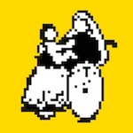
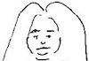

| Welcome to Japan: _Learn Japanese in 3 hours! Japan Welfare Times e-Book Series | |
| Japan Welfare Times Welcome To Japan Research Group | |
| (2018) | |
Learn Japanese in 3 hours!
We, The Japanese Welfare Times are:
1. A Nonprofit Organization that works to report on the site of welfare.
2. Impartiality. We do not belong to any religious and political groups.
3. Reporting by the side of socially vulnerable people.
We offer electronic publications that can be read with amazon kindle.
All right reserved copyright by The Japanese Welfare Times.
No part of this book be reproduced or transmitted in any form or by any means, electronic or mechanical, including photocopying, recording, or by any information storage and retrieval system, without the written, permission of the publisher, except where permitted by law.

*Our Company Emblem is "The Holy Mother And A Child On The Wheelchair."
The Japan Welfare Times:http://www.nippuku.com/
e-mail: nippuku-voice@outlook.jp
-- Oh! What's happening?
Now it's Sunday evening, right?
-- Yeah, but Japan is Monday morning, you see!
Welcome to Japan
Learn Japanese in 3 hours!
Practical Learning of Japanese language
Is Japanese language difficult?
No, it is not difficult.
A method to become able to speak Japanese in three hours is written in this book in detail.
That is a very surprising way.
And it is also a very simple method.
Now, enjoy reading!
The Japan Welfare Times
Some people get sick "Japanese language phobia" or "Japanese language allergy".
Many people all over the world learn Japanese language in a short period of time.
Reason why it is said that "Japanese language is difficult"
1. Unique grammar.
2. There are mixed notation letters.
「ひらがな」"Hi-ra-ga-na"
「カタカナ」"Ka-ta-ka-na"
「漢字」"Ka-n-ji"
3. "Honorifics, polite language".
In the first place, Japanese citizens say their country is not "ja-pa-n", but "Nippon" or "Nihon".
Japanese say native language is "Nihon-go" or "Nippon-go".
Japanese say themselves that their nationals are not "Japanese", but 'Nippon-jin" or ''Nihon-jin."

How to learn Japanese language
The most important thing is strong motivation (reason for learning) to learn Japanese efficiently.
If motivation is weak, learning effect can not be obtained.
The strongest motivation is the desire for love and life activities.
Studying in the school with a bad feeling, the motivation is weak, so the learning effect is low.
What kind of motivation do you have?
Travel, study abroad, work, business, that goals are different.
some people keep on doing short-term visits for 2-3 days, and, some people live in Japan for 1 to 2 months, or more than half a year.
In each case, "minimum Japanese language" will be different, which you should know.
You do not have to learn a lot of Japanese language though you do not stay in Japan only for 2 or 3 days.
Conversely, if you live for more than half a year, or if you need to use Japanese to find a job or business, but you don't speak Japanese well, then you may experience severe losses.
This book introduces "The easiest of Japanese".
It's "Japanese language learning in 3 hours".
This book is valid if you want "to go to Japan suddenly" or if you want "to learn Japanese language suddenly".
You will be able to finish reading this book while on an airplane, and will be released from the "Japanese language phobia" before going down to Japanese soil.
The need to understand "the easiest Japanese language" is as follows.
1. It is based on communication in Japan. That you are coming to Japan for a short time, for some reason. (Alternatively, include phone, letter and internet conversation)
2. The Japanese grammar you study is only the minimum.
3. The only thing you should remember is the minimum.
4. Each chapter shows learning mechanisms that can expand Japanese language skills.
5. A rough introduction of Japan and Japanese language.
In other words, this book is,
-- With the required vocabulary skills minimum, you will create a "tool for learning Japanese" and then build the "communication skills" that you want.
You may read this book a few days before you travel to Japan in your country.
You may be reading this book in an airplane heading to Japan.
Or perhaps you are reading this book since you arrived in Japan.
Either way, if you have read this book, it will be all right.
Because, it is an important point, many of contemporary Japanese are not even able to speak English, but they think that "we will respond kindly" and "let's understand what foreigners are trying to say".
This is the heart of Japanese hospitality "O-mo-te-na-shi".
By respecting, and by kindness, it means that Japanese people have the idea of "to share a pleasant feeling with each other".
The Japanese mind compensates for your linguistic defects.
Therefore, you don't need to be too nervous about "Japanese language".
If you are friendly, also you will deepen understanding "Japanese language" naturally.
<<Important!>>
Let's learn "Japanese language" by using your personal computer.
Open the "system environment" on your computer, and open the "input source" from the "keyboard", select "Japanese language".
If you get a "Japanese keyboard", it's effective in "learning Japanese language".
"Hiragana" printed "Japanese keyboard cover" is also on sale.
If you don't have one yet, you can buy it online or buy it at a Japanese electric store.
Of course, it is also sold in areas other than Akihabara.
<<Important!>>
Another important thing for learning Japanese is using a PC.
This is direct Japanese conversation using site "Skype" or "sharing language".
There are many people who want to talk in English in Japan.
Therefore, it is easy to find a Japanese who can speak English at "Language Share" site.
If you would like to speak Japanese before going to Japan, do not hesitate to check it out.
All you need is a personal computer and a set of headphones with a microphone.
There are also paid sites, but there are many free sites as well.
<<Important!>>
There are ways to find friends by SNS who speak Japanese well.
You have him/her teach you Japanese language.
If you have a smartphone and come to Japan, someone can answer your questions in real time on SNS.
You can get the latest information about shops and tourist attractions.
It is also effective to download Japanese conversation applications and use them for conversation.
When using a Japanese conversation application, we recommend you use the smartphone to study, then you talk directly to the Japanese.
If you are too dependent on SNS and applications, you might end up in an environment that only needs to speak the same language, so you might get fewer Japanese lessons.
If you are talking only within a fellow, especially if you travel to Japan with family or group, you may miss the opportunity of exchanging with Japanese people.
The important thing is to have a dynamic experience that you speak Japanese.
It will be the beautiful memories for you to speak in Japanese on your trip.
Even with a little shopping, let's try using Japanese.
You can experience exchanges with people across languages.
What you need:
1. a map of Japan
2. a pocket dictionary of Japan-English language
3. a notepad and a pen
4. a Japanese language keyboard
5. a headphone set with a microphone
6. a smartphone
7. friendly smile
Of course you already have them, don't you.
Please enjoy this book!
In this chapter, we introduce the minimum Japanese language required.
One phrase is described by Four character groups.
This book's Notation:
1. Original Japanese language notation.
2. "Hiragana" notation in Japanese :（ひ）
3. Romanisasi:（Ro.)
-- Please refer to pronunciation in Japanese language.
4. Normal pronunciation:(Normal)
5. English:(En.)
（Example）
面白い英語ですが、許してね。
（ひ）おもしろいえいごですが、ゆるしてね。
（Ro.) o-mo-si-ro-i-e-i-go-de-su-ga, yu-ru-si-te-ne.
(Normal) omosiro-i-eigo-desu-ga, yurusi-te-ne.
（En.) Funny English, sorry.
<<Important!>>
Important things are,
1. That means not "learning Japanese language", but "improving communication skills in Japanese".
2. You always have to think about "who can speak English?".
(i) Immediately, you speak earnestly in Japanese language.
(ii) To find people who can speak English.
3. You don't need to be afraid to make mistakes in Japanese language.
4. First of all, you must write all of the following phrases (only 26) into your notepad.
5. While you write them down, you check the contents, and to be able to speak them whenever you want.
6. Walk with your notepad anytime and anywhere.
7. Therefore, if you look at notepad, you can speak Japanese language at the airport arrival.
8. Speaking with reference to notepad, people may be able to understand your idea.
9. Write the words in it that seem to be important, one by one.
Most Japanese people only understand simple English like "go" or "stop" and so on.
People who can speak in English: medical doctors, airport staffs, hotel workers, bankers.
People who are likely to speak in English: policemen, taxi drivers, college students, high school students, businessmen.
<<Important!>>
1.（ひ）あなたは、えいごが、しゃべれますか？
（Ro.) a-na-ta-wa-e-i-go-ga-sya-be-re-ma-su-ka?
(Normal) anata-wa-eigo-ga-syabere-masu-ka?
（En.) Do you speak English?
2.（ひ）だれか、えいごを、しゃべれるひとはいますか？
（Ro.) da-re-ka-e-i-go-o-sya-be-re-ru-hi-to-wa-i-ma-su-ka?
(Normal) dare-ka-eigo-o-syabereru-hito-wa-imasuka?
（En.) Is there anyone who can speak English?
3.（ひ）だれか、えいごを、しゃべれるひとを、おねがいします。
（Ro.) da-re-ka-e-i-go-o-sya-be-re-ru-hi-to-o-o-ne-ga-i-si-ma-su.
(Normal) dare-ka-eigo-o-syabereru-hito-o-onegai-simasu.
（En.) Please introduce me someone who can speak English.
4.（ひ）こんにちは。
（Ro.) ko-n-ni-ti-wa
(Normal) konnitiwa
（En.) Hello.
5.（ひ）さようなら。
（Ro.) sa-yo-u-na-ra
(Normal) sayounara
（En.) Goodbye. / See you again.
6.（ひ）どうもありがとうございます。
（Ro.) do-u-mo-a-ri-ga-to-u-go-za-i-ma-su.
(Normal) doumo-arigatou-gozai-masu.
（En.) Thank you very much.
7.（ひ）はい／いいえ
（Ro.) ha-i / i-i-e
(Normal) hai / iie
（En.) Yes / Not, No
8.（ひ）どうぞよろしくおねがいします。
（Ro.) do-u-zo-yo-ro-si-ku-o-ne-ga-i-si-ma-su.
(Normal) douzo-yorosiku-onegai-simasu.
（En.) Nice to meet you. / Thank you. / Please do it.
9.（ひ）すみません。
（Ro.) su-mi-ma-se-n.
(Normal) sumimasen.
（En.) Please. / Excuse me. / Sorry.
10.（ひ）これをください。
（Ro.) ko-re-o-ku-da-sa-i.
(Normal) kore-o-kudasai.
（En.) I want to buy this, please. / Give it to me. (You point it) / I'll take this.
11.（ひ）わたしは "A noun group" です。
（Ro.) Wa-ta-si-wa "A noun group" de-su.
(Normal) Watasi-wa "A noun group" desu.
（En.) I am "A noun group: names, professions, students, etc."
12.（ひ）あなたは "A noun group" ですか？
（Ro.) a-na-ta-wa "A noun group" de-su-ka?
(Normal) anata-wa "A noun group" desu-ka?
（En.) Are you "A noun group: name, profession, student, etc"?
13.（ひ）わたしは〜したいです。
（Ro.) wa-ta-si-wa "B noun group" si-ta-i-de-su.
(Normal) watasi-wa "B noun group" sitai-desu.
（En.) I want to "B noun group: do, shopping, eat and drink, take a bath, etc".
14.（ひ）わたしは〜しました。
（Ro.) wa-ta-si-wa "B noun group" si-ma-si-ta
(Normal) watasi-wa "B noun group" sima-sita
（En.) I did "B noun group: lost article, shopping, eat and drink, take a bath, etc".
15.（ひ）わたしは〜できないです。
（Ro.) wa-ta-si-wa "B noun group" de-ki-na-i-de-su.
(Normal) watasi-wa "B noun group" dekinai-desu.
（En.) I can not to "B noun group: do, shopping, eat and drink, take a bath, etc".
16.（ひ）"B noun group" してください。
（Ro.) "B noun group" si-te-ku-da-sa-i.
(Normal) "B noun group" site-kudasai.
（En.) Please "B noun group: do, cooking, take a photo, etc".
17.（ひ）あなたは "B noun group" しますか？
（Ro.) a-na-ta-wa "B noun group" si-ma-su-ka?
(Normal) anata-wa "B noun group" simasu-ka?
（En.) Do you "B noun group: do, cooking, talk, having tea, meal, etc"?
18.（ひ）"B noun group"しないでください。
（Ro.) "B noun group" si-na-i-de-ku-da-sa-i.
(Normal) "B noun group" sinai-de-kudasai.
（En.) Please you do not "B noun group: do, take a photo, leave me alone, etc".
19.（ひ）"C noun group"、 はどこですか？
（Ro.) "C noun group", wa-do-ko-de-su-ka?
(Normal) "C noun group", wa-doko-desuka?
（En.) Where is "C noun group: toilet, check counter, Hotel, bus stop, station, etc"?
20.（ひ）わたしは "C noun group" にいきたいです。
（Ro.) Wa-ta-si-wa "C noun group" ni-i-ki-ta-i-de-su.
(Normal) Watasi-wa "C noun group" ni-ikitai-desu.
（En.) I want to go to "C noun group: toilet, check counter, Hotel, bus stop, station, etc".
21.（ひ）たすけてください。
（Ro.) ta-su-ke-te-ku-da-sa-i.
(Normal) tasukete-kudasai.
（En.) Please help me.
22.（ひ）にほんごで、これは、なんといいますか？
（Ro.) Ni-ho-n-go-de, ko-re-wa, na-n-to-i-i-ma-su-ka?
(Normal) Nihon-go-de, kore-wa, nanto-ii-masuka?
（En.) What is this saying in Japanese? (You point to it)
23.（ひ）えいごの（ ）を、にほんごでは、なんといいますか？
（Ro.) e-i-go-no （ ）o, Ni-ho-n-go-de-wa, na-n-to-i-i-ma-su-ka?
(Normal) eigo-no （ ）o, Nihon-go-dewa, nanto-ii-masuka?
（En.) In English,（things, whole words）, How do you say it in Japanese?
24.（ひ）「ひらがな」で、かいてください。
（Ro.) Hi-ra-ga-na-de, ka-i-te-ku-da-sa-i.
(Normal) Hiragana-de, kaite-kudasai.
（En.) Please write in "Hiragana". (You hand your notepad.)
25.（ひ）ちずをここにかいてください。
（Ro.) ti-zu-o-ko-ko-ni-ka-i-te-ku-da-sa-i.
(Normal) tizu-o-koko-ni-kaite-kudasai.
（En.) Please write a map on this paper. (You hand your notepad.)
26.（ひ）もういちどおねがいします。
（Ro.) mo-u-i-ti-do-o-ne-ga-i-si-ma-su.
(Normal) mou-iti-do-onegai-simasu.
（En.) Once again, please. / One more time, please.
Related vocabulary
As described above, select words from the group and place them in phrases, so you will communicate.
"A noun group"
氏名(si-me-i: name)
だれ(dare: who)
大学生(daigaku-sei: University student)
高校生(koukou-sei: High school student)
アメリカ人(amerika-jin: American parson)
イギリス人(igirisu-jin: English parson)
オーストラリア人(oosutoraria-jin: Australian person)
インド人(indo-jin: Indian)
ガイド(gaido: guide)
〜アレルギー(〜arerugii: -allergies)
ベジタリアン(bejitarian: vegetarian)
イスラム教徒なので、食べ物は「ハラール」(isuramu-kyouto-nanode-tabemono-wa "ha-ra-a-ru": Food is "Halal", because I am a Muslim.)
旅行しているの(ryokou-site-iru-no: traveling)
とてもお腹が空いているの(totemo-onaka-ga-suite-iru-no: very hungry)
トイレに行きたいの(toire-ni-iki-tai-no: want to go to the toilet)
"B noun group"
買い物を(kaimono-o: shopping)
食事を(syokuji-o: eat meal)
入浴を(nyuuyoku-o: bathing)
観光を(kannkou-o: sightseeing)
病院に受診を(byouin-ni-jyusin-o: go to hospital)
警察に届け出を(keisatu-ni-todokede-o: report to police)
お祈りを(oinori-o: praying)
忘れ物を(wasuremono-o: lost article; something forgotten)
道順を記述(miti-jyun-o-kijyutu: describe directions)
"C noun group"
案内所(annai-jyo: Information Center)
トイレ(toire: Toilet)
空港(kuukou: Airport)
ホテル(hoteru: Hotel)
レストラン(resutoran: Restaurant)
東京(toukyou: Tokyo)
病院(byouin: Hospital)
薬局(yakkyoku: Drugstore)
警察(keisatu: Police)
駅(eki: Station)
バス停(basu-tei: Bus stop)
大使館(taisi-kan: Embassy)
店(mise: Shop)
建物(tatemono: Building)
Diseases, injuries, crime victims, etc, if you tell only one word repeatedly, maybe Japanese people understand it.
Or by your gesture.
Or drawing pictures.
Anyway, you have to do everything that you want to tell about.
This is how we protect ourselves in travel in countries where language is difficult to communicate.
These are also the dynamism and joy of traveling.
<<Important!>>
Even if you ask Japanese people with difficult words, they don't understand much.
Even if they understand what you want to say, many Japanese will reply in Japanese language.
Therefore, you must understand the meaning of what they say in Japanese language.
It can be said that it is very difficult.
If you are not confident in understanding, you have to re-make the sentence into a simpler sentence.
(Example)
浅草まで、どう行ったらいいのですか？
（ひ)あさくさまで、どういったらいいのですか？
（Ro.) a-sa-ku-sa-ma-de, do-u-i-tta-ra-i-i-no-de-su-ka?
(Normal) asakusa-made, dou-ittara-iino-desuka?
（En.) How can I get to Asakusa?
what do you think?
If you ask this question, can you understand the opponent's reply in Japanese language?
Japanese people tell you about various things, for example, subway changes, the nearest station, bus stops, many crossroads, difficult place names, etc.
(Example)
それは何故ですか？
（ひ)それはなぜですか？
(Ro.) so-re-wa-na-ze-de-su-ka?
(Normal) sore-wa-naze-desu-ka?
(En.) Why is that?
You are a foreigner, of course you want to find out.
But maybe Japanese people will be confused.
Because they haven't thought about it in their lives.
Or
Even if they explain, they might think that you can't understand.
If Japanese people talk to each other, they can judge to some extent how much they have the ability to understand.
They don't know how much you can understand Japanese words.
For Japanese people, it's very easy to talk to Japanese people, but you are not Japanese.
Therefore, they will be confused.
"What can I say about that?"
At the level of English.
At the level of knowledge.
To speak according to your intellectual level.
You would agree as well.
If foreigners who come to your country ask about the culture of your country, can you answer it?
Intercultural exchange is like this.
The trip is like this.
You may dislike asking some things to Japanese people.
You may become someone who dislike talking to Japanese people.
You may dislike Japan, because you can not understand Japanese people nor Japanese language.
Before that can happen to you, you need to acquire communication skills in Japanese language.
Therefore, this book introduces the use of "notepad".
<<Important!>>
As much as possible, make questions to be answered with "yes" or "no".
As much as possible, don't make sentences with "5W1H".
Who（だれが: da-re-ga）When（いつ: i-tu）、Where（どこで: do-ko-de）、What（なにを: na-ni-o）、Why（なぜ: na-ze）、How（どのように: do-no-yo-u-ni）; Do not use these.
When you want to ask with, as much as possible, anticipate answers first and think about sentences.
-- "You ask for a way to go to Asakusa" -- Correct answer.
1. You open your notepad.
2. To think which phrases are good.
3. To find it out.
4. It is -- No.20.（ひ）わたしは "C noun group" にいきたいです。
（Ro.) wa-ta-si-wa "C noun group" ni-i-ki-ta-i-de-su.
(Normal) watasi-wa "C noun group" ni-ikitai-desu.
（En.) I want to go to "C noun group: toilet, check counter, Hotel, bus stop, station, etc".
5. You put the word "Asakusa" in "C noun group", and you consider the sentence.
6. Practice saying "Watasi-wa "Asakusa" ni-ikitai-desu.", it means " I want to go to Asakusa"
7. You find people who can speak English.
8. Greeting and talk to. With smile.
9. You open a map of "Tokyo".
10. You point to "Asakusa" on the map.
11. You ask "Watasi-wa "Asakusa" ni-ikitai-desu.", it means "I want to go to Asakusa"
-- At this time, if you can understand the person's words, your problem is over.
-- If you can not understand it, as follows.
<<Important!>>
Opponents can immediately understand that you are a foreign traveler and cannot speak Japanese.
<<Important!>>
"10 clauses", necessary for you.
1. First, you have to think about your question what he/she can understand or not.
2. Before your asking him/her, you have to think about the answer to what you can understand or not.
3. Change to a question that you can understand.
4. Actually you ask with friendly.
5. If you can't communicate with him/her, try to talk until you can do it.
6. If you cannot understand, you are very grateful to him/her, and ask someone else again.
7. Instead of increasing vocabulary, learn to improve communication skills.
8. Don't be rude to Japanese people.
9. Frequently, write a necessary vocabulary in your notepad.
10. Enjoy it all as "happy memories in Japan".
(ひ）これはいくらですか？
(Ro.) ko-re-wa-i-ku-ra-de-su-ka?
(Normal) kore-wa-ikura-desuka?
(En.) How much is this?
(ひ）いります。
(Ro.) i-ri-ma-su.
(Normal) iri-masu.
(En.) I need it. / I want it.
(ひ）いりません。
(Ro.) ri-ma-se-n.
(Normal) ri-masen.
(En.) I don't need it. / I don't want it.
両替を、してください。
(ひ）りょうがえを、してください。
(Ro.) ryo-u-ga-e-o-si-te-ku-da-sa-i.
(Normal) ryou-gae-o-site-kuda-sai.
(En.) Please exchange money.
The unit of money in Japan is "yen".
There are "banknotes" and "coins" in Japan.
(Coins)
1-yen, 5-yen, 10-yen, 50-yen, 100-yen, 500-yen
(Banknotes)
1,000-yen, 5,000-yen, 10,000-yen
[ Memo ]
(How to count numbers)
０「零、れい、ぜろ」(re-i, ze-ro)
１「一、いち、ひとつ」(i-ti, hi-to-tu)
２「二、に、ふたつ」(ni, hu-ta-tu)
３「三、さん、みっつ」(san, mi-ttu)
４「四、よん、し、よっつ」(yon, si, yo-ttu)
５「五、ご、いつつ」(go, i-tu-tu)
６「六、ろく、むっつ」(roku, mu-ttu)
７「七、しち、ななつ」(siti, na-na-tu)
８「八、はち、やっつ」(ha-ti, ya-ttu)
９「九、きゅう、ここのつ」(kyu-u, ko-ko-no-tu)
１０「十、じゅう、とう」(jyu-u, to-u)
２０「二十、にじゅう」(ni-jyu-u)
３０「三十、さんじゅう」(sa-n-jyu-u)
４０「四十、よんじゅう」(yo-n-jyu-u)
５０「五十、ごじゅう」(go-jyu-u)
６０「六十、ろくじゅう」(ro-ku-jyu-u)
７０「七十、しちじゅう、ななじゅう」(si-ti-jyu-u, na-na-jyu-u)
８０「八十、はちじゅう」(ha-ti-jyu-u)
９０「九十、きゅうじゅう」(kyu-u-jyu-u)
１００「百、ひゃく」(hya-ku)
１０００「千、せん」(se-n)
１００００「万、まん」(ma-n)
You read numbers in the order from the left.
(Example)
11=10+1
10(jyu-u) and 1(i-ti)=11(jyu-u-i-ti)
(Example)
123=100+20+3
100(hya-ku) and 20(ni-jyu-u) and 3(san)
=123(hya-ku-ni-jyu-u-san)
(Example)
4321=4000+300+20+1
4000(yo-n-se-n) and 300(sa-n-bya-ku) and 20(ni-jyu-u) and 1(i-ti)
=4321(yo-n-se-n-sa-n-bya-ku-ni-jyu-u-i-ti)
*
１１(jyu-u-it-i)
１２(jyu-u-ni)
２３(ni-jyu-u-sa-n)
３４(sa-n-jyu-u-yo-n)
１４５(hya-ku-yo-n-jyu-u-go)
２５６(ni-hya-ku-go-jyu-u---ro-ku)
１６７８(se-n-ro-ppya-ku-na-na-jyu-u-ha-chi)
２８９０１(ni-ma-n-ha-ssen-kyu-u-hya-ku-ich)
３２１９８７(sa-n-jyu-u-ni-ma-n-se-n-kyu-u-hya-ku-ha-chi-jyu-u-na-na)
（ひ）いま、なんじですか？
（Ro.) i-ma-na-n-ji-de-su-ka?
(Normal) ima-nan-ji-desu-ka?
（En.) what time is it now?
（ひ）いつ、とうちゃくしますか？
（Ro.) i-tu-to-u-tya-ku-si-ma-su-ka?
(Normal) itu-toutyaku-simasu-ka?
（En.) When will it arrive?
[ Memo ]
今「いま」(ima: now)
今日「きょう」(kyo-u: today)
昨日「きのう」(ki-n-ou: yesterday)
おととい(o-to-to-i: day before yesterday)
明日「あした」(a-si-ta: tomorrow)
明後日「あさって」(a-sa-tte: day after tomorrow)
一週間「いっしゅうかん」(i-ssyu-u-ka-n: one week)
先週「せんしゅう」(se-n-syu-u: last week)
来週「らいしゅう」(rai-syuu: next week)
早い「はやい」(ha-ya-i: fast)
遅い「おそい」(o-so-i: slow)
遅れ「おくれ」(o-ku-re: delay)
朝「あさ」(a-sa: Morning)
昼「ひる」(hi-ru: Noon)
夕方「ゆうがた」(yu-u-ga-ta: Evening)
夜「よる」(yo-ru: Night)
午前「ごぜん」(go-ze-n: a.m.)
午後「ごご」(go-go: p.m.)
年「ねん」(ne-n: year)
月「つき、がつ」(tu-ki, ga-tu: month)
日「ひ、にち」(hi, ni-ti: day)
時「じ」(ji: hour)
分「ふん」(hu-n: minute)
秒「びょう」(byo-u: seconds)
月曜日「げつようび」(ge-tu-yo-u-bi: Monday)
火曜日「かようび」(ka-yo-u-bi: Tuesday)
水曜日「すいようび」(su-i-yo-u-bi: Wednesday)
木曜日「もくようび」(mo-ku-yo-u-bi: Thursday)
金曜日「きんようび」(ki-n-yo-u-bi: Friday)
土曜日「どようび」(do-yo-u-bi: Saturday)
日曜日「にちようび」(ni-ti-yo-u-bi: Sunday)
休日「きゅうじつ」(kyu-u-ji-tu: Holiday)
祭日「さいじつ」(sa-i-ji-tu: a national holiday)
１月「いちがつ」(i-ti-ga-tu: January)
２月「にがつ」(ni-ga-tu: February)
３月「さんがつ」(sa-n-ga-tu: March)
４月「しがつ」(si-ga-tu: April)
５月「ごがつ」(go-ga-tu: May)
６月「ろくがつ」(ro-ku-ga-tu: June)
７月「しちがつ」(si-ti-ga-tu: July)
８月「はちがつ」(ha-ti-ga-tu: August)
９月「くがつ」(ku-ga-tu: September)
１０月「じゅうがつ」(jyu-u-ga-tu: October)
１１月「じゅういちがつ」(jyu-u-i-ti-ga-tu: November)
１２月「じゅうにがつ」(jyu-u-ni-ga-tu: December)
春「はる」(ha-ru: Spring)
夏「なつ」(na-tu: Summer)
秋「あき」(a-ki: Autumn)
冬「ふゆ」(hu-yu: Winter)
(Example)
1月23日「いちがつにじゅうさんにち」(iti-gatu-ni-jyuu-san-niti: 23dr in January)
１時「いちじ」(iti-ji: one o'clock)
２時間「にじかん」(ni-jikan: two hours)
３時１５分「さんじじゅうごふん」(san-ji-jyu-go-hun: three fifteen)
４時３０分「よじさんじゅうっぷん」(yo-ji-sanjyu-ppun: four thirty)
５時半「ごじはん」(go-ji-han: half past five)
６時７分前「ろくじななふんまえ」(roku-ji-nana-hun-mae: seven to six)
８時９分過ぎ「はちじきゅうふんすぎ」(hati-ji-kyuu-hun-sugi: nine past eight)
"The time is money!"
You learned about money and time.
"Learn Japanese in 3 hours!"
In the above, the first end of learning.
Do you remember what you needed?
Yes!
1. a map of Japan
2. a pocket dictionary of Japan-English language
3. a notepad and a pen
4. a Japanese language keyboard
5. a headphone set with a microphone
6. a smartphone
7. friendly smile
You can already use Japanese quite well.
Believe in yourself.
Language learning, it will increase exponentially what you have to do.
If you have to go back to your country quickly, you don't need to study anymore.
If you need to use more Japanese, go to the next chapter.
Computer Learning for "Japanese vocabulary".
Here, we will introduce a part of learning Japanese using a personal computer.
-- Learning with "Google Translate" site --
Using the "Google translation" site, you will learn "hiragana" "katakana" "kanji".
<<Important!>>
"Kanji writing"
-- "Google translation" is not enough as a translation function!
-- "You should not use it to translate."
However, "input Hiragana", "Kanji conversion" and "Japanese word pronunciation", it can be used sufficiently.
You need to know a few points in Japanese kanji conversion.
In the case of English input, each time you type on the keyboard, characters appear directly, and when you type the "return key", the line feed will be performed.
In the case of Japanese input, it differs.
You can not write "Kanji" directly on your PC.
First, You have to know "Pronunciation of Kanji" and "Pronunciation of Hiragana".
"Pronunciation of Kanji" means in "Hiragana reading".
You write in "Hiragana" on PC, and convert to them to "Kanji".
(Example)
「食べる」(eat)
「食」is "Kanji".
「べる」are "Hiragana".
"Pronunciation of Kanji" of「食」is "ta".
"Pronunciation of Hiragana" of「べる」are "be-ru".
「食べる」are「食」and「べる」, -- "ta" + "be-ru".
-- Let's open the window of "Google Translate" on your PC! --
1. First, you write "ta", "be", "ru" on the window of "Google Translate" by Japanese keyboard.
2. That are displayed "た", "べ", "る", so "たべる" on your PC.
3. Next, you press "space key".
4. "たべる" are exchanged to "食べる".
5. Finally, you press "return key".
6. "食べる" is completed in the sentence.
7. To click "Speaker Mark" of "Google Translate", you can listen the voice of the words.
-- 「食べる」says "taberu", right?
8. Let's practice "your Japanese pronunciation" while listening to that "PC pronunciation".
*
(Example)
「時間」(time)
「時間」are "Kanji".
"Pronunciation of Kanji" of「時」is "ji".
"Pronunciation of Kanji" of「間」is "ka-n".
「時間」are「時」and「間」, -- "ji" + "ka-n".
1. First, you write "ji", "ka", "nn(twice "n")" on the window of "Google Translate" by Japanese keyboard.
2. That are displayed "じ", "か", "ん", so "じかん" on your PC.
3. Next, you press "space key".
4. "じかん" are exchanged to "時間".
5. Finally, you press "return key".
6. "時間" is completed in the sentence.
7. To click "Speaker Mark" of "Google Translate", you can listen the voice of the words.
-- 「時間」says "jikan", right?
8. Let's practice "your Japanese pronunciation" while listening to that "PC pronunciation".
"Hiragana writing"
"Hiragana input" has "Romanization input" and "Hiragana input". 2 way is it.
If you have a "Hiragana keyboard", you can write in "Hiragana" on your PC directly.
If you do not have a "Hiragana keyboard", you can write in "Romanization input".
"Romanization input" means writing in "pronunciation of Hiragana".
(Example)
"Romanization input"
Case「じ」; If you want to write a word 「じ」on your PC.
Pronunciation of「じ」is "ji".
1. First, you press keys, "j" and "i".
2. then that became a word「じ」.
3. Finally, you push "return key".
4. "じ" is completed in the sentence.
5. To click "Speaker Mark" of "Google Translate", you can listen the voice of the words.
-- 「じ」say "ji", right?
6. Let's practice "your Japanese pronunciation" while listening to that "PC pronunciation".
*
(Example)
"Hiragana input"
"Hiragana keyboard" have one by one key in "Hiragana".
「じ」is 「し」and「゛」.
Pronunciation of「し」is "si".
「゛」is mark of dull sound.(Dakuten)
"shi" and "dull sound" = "ji"
Pronunciation of「じ」is "ji".
1. First, you press a key「し」, and push a key「゛」.
2. It makes 「じ」on your PC.
3. Finally, you press "return key".
4. "じ" is completed in the sentence.
5. To click "Speaker Mark" of "Google Translate", you can listen the voice of the words.
-- 「じ」say "ji", right?
6. Let's practice "your Japanese pronunciation" while listening to that "PC pronunciation".
*
(Summary)
1. When entering "Kanji", you must first enter the "Kanji reading Hiragana".
2. "Hiragana input" has "Romanization character input" and "Hiragana input". 2 way is it.
3. Therefore, you need to know the input method of "Hiragana".
4. After entering "Hiragana" on the personal computer, you tap "space key".
5. Then, "the same pronunciation word group" appears on the screen.
6. You choose the correct notation from them.
7. You tap "return key" once if you choose.
8. You tap "return key" once again to cause a line break.
9. To click "speaker Mark" of "Google Translate", you can listen the voice of the words.
10. Let's practice "your Japanese pronunciation" while listening to that "PC pronunciation".
Of course, price is free!
<<Important!>>
Japanese is expressed in "Hiragana", "Katakana" and "Kanji".
Also uses "Roma-ji; Romanization"
(Example)
Japanese language "Tokyo" are;
1.「とうきょう」(Hiragana)
2.「トウキョウ」(Katakana)
3.「東京」(Kanji)
4.「to-u-kyo-u」(Romanization)
"Hiragana", "Katakana" and "Romanization" are a phonetic character.
"Kanji" is an ideogram.
<<Important!>>
Let's learn "Japanese language" using your computer.
Open "system environment" in your computer, and open "input source" from the "keyboard", select "Japanese language".
In "learning Japanese language", it is convenient to obtain "Japanese language keyboard".
When entering "Hiragana" "Katakana" as follows, letters appear.
Let's listen what kind of "sound" actually is the input letter.
By using "Google Translate" on the web, write "Hiragana" or "Katakana" in the square box and click the "speaker mark".
Although it is computer voice, it is pronounced.
<<Important!>>
「ひらがな」(Hiragana)
If you want to write in "Hiragana", press "Hiragana sound" by keyboard.
(Example)
「ぬ」, this sound is "nu".
You press your keyboards "n" and "u".
Automatically, it changes to "ぬ" on your PC: "nu".
"Hiragana group"
あ（a）／い（i）／う（u）／え（e）／お（o）
か（ka）／き（ki）／く（ku）／け（ke）／こ（ko）
さ（sa）／し（si）／す（su）／せ（se）／そ（so）
た（ta）／ち（ti）／つ（tu）／て（te）／と（to）
な（na）／に（ni）／ぬ（nu）／ね（ne）／の（no）
は（ha）／ひ（hi）／ふ（hu）／へ（he）／ほ（ho）
ま（ma）／み（mi）／む（mu）／め（me）／も（mo）
や（ya）／ゆ（yu）／よ（yo）
ら（ra）／り（ri）／る（ru）／れ（re）／ろ（ro）
わ（wa）
を（wo）
ん（n）
っ（hop the sound）
ー（h: extend the sound)
が（ga）／ぎ（gi）／ぐ（gu）／げ（ge）／ご（go）
ざ（za）／じ（zi）／ず（zu）／ぜ（ze）／ぞ（zo）
だ（da）／ぢ（di）／づ（du）／で（de）／ど（do）
ば（ba）／び（bi）／ぶ（bu）／べ（be）／ぼ（bo）
きゃ（kya）／きゅ（kyu）／きょ（kyo）
ぎゃ（gya）／ぎゅ（gyu）／ぎょ（gyo）
しゃ（sya）／しゅ（syu）／しょ（syo）
じゃ（jya）／じゅ（jyu）／じょ（jyo）
てぃ（thi）
でぃ（dhi）
とぅ（twu）
どぅ（dwu）
ちゃ（cha）／ちゅ（chu）／ちょ（cho）
びゃ（hya）／びゅ（hyu）／びょ（hyo）
ぴゃ（pya）／ぴゅ（pyu）／ぴょ（pyo）
ふぁ（fa）／ふぃ（fi）／ふぇ（fe）／ふぉ（fo）
みゃ（mya）／みゅ（myu）／みょ（myo）
りゃ（rya）／りゅ（ryu）／りょ（ryo）
うぃ（wi）／うぇ（we）／うぉ（Wo: w,h,o: (no fuw; who). You say "o" after 'u'）
<<Important!>>
「あいうえお」are normal size.
「ぁぃぅぇぉ」are small size.
「しや」, its sound is "si-ya". You press keys "s", "i" and "y", "a".
「しゃ」, its sound is "sya". You press keys "s", "y", "a".
In Japanese keyboard, when writing a tiny "ぁ:a, ぃ:i, ぅ:u, ぇ:e, ぉ:o", pressing each word while holding "x" is displayed.
For example, "うぉ; wo", push the "w, h, o" keys.
Or, you display "う; u" first, then press "x" with "お; o" later, it will be displayed.
（Example)
「しゃ」, its sound is "sya". You press keys "s", "y", "a".
Or, the case of input style of in "Hiragana",
1. first, you press a key「し」, and you pressing key "shift" and you press「や」.
2. Automatically, it changes「しゃ」: "sya". It's added small「ゃ」 (Not「しや」, its sound is "si-ya")
3. Finally, you press a key "return", it's complete.
Or, the case of in Romanization input.
1. You display "し; si" first.
2. You keep pressing "x", and you press "y", "a". It's become「ゃ」.(small)
「し」+「ゃ」=「しゃ」
3. Automatically, it changes「しゃ」: "sya".
4. Finally, you press a key "return", it's complete.
（Example)
「うぉ」, its sound is "Wo". But, you press keys "w", "h", "o".
If you press keys "w" and "o", it makes「を（wo）」.
The case of input style of in "Hiragana",
1. first, you press a key「う」, and you pressing key "shift" and you press「お」.
2. Automatically, it changes「うぉ」: "wo". It's added「ぉ」(small).
3. Finally, you press a key "return", it's complete.
Or, the case of in Romanization input.
1. first, you press a key "u"「う」, and you pressing key "x" and you press "o"「お」. It's added small「ぉ」.
2. Automatically, it changes「うぉ」: "wo".
3. Finally, you press a key "return", it's complete.
<<Important!>>
「ば」, its sound is "ba". You press keys "b", "a".
Or, the case of input style of in "Hiragana",
1. first, you press a key「は」, then you press a key「゛」.
2. Automatically, it changes「ば」: "ba".
3. Finally, you press a key "return", it's complete.
<<Important!>>
「ぱ」, its sound is "pa". You press keys "p", "a".
The case of input style of in "Hiragana",
1. first, you press a key「は」, then you press a key「゜」.
2. Automatically, it changes「ぱ」: "pa".
3. Finally, you press a key "return", it's complete.
<<Important!>>
「びゃ」, its sound is "bya". You press keys "b", "y", "a".
The case of input style of in "Hiragana",
1. first, you press a key「ひ」, then you press a key「゛」, and you pressing key "shift" and you press「や」. It's added「ゃ」(small).
2. Automatically, it changes「びゃ」: "bya". It's added small「ゃ」. (Not「びや」, its sound is ":bi-ya")
3. Finally, you press a key "return", it's complete.
Or, the case of in Romanization input.
1. You display "び; bi" first.
2. You keep pressing "x", press "y" and "a", its become「ゃ」(small).
「び」+「ゃ」=「びゃ」
3. Automatically, it changes「びゃ」: "bya".
4. Finally, you press a key "return", it's complete.
<<Important!>>
「ぴゃ」, its sound is "pya". You press keys "p", "y", "a".
The case of input style of in "Hiragana",
1. first, you press a key「ひ」, then you press a key「゜」, and you pressing key "shift" and you press「や」. It's added small「ゃ」.
2. Automatically, it changes:「ぴゃ」: "pya". It's added small「ゃ」. (Not「ぴや」, its sound is ":pi-ya")
3. Finally, you press a key "return", it's complete.
Or, the case of in Romanization input.
1. You display "ぴ; pi" first.
2. You keep pressing "x", press "y" and "a", its become「ゃ」(small).
「ぴ」+「ゃ」=「ぴゃ」
3. Automatically, it changes「ぴゃ」: "pya".
4. Finally, you press a key "return", it's complete.
<<Important!>>
「カタカナ」(Katakana)
If you want to write "Katakana", 2 ways have you.
1. Usually Japanese first appears in "Hiragana".
If you press "space key", appear "same sound words" in the word window.
Of course included "Kanji" in them.
And "Katakana" also.
So, you can choose it in "Katakana".
2. You can choose input style of in "Katakana".
If you want to write "Katakana" directly, you choose it.
In the zone on your PC, pull down, including "Hiragana" or "Katakana".
So, you can choose it from them.
-- This "shortcut key" is "shift key" + "control key" + "k".
-- If you want in "Hiragana", This "shortcut key" is "shift key" + "control key" + "j".
<<Attention!>>
You can only convert from in "Hiragana" to in "Kanji".
You can not convert from in "Katakana" to in "Kanji".
"Katakana group"
ア（a）／イ（i）／ウ（u）／エ（e）／オ（o）
カ（ka）／キ（ki）／ク（ku）／ケ（ke）／コ（ko）
サ（sa）／シ（si）／ス（su）／セ（se）／ソ（so）
タ（ta）／チ（ti）／ツ（tu）／テ（te）／ト（to）
ナ（na）／ニ（ni）／ヌ（nu）／ネ（ne）／ノ（no）
ハ（ha）／ヒ（hi）／フ（hu）／ヘ（he）／ホ（ho）
マ（ma）／ミ（mi）／ム（mu）／メ（me）／モ（mo）
ヤ（ya）／ユ（yu）／ヨ（yo）
ラ（ra）／リ（ri）／ル（ru）／レ（re）／ロ（ro）
ワ（wa）
ヲ（wo）
ン（n）
ッ（hop the sound）
ー（h : extend the sound)
ガ（ga）／ギ（gi）／グ（gu）／ゲ（ge）／ゴ（go）
ザ（za）／ジ（zi）／ズ（zu）／ゼ（ze）／ゾ（zo）
ダ（da）／ヂ（di）／ヅ（du）／デ（de）／ド（do）
バ（ba）／ビ（bi）／ブ（bu）／ベ（be）／ボ（bo）
キャ（kya）／キュ（kyu）／キョ（kyo）
ギャ（gya）／ギュ（gyu）／ギョ（gyo）
シャ（sya）／シュ（syu）／ショ（syo）
ジャ（jya）／ジュ（jyu）／ジョ（jyo）
ティ（thi）
ディ（dhi）
トゥ（twu）
ドゥ（dwu）
チャ（cha）／チュ（chu）／チョ（cho）
ビャ（hya）／ビュ（hyu）／ビョ（hyo）
ピャ（pya）／ピュ（pyu）／ピョ（pyo）
ファ（fa）／フィ（fi）／フェ（fe）／フォ（fo）
ミャ（mya）／ミュ（myu）／ミョ（myo）
リャ（rya）／リュ（ryu）／リョ（ryo）
ウィ（wi）／ウェ（we）／ウォ（Wo; w,h,o: no fuw. You say "o" after 'u'）
<<Important!>>
「アイウエオ」are normal size.
「ァィゥェォ」are small size.
「シヤ」, its sound is "si-ya". You press keys "s", "i" and "y", "a".
「シャ」, its sound is "sya". You press keys "s", "y", "a".
In Japanese keyboard, when writing a tiny "ァ:a, ィ:i, ゥ:u, ェ:e, ォ:o", pressing each word while holding "x" is displayed.
（Example)
「シャ」, its sound is "sya". You press keys "s", "y", "a".
The case of input style of in "Katakana",
1. first, you press a key「シ」, and you pressing key "shift" and you press「ヤ」.
2. Automatically, it changes「シャ」: "sya". It's added「ャ」(small).
3. Finally, you press a key "return", it's complete.
Or, the case of in Romanization input.
1. You display "シ; si" first.
2. You keep pressing "x", press "y" and "a", its become「ャ」(small).
「シ」+「ャ」=「シャ」
3. Automatically, it changes「シャ」: "sya".
4. Finally, you press a key "return", it's complete.
（Example)
「ウォ」, its sound is "Wo". But, you press keys "w", "h", "o".
If you press keys "w" and "o", it makes「ヲ（wo）」.
How to enter In "Katakana"; 2 ways.
1. First, you enter in "Hiragana", and press a "space key". The word window is opened. Then you choose in it "word in Katakana".
Or
2. "shift key" + "control key" + "k" = in "Katakana". This is directly writing in "Katakana".
The case of input style of in "Katakana",
1. first, you press a key「ウ」, and you pressing key "shift" and you press「オ」.
2. Automatically, it changes「ウォ」: "wo". It's added「ォ」(small).
3. Finally, you press a key "return", it's complete.
Or, the case of in Romanization input.
1. first, you press a key "u"「ウ」, and you pressing key "x" and you press "o"「オ」. It's added small「ォ」.
2. Automatically, it changes「ウォ」: "wo". It's added「ォ」(small). (Not「ウオ」, its sound is "u-o")
3. Finally, you press a key "return", it's complete.
<<Important!>>
How to enter In "Katakana"; 2 ways.
1. First, you enter in "Hiragana", and press a "space key". The word window is opened. Then you choose in it "word in Katakana".
Or
2. "shift key" + "control key" + "k" = in "Katakana". This is directly writing in "Katakana".
「バ」, its sound is "ba". You press keys "b", "a".
The case of input style of in "Katakana",
1. first, you press a key「ハ」, then you press a key「゛」.
2. Automatically, it changes「バ」: "ba".
3. Finally, you press a key "return", it's complete.
<<Important!>>
How to enter In "Katakana"; 2 ways.
1. First, you enter in "Hiragana", and press a "space key". The word window is opened. Then you choose in it "word in Katakana".
Or
2. "shift key" + "control key" + "k" = in "Katakana". This is directly writing in "Katakana".
「パ」, its sound is "pa". You press keys "p", "a".
The case of input style of in "Katakana",
1. first, you press a key「ハ」, then you press a key「゜」.
2. Automatically, it changes「パ」: "pa".
3. Finally, you press a key "return", it's complete.
<<Important!>>
How to enter In "Katakana"; 2 ways.
1. First, you enter in "Hiragana", and press a "space key". The word window is opened. Then you choose in it "word in Katakana".
Or
2. "shift key" + "control key" + "k" = in "Katakana". This is directly writing in "Katakana".
「ビャ」, its sound is "bya". You press keys "b", "y", "a".
The case of input style of in "Katakana",
1. first, you press a key「ヒ」, then you press a key「゛」, and you pressing key "shift" and you press「ヤ」. It's added「ャ」(small).
2. Automatically, it changes「ビャ」: "bya". (Not「ビヤ」, its sound is "bi-ya")
3. Finally, you press a key "return", it's complete.
Or, the case of in Romanization input.
1. You display "ビ; bi" first.
2. You keep pressing "x", press "y" and "a", its become「ャ」(small).
「ビ」+「ャ」=「ビャ」
3. Automatically, it changes「ビャ」: "bya".
4. Finally, you press a key "return", it's complete.
<<Important!>>
How to enter In "Katakana"; 2 ways.
1. First, you enter in "Hiragana", and press a "space key". The word window is opened. Then you choose in it "word in Katakana".
Or
2. "shift key" + "control key" + "k" = in "Katakana". This is directly writing in "Katakana".
「ピャ」, its sound is "pya". You press keys "p", "y", "a".
The case of input style of in "Katakana",
1. first, you press a key「ヒ」, then you press a key「゜」, and you pressing key "shift" and you press「ヤ」.
2. Automatically, it changes「ピャ」: "pya". (Not「ピヤ」, its sound is "pi-ya")
3. Finally, you press a key "return", it's complete.
Or, the case of in Romanization input.
1. You display "ピ; pi" first.
2. You keep pressing "x", press "y" and "a", its become「ャ」(small).
「ピ」+「ャ」=「ピャ」
3. Automatically, it changes「ピャ」: "pya".
4. Finally, you press a key "return", it's complete.
<<Important!>>
"About sound of Japanese language"
There are many ambiguous pronunciations in Japanese language.
Please listen to the actual written "words" and "sound" and compare.
(Do not be afraid)
とうきょう
トウキョウ
(to-u-kyo-u)
とうきょー
トウキョー
(to-u-kyoh)
とうきょお
トウキョオ
(to-u-kyo-o)
とーきょう
トーキョウ
(toh-kyo-u)
とーきょー
トーキョー
(toh-kyo-)
とーきょお
トーキョオ
(toh-kyo-o)
とおきょう
トオキョウ
(to-o-kyo-u)
とおきょー
トオキョー
(to-o-kyoh)
とおきょお
トオキョオ
(to-o-kyo-o)
As you can feel, all the sounds are almost the same.
In fact, Japanese people also do not pronounce according to "Hiragana".
<<Important!>>
Especially important is to stretch the sound "ー".
In this book "h", It is written for convenience.
In this book I write "h" in the "Hiragana" "Katakana" column for convenience.
In the main text, we have changed it accordingly.
(Example)
「かー」「カー」(ka-a)
「しー」「シー」(si-i)
「つー」「ツー」(tu-u)
「ねー」「ネー」(ne-e)
「ほー」「ホー」(ho-o)
The correct interpretation is "to stretch the previous sound".
There are other ambiguous pronunciation notations.
<<Important!>>
For example "し" of in "Hiragana".
In many cases, it is written as "shi", but in this book it was written as "si".
That is because it is easier to understand.
To write "kanji", it is necessary to know the exact "Hiragana notation".
Relying on "Romanization", you can enter in "Hiragana" on your computer.
You can choose "Katakana" "Kanji" using "space key".
In other words, Japanese is written in "Hiragana" or in "Katakana" or in "Kanji" complex.
"Tokyo" is described as "とうきょう" or "トウキョウ".
<<Important!>>
漢字「かんじ」「カンジ」(Ka-n-ji)
(Example)
「この水を、飲みますか？」(Original Japanese)
（ひ）このみずを、のみますか？
（Ro.) Ko-no-mi-zu-o, no-mi-ma-su-ka?
（Normal) Kono-mizu-o, nomi-masu-ka?
（En.) Do you drink this water?
「水」「飲」are both in "Kanji".
「水」is a "noun". (Water)
「飲」is a "verb". (To drink)
「飲まない」(no-mA-na-i)I do not drink.
「飲みます」(no-mI-ma-su)I drink.
「飲むとき」(no-mU-to-ki)When I drink.
「飲めない」(no-mE-na-i)I can not drink.
「飲もう」(no-mO-u)Let's drink.
In this case,「飲」, it sound is "no".
The meaning changes depending on the words that follow.
There are a few notes when you want to describe "starch" on a personal computer.
Kanji is "ideogram".
One "kanji" has one or several "meanings".
One "kanji" has one or some "pronunciation".
By combining several "Kanji", new meanings are created.
Even with the same combination of "Kanji", may do another reading.
If you do other reading, there may be other meanings.
Add in "Hiragana" to in "Kanji" and use it, "verbs", "adjectives", "adverbs", "nouns", and so on.
Its "Hiragana" is called "Okurigana".
(Example)
Case;「飲まない」(no-ma-na-i)I do not drink.
「まない」(ma-na-i) is "Okurigana".
(Example)
「わたしは、楽しむ」(wa-ta-si-wa-ta-no-si-mu) I enjoy. (verbs)
「楽しい、時間」(ta-no-si-i-ji-ka-n) fun time (adjectives)
「楽しく、過ごす」(ta-no-si-ku-su-go-su) have fun (adverbs)
「楽しみ」(ta-no-si-mi) fun (nouns)
"Intransitive verb" and "transitive verb" can also be used by changing "Okuri-gana".
(Example)
「開く」(a-ku) It opens. (intransitive verb)
「開ける」(a-ke-ru) I open it.(transitive verb)
「戸が、開く」(to-ga, a-ku) The door opens.
「私は戸を、開ける」(wa-ta-si-wa-to-o, a-ke-ru) I open the door.
"Past forms" and "future forms" of "verb" can also be used by changing "Okuri-gana".
(Example)
「開いた」(a-i-ta) It opened.
「開いている」(a-i-te-i-ru) It's opening.
「開く」(a-ku) It opens.
「開くだろう」(a-ku-da-ro-u) It will open.
"Negative forms" of verbs can also be used by changing "Okuri-gana".
「開かない」(a-ka-na-i) It does not open. (intransitive verb)
「開けない」(a-ke-na-i) I do not open it.(transitive verb)
"Kanji" was originally transmitted from ancient China.
Therefore, "Kanji" developed independently in China, in Japan, and so on.
In modern times there are not many "Kanji" that are used same in both countries.
In the "Kanji" used in modern China and the Japanese "Kanji", the notation is also almost different.
How to read "Kanji" is quite different between China and Japan.
There are many "Kanji" which are not in the other country.
Each "Kanji" has a decided writing style.
"画数(Stroke count)", "書き順(Stroke order)", "筆の運び方(How to move your pen)", "とめ(Stop), はね(Hook), はらい(Stretch)", "位置(Position)", "Balance" and so on.
"Kanji" is classified systematically by its structure.
"つくり(tu-ku-ri)", "へん(he-n)", "かんむり(ka-n-mu-ri)", "あし(a-si)", "かまえ(ka-ma-e)", "たれ(ta-re)", "にょう(nyo-u)" and so on.
Kanji" is categorized as classified and published in the dictionary "Kan-wa-jiten".
In this chapter, we will introduce each commonly used "Kanji" one by one.
If you are interested in, further study yourself "Kanji" deeply by yourself.
If you want to write in "Kanji", there are several ways to have you.
1. You press your keyboard with "Kanji sound".
(Example)
「土」, this sound is "tu-ti".
You press your keyboards "t","u" and "t","i".
They automatically change to in "Hiragana"「つち」on your PC.
「つち」, this sound is "tu-ti".
Then, you press the "space key", one window of "same sound words group" is opened.
「土」is in it.
You tap "space key" or click your mouse, you choose「土」.
「土」appears on your PC.
2. You press your keyboard by other sound of "Kanji".
(Example)
「土」, this sound is "do". (This is not "do" in English.)
So, you press your keyboards "d" and "o".
They automatically change to in "Hiragana"「ど」on your PC.
「ど」, this sound is "do".
Then, you press the "space key", one window of "same sound words group" is opened.
You can see many words in it.
They are all same sound "do".
「度」「戸」「怒」「奴」「努」etc. these sound are same "do"「ど」.
「土」is in it.
You tap "space key" or click your mouse, you choose「土」.
「土」appears on your PC.
<<Important!>>
All "Kanji" have almost different voices, but have two large groups.
These are「訓読み」"Ku-n-yo-mi" and「音読み」"O-n-yo-mi".
「訓読み」（くんよみ）"Ku-n-yo-mi".
It is only used in Japanese, not in China.
「音読み」（おんよみ）"O-n-yo-mi"
That is the sound of ancient China.
The "Kanji" originated in ancient China.
(Example)
「飲む」(no-mu), it is「訓読み」（くんよみ）"Ku-n-yo-mi".
「飲」(i-n), it is「音読み」（おんよみ）"O-n-yo-mi".
「訓読み」（くんよみ）"Ku-n-yo-mi".
If you want to write「飲む」on your PC, you press keyboards "n", "o", "m", "u", then you make in "Hiragana"「のむ」.
And you change it to in "Kanji"「飲む」.
「音読み」（おんよみ）"O-n-yo-mi".
If you want to write 「飲」on your PC, you press keyboards "i", "nn", then you make in "Hiragana"「いん」.
And you change it to in "Kanji"「飲」.
「院」「員」「印」「韻」「隠」etc. these sound are same "in"「いん」.
「飲」is in it.
You tap "space key" or click your mouse, you choose「飲」.
「飲」appears on your PC.
*
「飲む」（のむ）, this sound is "no-mu", which means "to drink".
「飲み水」（のみみず）, this sound is "mo-mi-mi-zu", which means "water to drink".
「飲酒」（いんしゅ）, this sound is "in-syu", which means "to drink some alcohol".
<<Important!>>
『数』かず (ka-zu: number, count)
When entering "Romanization input" with Japanese keyboard, "Kanji" appears on the PC.
数「かず、すう」(kazu, suu: number, count)
零「れい」(rei, zero: zero)
一「いち」(iti: one)
二「に」(ni: two)
三「さん」(san: three)
四「し、よん」(si, yon: four)
五「ご」(go: five)
六「ろく」(roku: six)
七「なな、しち」(nana, siti: seven)
八「はち」(hati: eight)
九「きゅう、く」(kyuu, ku: nine)
十「じゅう」(jyuu: ten)
百「ひゃく」(hyaku: hundred)
千「せん」(sen: thousand)
万「まん」(man: ten thousand)
億「おく」(oku: one hundred million)
『単位』たんい (tani: unit)
回「かい」(kai: Count)
階「かい」(kai: Floor)
個「こ」(ko: Pieces)
度「ど」(do: counter for occurrences, degree, time, occasion)
<<Important!>>
秒「びょう」(byou: second)
分「ふん」(hun: minute)
時「じ」(ji: time, hour)
週「しゅう」(syuu: week)
月「つき、げつ」(tuki, getu: month, Today, moon)
年「ねん」(nen: year)
火「ひ、か」(hi, ka: fire, Tuesday)
水「みず、すい」(mizu, sui: water, Wednesday)
木「き、もく」(ki, mock: wood, Thursday)
金「きん」(kin: gold, money, Friday)
土「つち、ど」(tuti, do: soil, Saturday)
日「にち、ひ」(niti, hi: day, Sunday)
休「きゅう、やす（み）」(kyuu, yasu-mi: holiday)
毎「まい」(mai: every)
始「はじ（め）、し」(haji-me, si: Beginning)
終「お（わり）、しゅう」(Owa-ri, syuu: The end)
今「いま、こん」(ima, kon: Now)
古「むかし、こ」(mukasi, ko: Old)
新「あたら（しい）、しん」(atara-sii, sin: New)
朝「あさ、ちょう」(asa, tyou: Morning)
昼「ひる」(hiru: Daytime)
夕「ゆう」(yuu: Evening)
夜「よる、や」(yoru, ya: night)
午「ご」(go: Midday)
出「で（る）、しゅつ」(de-ru,syutu: out)
入「はい（る）、にゅう」(hai-ru,nyuu: in)
春「はる、しゅん」(haru, syun: Spring)
夏「なつ、か」(natu, ka: Summer)
秋「あき、しゅう」(aki, syuu: Autumn)
冬「ふゆ、とう」(huyu, tou: Winter)
早「はや（い）、そう」(haya-i, sou: Early)
遅「おそ（い）、ち」(oso-i, ti: Slow)
未「いま（だ）、み」(ima-da, mi: Not yet)
末「すえ、まつ」(sue, matu: Late)
急「いそ（ぐ）、きゅう」(iso-gu, kyuu: Suddenly)
昔「むかし」(mukasi: Long ago)
次「つぎ」(tugi: Next)
<<Important!>>
人「ひと、じん」(hito, jin: People)
身「み、しん」(mi, sin: Body)
体「からだ、たい」(Karada, tai: Body)
女「おんな、じょ」(onna, jyo: Woman)
男「おとこ、だん」(Motoko, dan: Man)
子「こ、し」(ko, si: Child)
顔「かお、がん」(kao, gan: Face)
目「め、もく」(me, moku: Eye)
口「くち、こう」(kuti, kou: Mouth)
歯「は、し」(ha, si: Teeth)
唇「くちびる、しん」(kutibiru, sin: Lips)
鼻「はな、び」(hana, bi: Nose)
喉「のど」(nodo: throat)
肩「かた」(kata: shoulder)
腕「うで」(ude: arm)
胸「むね」(mune: breast, chest)
腹「はら」(hara: belly)
背「せ」(se: back)
腰「こし」(kosi: waist)
肌「はだ」(hada: skin)
爪「つめ」(tume: fingernail)
肺「はい」(hai: lungs)
耳「みみ、じ」(mimi, ji: Ear)
手「て、しゅ」(te, syu: Hand)
指「ゆび、し」(yubi, si: Finger)
足「あし、そく」(asi, soku: Feet )
頭「あたま、とう」(atama, tou: Head)
毛「け、もう」(ke, mou: Hair)
首「くび、しゅ」(kubi, syu: Neck)
胃「い」(i: Stomach)
腸「ちょう」(tyou: Intestine)
血「ち、けつ」(ti, ketu: Blood)
骨「ほね、こつ」(hone, kotu: Bones)
肉「にく」(niku: Meat )
管「くだ、かん」(kuda, kan: Tube)
命「いのち、めい」(inoti, mei: Life)
息「いき、そく」(iki, soku: Breath)
病「やまい、びょう」(Yamai, byou: Disease)
苦「く」(ku: Struggling)
死「し」(si: Death)
魂「たましい、こん」(tamasii: Soul)
<<Important!>>
心「こころ、しん」(kokoro, sin: Heart)
感「かん」(kan: Feeling)
聞「き（く）、ぶん」(ki-ku,bun: Listen)
声「こえ、せい」(koe, sei: Voice)
音「おと、おん」(oto,on: Sound)
嗅「か（ぐ）」(ka-gu: Olfactory, smell)
香「かお（り）、こう」(kao-ri,kou: Incense)
匂「にお（い）」(nio-i: Odor)
見「み（る）、けん」(mi-ru, ken: Seeing)
光「ひかり、こう」(hikari, kou: Light)
影「かげ、えい」(kage, ei: Shadow)
色「いろ、しょく」(iro, syoku: Color)
白「しろ、しょく」(siro, syoku: White)
黒「くろ、こく」(Kuro, koku: Black)
赤「あか、せき」(aka, seki: Red)
青「あお、せい」(ao, sei: Blue)
黄「き、おう」(ki, ou: Yellow)
緑「みどり、りょく」(midori, ryoku: Green)
味「あじ、み」(aji, mi: Taste)
触「ふ（れる）、しょく」(hu-reru, syoku: Touch)
温「あたた（かい）、おん」(atata-kai, on: Warm)
寒「さむ（い）、かん」(samu-i, kan: Cold)
思「おも（う）、し」(omo-u, si: Thought)
楽「たの（しい）、らく」(tano-sii, raku: Easy, Fun)
苦「くる（しい）、く」(kuru-sii, ku: Painful)
和「わ、かず」(wa, kazu: Harmony)
愛「あい」(ai: Love)
恋「こい、れん」(kou, ren: Love)
幸「しあわ（せ）、こう」(siawa-se, kou: happy)
悲「かな（しい）、ひ」(kana-sii, hi: Sad)
美「うつく（しい）、び」(utuku-sii, bi: Beauty)
<<Important!>>
上「うえ、じょう」(ue, jyou: Above)
下「した、げ」(sita, ge: Below)
右「みぎ、う」(migi, u: Right )
左「ひだり、さ」(hidari, sa: Left)
前「まえ、ぜん」(mae, zen: Before, Front)
後「うしろ、のち、ご」(user, noti, go: Later, Back)
先「さき、ぜん」(saki, zen: Ahead)
大「おお（きい）、だい」(oo-kii,dai: Large)
中「なか、ちゅう」(naka, tyuu: Medium, middle)
小「ちい（さい）、しょう」(sii-sai, syou: Small)
東「ひがし、とう」(higashi, tou: East)
西「にし、せい」(nisi, sei: West)
南「みなみ、なん」(minami, nan: South)
北「きた、ほく」(kita, hoku: North)
近「ちか（い）、きん」(tika-i, kin: Near)
遠「とお（い）、えん」(too-i, en: Distant)
内「うち、ない」(uti, nai: Inside)
外「そと、がい」(soto, en: Outside)
方「かた、ほう」(kata, hou: For)
表「おもて、ひょう」(omote, hyou: Front)
裏「うら、り」(ura, ri: Back side)
両「りょう」(ryou: Both)
<<Important!>>
私「わたし、し」(watasi, si: I)
君「きみ、くん」(kimi, kun: You)
自「みずか（ら）、じ」(mizuka-ra, ji: Myself)
親「おや、した（しい）、しん」(oya, sita-sii, sin: Parent)
母「はは、ぼ」(haha, bo: Mother)
父「ちち、ふ」(titi, hu: Father)
姉「あね、し」(ane, si: Elder sister)
妹「いもうと、まい」(imouto, Imai: Younger sister)
兄「あに、きょう」(ani, kyou: Elder brother)
弟「おとうと、てい」(otouto, tei: Younger brother)
夫「おっと、ふ」(otto, hu: Husband)
妻「つま、さい」(tuma, sai: Wife)
子「こ、し」(ko, si: Child)
孫「まご、そん」(mago, son: Grandson)
老「ろう」(rou: Old)
祖「そ」(so: ancestor)
友「とも、ゆう」(tomo, yuu: Friend)
客「きゃく」(kyaku: Customer)
者「もの、しゃ」(mono, sya: Person)
主「あるじ、しゅ」(aruji, syu: Master, Lord)
家「いえ、か、け」(ie, ka, ke: House)
族「ぞく」(zoku: Family)
<<Important!>>
空「そら」(sora: Sky)
雨「あめ」(ame: Rain)
雲「くも」(kumo: Cloud)
風「かぜ」(kaze: Wind)
晴「は（れ）」(hare: Fine day)
曇「くも（り）」(kumori: Cloudy)
嵐「あらし」(arasi: Storm)
花「はな」(hana: Flower)
草「くさ」(kusa: Grass)
竹「たけ」(take: Bamboo)
林「はやし」(hayasi: Forest)
森「もり」(mori: Woods)
海「うみ」(umi: Sea)
岩「いわ」(iwa: Rock)
音「おと」(oto: Sound)
氷「こおり」(koori: Ice)
雪「ゆき」(yuki: Snow)
山「やま」(yama: Mountain)
川「かわ」(kawa: River)
星「ほし」(hosi: Star)
虹「にじ」(niji: Rainbow)
<<Important!>>
少「すく（ない）、しょう」(suku-nai, syou: Little)
多「おお（い）、た」(oo-i, ta: Many)
広「ひろ（い）、こう」(hiro-i, kou: Wide)
狭「せま（い）、きょう」(sema-i, kyou: Narrow)
太「ふと（い）、た」(huto-i, ta: Thick)
細「ほそ（い）、せん」(hoso0i, sen: Thin)
高「たか（い）、こう」(taka-i, kou: High)
低「ひく（い）、てい」(hiku-i,tei: Low)
長「なが（い）、ちょう」(naga-i, tyou: Long)
短「みじか（い）たん」(miii-kai, tan: Short)
半「なかば、はん」(nakaba, han: Half)
深「ふか（い）、しん」(huka-i, sin: Deep)
浅「あさ（い）、せん」(asa-i, sen: Shallow)
軽「かる（い）、けい」(karu-i, kei: Light)
重「おも（い）、じゅう」(omo-i, jyuu: Heavy)
悪「わる（い）、あく」(waru-i, aku: Evil)
良「よ（い）、りょう」(yo-i, ryou: Good)
安「やす（い）、あん」(yasu-i, an: Cheap)
強「つよ（い）、きょう」(tuyo-i, kyou: Strong)
弱「よわ（い）、じゃく」(yowa-i, jyaku: Weak)
明「あか（るい）、めい」(aka-rui, Mei: Bright)
暗「くら（い）、あん」(kura-i, an: Dark)
<<Important!>>
正「ただ（しい）、せい」(tada-sii, sei: Positive)
負「まけ（る）、ふ」(make-ru, hu: Negative)
不「ふ」(hu: Negative)
有「あ（る）、ゆう」(a-ru, yuu: Existence)
無「む」(mu: Nothing)
空「くう」(kuu: Nothing / Empty)
何「なに」(nani: What)
気「き、け」(ki, ke: Energy)
反「はん」(han: Anti)
真「まこと、しん」(Makoto, sin: True)
全「ぜん」(zen: All)
相「あい、そう」(ai, sou: Phase)
絶「ぜつ」(zetu: Absolutely)
他「た」(ta: Other)
対「たい、つい」(tai, tu: Pair)
虚「きょ」(kyo: Empty / imaginary)
実「み、じつ」(mi, jitu: Real)
神「かみ、しん」(kami, sin: God)
<<Important!>>
動「うご（く）、どう」(ugo-ku, dou: Moves)
行「い（く）、こう」(i-ku, kou: Go)
進「すす（む）、しん」(susu-mu, sin: Advance)
歩「ある（く）、ほ」(aru-ku, ho: Walk)
走「はし（る）、そう」(hasi-ru, sou: Run)
向「む（く）、こう」(mu-ku, kou: Toward)
立「た（つ）、りつ」(ta-tu, ritu: Stand)
追「お（う）、つい」(o-u, tui: Follow)
来「く（る）、らい」(ku-ru, rai: Come)
帰「かえ（る）、き」(kae-ru, ki: Return)
乗「の（る）、じょう」(no-ru, jyou: Ride)
集「あつま（る）、しゅう」(atuma-ru, syuu: Gather)
会「あ（う）、かい」(a-u, kai: Meet)
返「かえ（す）、へん」(kae-su, hen: Return)
止「とめ（る）、し」(tome-ru, si: Stop)
着「つ（く）、ちゃく」(tu-ku, tyaku: Arrive)
遊「あそ（ぶ）、ゆう」(aso-bu, yuu: Play)
決「きめ（る）、けつ」(kime-ru, ketu: Decide)
泳「およ（ぐ）えい」(oyo-gu, ei: Swim)
登「のぼ（る）、とう」(nobo-ru, tou: Climb)
住「す（む）、じゅう」(su-mu, jyuu: inhabit)
起「おき（る）、き」(oki-ru, ki: Wake up / Happen)
転「ころ（ぶ）、てん」(koro-bu, ten: Rolling)
定「さだ（める）、てい」(sagda-meru, tei: Decide)
去「さ（る）、きょ」(sa-ru,kyo: Leave)
飲「の（む）、いん」(no-mu, in: Drink)
食「たべ（る）、しょく」(tabe-ru, syoku: Eat)
開「あけ（る）、かい」(ake-ru, kai: Open)
閉「とじ（る）、へい」(toji-ru, hei: Close)
引「ひ（く）、いん」(hi-ku, in: Pull)
作「つく（る）、さく」(tuku-ru, saku: Make)
売「う（る）、ばい」(u-ru, bai: Sell)
買「か（う）、ばい」(ka-u, bai: Buy)
切「き（る）、せつ」(ki-ru, setu: Cut)
合「あ（う）、ごう」(a-u, gou: Agree / Meet / Unite)
取「と（る）、しゅ」(to-ru, syu: Take)
拾「ひろ（う）、しゅ」(hiro-u, syu: Pick up)
捨「すて（る）、しゃ」(sute-ru, sya: Throw away)
送「おく（る）、そう」(oku-ru, sou: Send)
消「け（す）、しょう」(ke-su, syou: Disappear)
落「おと（す）、らく」(oto-su, raku: Fall)
商「あきな（う）、しょう」(akina-u, syou: Deal)
助「たす（ける）、じょ」(tasu-keru, jyo: Help)
打「う（つ）、だ」(u-tu, da: Hit)
放「はな（つ）、ほう」(hana-tu, hou: Release)
発「はつ」(hatu: Departure / emit / Fire)
運「はこ（ぶ）、うん」(hako-bu, un: Carrying / Luck)
使「つか（う）、し」(tuka-u, si: Use)
持「も（つ）、じ」(mo-tu, ji: Have)
投「なげ（る）、とう」(nage-ru, tou: Throwing)
写「うつ（す）、しゃ」(utu-su, sya: Take a photograph / Copy)
受「うけ（る）、じゅ」(uke-ru, jyu: Receive)
守「まも（る）、しゅ」(mamo-ru, syu: Defense / Protect)
待「ま（つ）、たい」(ma-tu, tai: Wait)
注「そそ（ぐ）、ちゅう」(soso-gu, tyuu: Pouring)
配「くば（る）、はい」(kuba-ru, hai: Distribute)
勝「か（つ）、しょう」(ka-tu, syou: Win)
流「なが（れる）、りゅう」(naga-reru, ryuu: Flowing)
力「ちから、りき」(tikara, riki: Power)
<<Important!>>
生「い（きる）、せい」(i-kiru,sei: To live)
猫「ねこ」(neko: Cat)
犬「いぬ」(inu: Dog)
羊「ひつじ」(hituji: Sheep)
豚「ぶた、とん」(buta, ton: Pig)
牛「うし、ぎゅう」(usi, gyuu: Cattle)
馬「うま、ば」(uma, ba: Horse)
鳥「とり、ちょう」(tori, tyou: Bird)
羽「はね、う」(hane, u: Feather)
魚「さかな、うお、ぎょ」(sakana, uo, gyo: Fish)
貝「かい」(kai: Shell)
虫「むし、ちゅう」(musi, tyuu: Insect)
菌「きん」(kin: Mycelia)
草「くさ、そう」(kusa, sou: Grass)
米「こめ、べい」(kome, bei: Rice)
麦「むぎ、ばく」(mugi, baku: Barley)
豆「まめ」(mame: Beans)
<<Important!>>
書「か（く）、しょ」(ka-ku, syo: Write)
言「い（う）、げん」(i-u, gen: Say)
字「じ」(ji: Character)
本「ほん」(hon: Book)
文「ぶん、もん」(bun, mon: Sentence)
名「な、みょう」(na, myou: Name)
紙「かみ、し」(kami, si: Paper)
漢「かん」(kan: Kan / Chinese character)
語「ご」(go: Word)
話「はなし、わ」(hanasi, wa: Story)
詩「し」(si: Poetry)
歌「うた、か」(uta, ka: Songs)
絵「え、かい」(e, kai: Picture)
画「かく、が」(kaku, ga: Picture / spell count of "Kanji")
学「まな（ぶ）、がく」(mana-bu, gaku: Study)
習「なら（う）、しゅう」(nara-u, syuu: Learning)
考「かんが（える）、こう」(kannga-eru, kou: Thought)
読「よ（む）、どく」(yo-mu, doku: Read)
教「おし（える）、きょう」(osi-eru, kyou: Teach)
答「こた（える）、とう」(kota-eru, tou: Answer)
調「しら（べる）、ちょう」(sira-beru, tyou: Investigate)
問「と（う）、もん」(to-u, mon: Question)
聞「き（く）、ぶん」(ki-ku, bun: Listen)
知「し（る）、ち」(si-ru, ti: Knowledge)
育「そだ（てる）、いく」(soda-thru, iku: Grow up)
見「み（る）、けん」(mi-ru, ken: Look)
<<Important!>>
図「ず」(zu: Illustration)
形「かたち、けい」(katati, kei: Shape)
曲「まが（る）、きょく」(maga-ru, kyoku: Bend)
角「かど、かく」(kad, kaku: Corner / Angle)
点「てん」(ten: Point)
線「せん」(sen: Line)
球「たま、きゅう」(tama, kyuu: Sphere)
玉「たま、ぎょく」(tama, gyoku: Ball)
丸「まる、がん」(maru, gan: Circle)
間「あいだ、ま」(aida, ma: Between)
交「まじ（わる）、こう」(maji-waru, kou: Intersect)
同「おな（じ）、どう」(ona-ji, dou: Same)
物「もの、ぶつ」(mono, butu: Things)
平「たいら、へい」(taira, hei: Flat)
長「なが（い）、ちょう」(naga-i, tyou: Long)
短「みじか（い）、たん」(mijika-i, tan: Short )
等「ひと（しい）、とう」(hito-sii, tou: Equal)
倍「ばい」(bai: Double)
縦「たて、じゅう」(tate, jyuu: Vertical)
横「よこ、おう」(yoko, ou: Horizontal)
離「はな（れる）、り」(hana-reru, ri: Separation)
斜「なな（め）、しゃ」(nana-me, sya: Tilt / Slope)
<<Important!>>
山「やま、さん」(yama, san: Mountain)
谷「たに、や」(tani, ya: Valley)
原「はら、げん」(hara, gen: Field)
野「の、や」(no, ya: Field)
川「かわ、せん」(kawa, sen: River)
河「かわ、か」(kawa, ka: River)
池「いけ」(ike: Pond)
沼「ぬま」(numa: Swamp)
湖「みずうみ、こ」(mizuumi, ko: Lake)
港「みなと、こう」(minato, kou: Port)
海「うみ、かい」(umi, kai: Ocean)
岸「きし、がん」(kisi, gan: Shore)
浜「はま、ひん」(hama, hin: Beach)
島「しま、とう」(sima, tou: Island)
室「むろ、しつ」(muro, situ: Room)
園「その、えん」(sono, en: Garden)
場「ば」(ba: Place)
地「ち」(ti: Earth)
社「やしろ、しゃ」(Yasuro, sya: Shrine)
寺「てら、じ」(tera, ji: Temple)
店「みせ、てん」(mise, ten: Shop)
道「みち、どう」(miti, dou: Road)
通「とお（り）、つう」(too-ri, tuu: Street)
町「まち、ちょう」(mati, tyou: Town)
村「むら、そん」(mura, son: Village)
市「いち、し」(iti, si: City)
県「けん」(ken: Prefecture)
国「くに、こく」(Kuni, koku: Country)
<<Important!>>
"Katakana", it is used for foreign names (people, objects, places, etc.).
(Example)
"John" is「ジョン」.
"Smartphone" is「スマートフォン」.
"New York" is「ニューヨーク」.
All "Kanji" can be changed to "Hiragana".
But, if the sentence is written in "hiragana" all, it is very difficult to read it.
Some points that we must use in "Kanji".
"Kanji", it is used for "nouns".
(Example)
「あれは山です」(that is a "mountain".)
「猫がいる」(There is a "cat".)
「あれはやまです」
「ねこがいる」
; these are hard to read.
"Kanji", used for "verb", "adjective", "adverb", adding "Okuri-gana".
(Example)
「それは行く」(It will "go".)
「綺麗な花」("Beautiful" flowers.)
「速く行く」(Go "quick".)
「それはいく」
「きれいなはな」
「はやくいく」
; these are hard to read.
Japanese people think about the balance of sentences, they choose "Kanji" in it.
(Example)
"Yesterday I bought a smartphone."
「昨日、私はスマートフォンを購入した」(Good)
「昨日、わたしはスマートフォンを購入した」(Good)
「きのう、私はスマートフォンを購入した」(Good)
「きのう、わたしはスマートフォンを購入した」(Good)
「きのうわたしはスマートフォンをこうにゅうした」(Not so good)
「きのうわたしはすまーとふぉんをこうにゅうした」(Not good)
To think about the balance of sentences!
Introduction of "Japanese vocabulary" for each scene.
You have already started practical Japanese learning in "Notepad" and "Personal Computer".
In the next stage, we will take one more step.
Let's learn phrases and words used for each scene.
Confirmation so far,
1. Already enough, you talk with Japanese people.
2. In your notepad, the stock of vocabulary accumulates. It is almost like a sauce that melted.
3. Moving, shopping, lodging etc. You can already do it in sufficient Japanese.
the reason for confirming these things is because it protects you from "Japanese language phobias".
The important thing is not the grammar understanding or the number of words, but the ability to communicate by Japanese language.
Therefore, the ideal thing is that you already have a fulfilling communication skills in Japanese language so that you do not need this chapter.
Even if you try to learn a lot of grammar or words, you are confused.
It's easier to learn one greeting word "ohayou-gozai-masu", but, you should be better learn with notepad that you get in conversations with Japanese people.
Let's think about it.
1. You ask questions in English to the people (American, English, or Japanese) that; "How do you say "good morning" in Japanese?"
That English speaker may answer you that; Japanese people say in the morning "ohayou-gozai-masu".
2. You ask questions in Japanese to the Japanese person that; "Nihon-dewa, asa, nanto-itte, aisatu-suru, no-desu-ka?"
3. Or you write that sentence in your notepad and hand it.「にほんでは、あさ、なんといって、あいさつするのですか？」.
Let's compare them;
1. "ohayou-gozai-masu"
2. "Nihon-dewa, asa, nanto-itte, aisatu-suru, no-desu-ka?"
3.「にほんでは、あさ、なんといって、あいさつするのですか？」
Maybe you think it's difficult, but you will be traveling in Japan, and you will have many situations that you must talk with them in Japanese.
Many guidebooks introduce many sentences in Japanese.
But you might be not understand them.
If it is written in detail as more fragmented, you fall into the paradox that you can not apply Japanese.
In many situations, you only open the guidebook, and only speak in printed Japanese sentences.
Even if that sentence is effective, but your Japanese learning is will stop communication.
Because you don't think in Japanese.
*
To think in Japanese is;
-- No.23.（ひ）えいごの（ ）を、にほんごでは、なんといいますか？
（Ro.) e-i-go-no （ ）o, Ni-ho-n-go-de-wa, na-n-to-i-i-ma-su-ka?
(Normal) eigo-no （ ）o, Nihon-go-dewa, nanto-ii-masuka?
（En.) In English,（things, whole words）, How do you say it in Japanese?
-- A word "good morning" is put into ( ). So it is;
（ひ）「えいごの（ good morning ）を、にほんごでは、なんといいますか？」
（En.) eigo-no good morning o, Nihon-go-dewa, nanto-ii-masuka?
Or
-- No.22.（ひ）にほんごで、これは、なんといいますか？
（Ro.) Ni-ho-n-go-de, ko-re-wa, na-n-to-i-i-ma-su-ka?
(Normal) Nihon-go-de, kore-wa, nanto-ii-masuka?
（En.) What is this saying in Japanese? (You point to it)
-- A word "good morning" changes with "ko-re". So it is;
（ひ）「にほんごで、" good morning " は、なんといいますか？」
（En.) Nihon-go-de, good morning wa, nanto-ii-masuka?
If you have these sentences, they can be applied in various ways.
So we introduce some words in each scene, but don't forget that to think in Japanese.
You have 2 ways to travel in Japan.
(1). You don't want to make mistakes in all conversations. So you decide to keep quiet with your mouth closed.
Or
(2). You don't mind the conversation error. So, keep talking to Japanese people.
Which conversation is better?
Of course (2).
The important thing is to continue talking with Japanese people.
Don't be afraid to make conversation mistakes.
Our ancestors always done that at the frontier.
<<Important!>>
（ひ）おはよう。
（Ro.) o-ha-yo-u.
（Normal) ohayou.
（En.) Good morning.
（ひ）こんにちは。
（Ro.) ko-n-ni-ti-wa.
（Normal) konnitiwa.
（En.) Good afternoon.
（ひ）こんばんは。
（Ro.) ko-n-ba-n-wa.
（Normal) konbanwa.
（En.) Good evening
（ひ）おやすみなさい。
（Ro.) o-ya-su-mi-na-sai.
（Normal) oyasumi-nasai.
（En.) Good night
（ひ）さようなら。
（Ro.) sa-yo-u-na-ra.
（Normal) sayounara.
（En.) Good-bye / See you
（ひ）はじめまして。
（Ro.) ha-ji-me-ma-si-te.
（Normal) hajime-masite.
（En.) How do you do? / Nice to meet you
（ひ）おめにかかれてうれしいです。
（Ro.) o-me-ni-ka-ka-re-te-u-re-si-i-de-su.
（Normal) omeni-kakarete-uresii-desu.
（En.) I am pleased to meet you.
（ひ）おげんきですか？
（Ro.) o-ge-n-ki-desu-ka?
（Normal) ogenki-desu-ka?
（En.) How are you?
（ひ）お久しぶりです。
（Ro.) o-hi-sa-si-bu-ri-desu.
（Normal) ohisasi-buri-desu.
（En.) Long time no see. / It's been a long time.
（ひ）ようこそにほんへ。
（Ro.) yo-u-ko-so-ni-ho-n-e
（Normal) youkoso-nihon-e
（En.) Welcome to Japan.
（ひ）ありがとうございます。
（Ro.) a-ri-ga-to-u-go-za-i-ma-su.
（Normal) arigatou-gozai-masu.
（En.) Thank you very much.
（ひ）わたしのなまえは（ ）です。
（Ro.) wa-ta-si-no-na-ma-e-wa（ ）de-su.
（Normal) watasi-no-namae-wa（ ）desu.
（En.) My name is（ ）.
（ひ）わたしは〜からきました。
（Ro.) wa-ta-si-wa（ ） ka-ra-ki-ma-si-ta.
（Normal) watasi-wa（ ） kara-kima-sita.
（En.) I came from （ ）. / I'm from （ ）.
（ひ）あなたの、おなまえは？
（Ro.) a-na-ta-no-o-na-ma-e-wa?
（Normal) anata-no-onamae-wa?
（En.) What is your name?
（ひ）もしもし
（Ro.) mo-si-mo-si.
（Normal) mosi-mosi.
（En.) Hello
（ひ）つかれていませんか？
（Ro.) tu-ka-re-te-i-ma-se-n-ka?
（Normal) tukarete-imasen-ka?
（En.) Aren't you tired?
（ひ）またあした。
（Ro.) mata-asita.
（Normal) ma-ta-a-si-ta.
（En.) see you tomorrow.
（ひ）きをつけて。
（Ro.) kio-tukete.
（Normal) ki-o-tu-ke-te.
（En.) take care!
<<Important!>>
Travelers sometimes get sick.
First of all, you must find a person who understands English.
All Japanese doctors speak English.
You should go to the hospital with someone to help your language.
You have to think that saying in Japanese is the last choice.
Do you subscribe to overseas travel insurance?
There are several important points that need to be considered when joining overseas travel insurance.
1. To set the departure point is from "home".
When a traffic accident occurs from home to the airport, it will be compensated.
2. To check carefully whether the plan is optimal for you.
When couple or family travel together, it is better to join together than individuals.
3. Treatment costs, relief expenses, compensation for liability.
Because medical expenses overseas are expensive, let's contract strongly.
4. Credit card's "an incidental overseas travel insurance" alone is insufficient.
Let's confirm the contents of the contract carefully.
（ひ）えいごのわかる、いしゃは、いますか？
（Ro.) e-i-go-no-wa-ka-ru-i-sya-wa-i-ma-su-ka?
（Normal) eigo-no-wakaru-isya-wa-imasu-ka?
（En.) Is there a doctor here who speaks English?
（ひ）えいごのわかるひとを、よんでくれますか？。
（Ro.) e-i-go-no-wa-ka-ru-hi-to-o-yo-n-de-ku-re-ma-su-ka?
（Normal) eigo-no-wakaru-hito-o-yonde-kure-masu-ka?
（En.) May I meet a person who speaks English?
（ひ）きぶんがわるいのですが。
（Ro.) ki-bu-n-ga-wa-ru-i-no-de-su-ga.
（Normal) kibun-ga-warui-no-desu-ga.
（En.) I do not feel well.
（ひ）きょうはたいちょうがよくありません。
（Ro.) kyo-u-wa-ta-i-tyo-u-ga-yo-ku-a-ri-ma-se-n.
（Normal) kyou-wa-tai-tyou-ga-yoku-ari-masen.
（En.) My physical condition is not good today.
（ひ）かぜをひきました。
（Ro.) ka-ze-o-hi-ki-ma-si-ta.
（Normal) kaze-o-hiki-masita.
（En.) I've caught a cold.
（ひ）しょくよくがありません。
（Ro.) syo-ku-yo-ku-ga-ari-ma-se-n.
（Normal) syoku-yoku-ga-ari-masen.
（En.) I have no appetite.
（ひ）ちかくにやっきょくはありますか？
（Ro.) ti-ka-ku-ni-ya-kkyo-ku-wa-a-ri-ma-su-ka?
（Normal) tikaku-ni-yakkyoku-wa-ari-masu-ka?
（En.) Is there a pharmacy near here?
（ひ）めまいがします。
（Ro.) me-ma-i-ga-si-ma-su.
（Normal) memai-ga-simasu.
（En.) I feel dizzy.
（ひ）おかんがします。
（Ro.) o-ka-n-ga-si-ma-su.
（Normal) okan-ga-simasu.
（En.) I have got chills.
（ひ）げりをしています。
（Ro.) ge-ri-o-si-te-i-ma-su.
（Normal) geri-o-site-imasu.
（En.) I have diarrhea.
（ひ）べんぴです。
（Ro.) be-n-pi-de-su.
（Normal) benpi-desu.
（En.) I have constipation.
（ひ）のどがはれています。
（Ro.) no-do-ga-ha-re-te-i-ma-su.
（Normal) nodo-ga-hare-te-imasu.
（En.) I have a swelling throat.
（ひ）いきがくるしいです。
（Ro.) i-ki-ga-ku-ru-si-i-de-su.
（Normal) iki-ga-kurusii-desu.
（En.) I am having difficulty breathing. / it's stuffy.
（ひ）ねつがあります。
（Ro.) ne-tu-ga-a-ri-ma-su.
（Normal) netu-ga-ari-masu.
（En.) I have a fever.
（ひ）ここが、いたいです。
（Ro.) ko-ko-ga-i-ta-i-de-su.
（Normal) koko-ga-itai-desu.
（En.) It hurts here.
（ひ）わたしは（ ）あれるぎーです。
（Ro.) wa-ta-si-wa（ ）a-re-ru-gi-i-de-yu.
（Normal) watasi-wa （ ） arerugii-deyu.
（En.) I am allergic to（ ）.
（ひ）わたしは、とうにょうびょうです。
（Ro.) wa-ta-si-wa-to-u-nyo-u-byo-u-des-u.
（Normal) watasi-wa-tou-nyou-byou-desu.
（En.) I have diabetes.
（ひ）わたしは、こうけつあつです。
（Ro.) wa-ta-si-wa-ko-u-ke-tu-a-tu-de-su.
（Normal) watasi-wa-kou-ketu-atu-desu.
（En.) I have diabetes.
（ひ）わたしはにんしんしています。
（Ro.) wa-ta-si-wa-ni-n-si-n-si-te-i-ma-su.
（Normal) watasi-wa-nin-sin-site-imasu.
（En.) I am pregnant.
（ひ）くすりをください。
（Ro.) ku-su-ri-o-ku-da-sa-i.
（Normal) kusuri-o-kuda-sai.
（En.) I'd like some medicine, please.
（ひ）りょこうをつづけられますか？
（Ro.) ryo-kou-o-tu-zu-ke-ra-re-masu-ka?
（Normal) ryokou-o-tuzuke-rare-masu-ka?
（En.) Can I travel?
[ Memo ]
「絆創膏」ばんそうこう(ban-sou-kou: adhesive bandages)
「胃薬」いぐすり(i-gusuri: stomach medicine)
「目薬」めぐすり(me-gusuri: eye drops)
「うがい薬」うがいやく(u-ga-i-yaku: gargle)
「鎮痛薬」ちんつうやく(tin-tuu-yaku: painkiller / Analgesik)
「かぜ薬」かぜぐすり(ka-ze-gusuri: cold medicine)
「解熱薬」げねつやく(ge-ne-tu-yaku: antipyretic)
All the Japanese airport staff can speak English.
Therefore, since you can communicate well enough, this chapter will introduce basic words only.
[memo]
国籍「こくせき」(ko-ku-se-ki: Country of Citizenship)
パスポート「ぱすぽーと」(pa-su-pou-to: passport)
ビザ「びざ」(bi-za: visa)
証明書「しょうめいしょ」(syou-me-i-syo: Certificate)
荷物「にもつ」(ni-mo-tu: Baggage)
重い「おもい」(o-mo-i: Heavy)
軽い「かるい」(ka-ru-i: Light)
申告「しんこく」(sin-ko-ku: Declaration)
航空会社「こうくうがいしゃ」(kou-kuu-gai-sya: Airlines)
飛行機「ひこうき」(hi-ko-u-ki: Airplane)
予約「よやく」(yo-ya-ku: Reservation)
フライト「ふらいと」(hu-ra-i-to: Flight)
エコノミークラス「えこのみーくらす」(e-ko-no-mi-i-ku-ra-su: Economy class)
ビジネスクラス「びじねすくらす」(bi-ji-ne-su-ku-ra-su: business class)
座席「ざせき」(za-se-ki: Seats)
窓側「まどがわ」(ma-do-ga-wa: Window side)
通路側「つうろがわ」(tu-u-ro-ga-wa: Passage side)
搭乗ゲート「とうじょうげーと」(to-u-jyo-u-ge-e-to: Boarding gate)
出発「しゅっぱつ」(syu-ppa-tu: Departure)
到着「とうちゃく」(to-u-tya-ku: Arrival)
入国「にゅうこく」(nyu-u-ko-ku: Immigration)
出国「しゅっこく」(syu-kko-ku: Departure)
目的地「もくてきち」(mo-ku-te-ki-ti: Destination)
税関「ぜいかん」(ze-i-kan: Customs)
トランジット「とらんじっと」(to-ra-n-ji-tto: Transit)
大使館「たいしかん」(ta-i-si-kan: Embassy)
領事館「りょうじかん」(ryo-u-ji-kan: Consular office)
銀行「ぎんこう」(gi-n-kou: Bank)
バス「ばす」(ba-su: Bus)
カメラ「かめら」(ka-me-ra: Camera)
現金「げんきん」(ge-n-kin: Cash)
タバコ「たばこ」(ta-ba-ko: Tobacco)
両替「りょうがえ」(ryo-u-ga-e: Money exchange)
関税「かんぜい」(kan-ze-i: Tariff)
お土産「おみやげ」(o-mi-ya-ge: Souvenir)
検査「けんさ」(ke-n-sa: Inspection)
Japanese railway station staff and bus drivers may not speak English.
The traffic display is almost written in Japanese, in English, in Chinese, in Korean.
Movement is an important means of travel, and pronouns of travel.
Your Japanese language will be tried.
Let's go to the destination using your notepad.
<<Important!>>
Japanese trains operate on time.
The railroad network covers all of Japan.
Therefore, it is useful for your trip by train.
So, you should buy the train schedule, "Jikoku-hyou"「時刻表」.
all train schedules are written in it.
JR, private rail lines, subway, all railroads and all train stations are written in it on maps.
You can buy it at the bookstore or KIOSK at the stations.
This will be a travel memory.
（ひ）えきはどこですか？
（Ro.) ek-i-wa-do-ko-de-su-ka?
（Normal) eki-wa-doko-desu-ka?
（En.) Where is the station?
（ひ）きっぷうりばはどこですか？
（Ro.) ki-ppu-u-ri-ba-wa-do-ko-de-su-ka?
（Normal) kippu-uriba-wa-doko-desu-ka?
（En.) Where is the ticket office?
（ひ）いくらですか？
（Ro.) i-ku-ra-de-su-ka?
（Normal) ikura-desu-ka?
（En.) How much is it?
（ひ）このれっしゃは〜にいきますか？
（Ro.) ko-no-re-ssya-wa 〜 ni-i-ki-ma-su-ka?
（Normal) kono-ressya-wa 〜 ni-iki-masu-ka?
（En.) Does this train stop at 〜 ?
（ひ）このれっしゃは、きゅうこうですか？
（Ro.) ko-no-re-ssya-wa, kyu-u-kou-de-su-ka?
（Normal) kono-ressya-wa, kyuukou-desu-ka?
（En.) Is this train an express?
（ひ）ここはどこですか？
（Ro.) ko-ko-wa-do-ko-de-su-ka?
（Normal) koko-wa-doko-desu-ka?
（En.) Where is this? / Where am I?
（ひ）〜につきましたか？
（Ro.) 〜 ni-tu-ki-ma-si-ta-ka?
（Normal) 〜 ni-tuki-masita-ka?
（En.) Have I arrived at 〜 ?
[memo]
タクシー「たくしー」(ta-ku-si-i: Taxi)
鉄道「てつどう」(te-tu-do-u: Railway)
電車「でんしゃ」(de-n-sya: Electric train)
地下鉄「ちかてつ」(ti-ka-te-tu: Subway)
船「ふね」(hu-ne: Boat)
停留所「ていりゅうじょ」(te-i-ryu-u-jyo: Bus stop)
ターミナル「たーみなる」(ta-a-mi-na-ru: Terminal)
駅「えき」(e-ki: Station)
切符「きっぷ」(ki-ppu: Ticket)
切符売り場「きっぷうりば」(ki-ppu-uri-ba: Ticket office)
運賃「うんちん」(un-ti-n: Fare)
改札口「かいさつぐち」(ka-i-sa-tu-gu-ti: Ticket gate)
プラットフォーム「ぷらっとふぉーむ」(pu-ra-tto-fo-o-mu: platform)
寝台車「しんだいしゃ」(si-n-da-i-sya: Sleeper)
普通列車「ふつうれっしゃ」(hu-tu-u-re-ssya: Local train)
急行列車「きゅうこうれっしゃ」(kyu-u-ko-u-re-ssya: Express train)
特急列車「とっきゅうれっしゃ」(to-kkyu-u-re-ssya: Limited express train)
新幹線「しんかんせん」(sin-kan-sen: Sin-kan-sen, Bullet train)
駅員「えき」(e-ki: Station attendant)
運転手「うんてんしゅ」(u-n-te-n-syu: Driver)
予約「よやく」(yo-ya-ku: Reservation)
観光バス「かんこうばす」(kan-kou-ba-su: Tourist bus)
All Hotel workers in Japan can speak English.
Hotel workers have a lot of information about travel, so you could ask all of your question.
There are a lot of pamphlets on the counter of Hotel.
They may arrange sightseeing tours as well.
〜ホテルに行ってください
（ひ）〜ほてるにいってください。
（Ro.) 〜 ho-te-ru-ni-i-tte-ku-da-sa-i.
（Normal) 〜 hoteru-ni-itte-kuda-sai.
（En.) Please go to the 〜 Hotel.
もっといい部屋はありますか？(: )
（ひ）もっといいへやはありますか？
（Ro.) mo-tto-i-i-he-ya-wa-a-ri-ma-su-ka?
（Normal) motto-ii-heya-wa-arimasu-ka?
（En.) Is there a better room?
何階ですか？
（ひ）なんかいですか？
（Ro.) na-n-ka-i-de-su-ka?
（Normal) nan-kai-desu-ka?
（En.) What floor?
何号室ですか？
（ひ）なんごうしつですか？
（Ro.) na-n-go-u-si-tu-de-su-ka?
（Normal) nan-gou-situ-desu-ka?
（En.) What is my room number?
わたしの鍵はどこですか？
（ひ）わたしのかぎはどこですか？
（Ro.) wa-ta-si-no-ka-gi-o-o-ne-ga-i-si-ma-su.
（Normal) watasi-no-kagi-o-onegai-simasu.
（En.) Where is my key?
ルームサービスをお願いします。
（ひ）るーむさーびすをおねがいします。
（Ro.) ru-u-mu-sa-a-bi-su-o-o-ne-ga-i-si-ma-su.
（Normal) ruumu-saabisu-o-onegai-simasu.
（En.) I'd like a room service.
部屋を掃除してください。
（ひ）へやをそうじしてください。
（Ro.) he-ya-o-so-u-ji-si-te-ku-da-sa-i.
（Normal) heya-o-souji-site-kuda-sai.
（En.) Please clean the room.
靴を磨いてください。
（ひ）くつをみがいてください。
（Ro.) ku-tu-o-mi-ga-i-te-ku-da-sai.
（Normal) kutu-o-migaite-kuda-sai.
（En.) Please polish my shoes.
郵便局はどこですか？
（ひ）ゆうびんきょくはどこですか？
（Ro.) yu-u-bi-n-kyo-ku-wa-do-ko-de-su-ka?
（Normal) yuubin-kyoku-wa-doko-desu-ka?
（En.) Where is the post office?
[memo]
チェックイン「ちぇっくいん」(tye-kku-i-n: Check-in)
チェックアウト「ちぇっくあうと」(tye-kku-a-u-to: Check-out)
部屋「へや」(he-ya: Room)
一泊「いっぱく」(i-ppa-ku: Overnight)
違う「ちがう」(ti-ga-u: Wrong)
安い「やすい」(ya-su-i: Cheap)
高い「たかい」(ta-ka-i: Expensive)
シングルルーム「しんぐるるーむ」(si-n-gu-ru-ruu-mu: Single room)
ツインルーム「ついんるーむ」(tu-i-n-ruu-mu: Twin room)
ダブルルーム「だぶるるーむ」(da-bu-ru-ruu-mu: Double room)
予約「よやく」(yo-ya-ku: Reservation)
バス「ばす」(ba-su: Bath)
クレジットカード「くれじっとかーど」(ku-re-ji-tto-ka-a-do: Credit card)
１階「いっかい」(i-kka-i: 1st floor)
２階「にかい」(ni-ka-i: 2nd floor)
３階「さんがい」(sa-n-ga-i: 3ird floor)
３０７号室「さんびゃくななごうしつ」(san-bya-ku-na-na-gou-si-tu: Room 307)
鍵「かぎ」(ka-gi: Key)
朝食「ちょうしょく」(tyo-u-syo-ku: Breakfast)
ベビーベッド「べびーべっど」(be-bi-i-be-ddo: Baby cot)
エアコン「えあこん」(e-a-ko-n: Air condition)
お湯「おゆ」(o-yu: Hot water)
シャワー「しゃわー」(sya-wa-a: Shower)
うるさい「うるさい」(u-ru-sa-i: Noisy)
宿「やど」(ya-do: Inn)
民宿「みんしゅく」(mu-n-syu-ku: Traditional inn)
ユースホステル「ゆーすほすてる」(yu-u-su-ho-su-te-ru: Youth Hostel)
ロビー「ろびー」(ro-bi-i: Lobby)
フロント「ふろんと」(hu-ro-n-to: Front)
セーフティーボックス「せーふてぃーぼっくす」(se-i-hu-thi-i-bo-kku-su: Safety box)
郵便「ゆうびん」(yu-u-bin: Mail)
洗濯物「せんたくもの」(sen-ta-ku-mono: Laundry)
ドライクリーニング「どらいくりーにんぐ」(do-ra-i-ku-ri-i-ni-n-gu: Dry cleaning)
Clerks in Japanese restaurants may not speak English.
Especially, you can hardly communicate English in small restaurants.
Therefore, you must speak Japanese.
Your Japanese language will be tried.
Let's go to the restaurant using your notepad.
レストランはどこですか？
（ひ）れすとらんはどこですか？
（Ro.) re-su-to-ra-n-wa-doko-de-su-ka?
（Normal) resutoran-wa-doko-desu-ka?
（En.) where is the restaurant?
メニューを見せてください。
（ひ）めにゅーをみせてください。
（Ro.) me-nyu-u-o-mi-se-te-ku-da-sa-i
（Normal) menyuu-o-misete-kuda-sai
（En.) May I see the menu?
この店のオススメはなんですか？
（ひ）このみせのおすすめはなんですか？
（Ro.) ko-no-mi-se-no-o-su-su-me-wa-na-n-de-su-ka?
（Normal) kono-mise-no-osusume-wa-nan-desu-ka?
（En.) What is the recommendation cuisine for this restaurant?
この料理をお願いします。
（ひ）このりょうりをおねがいします。
（Ro.) ko-no-ryo-u-ri-o-o-ne-ga-i-si-ma-su.
（Normal) kono-ryouri-o-onegai-simasu.
（En.) I'd like to have this dish.
どうやって食べるのですか？
（ひ）どうやってたべるのですか？
（Ro.) do-u-ya-tte-ta-be-ru-no-de-su-ka?
（Normal) douyatte-taberu-no-desu-ka?
（En.) How do I eat it?
（ひ）いただきます。
（Ro.) i-ta-da-ki-ma-su.
（Normal) itadaki-masu.
（En.) Let us eat.
（ひ）コーヒーのおかわりをください。
（Ro.) ko-o-hi-i-no-o-ka-wa-ri-o-ku-da-sa-i.
（Normal) koohii-no-okawari-o-kuda-sai.
（En.) I'd like some more coffee.
ナイフとフォークとスプーンをいただけますか？
（ひ）ないふとふぉーくとすぷーんをいただけますか？
（Ro.) na-i-hu-to-fo-o-ku-to-su-pu-u-n-o-i-ta-da-ke-ma-su-ka?
（Normal) naihu-to-fooku-to-supuun-o-itadake-masu-ka?
（En.) May I have a knife, a fork and a spoon?
これは注文していません。
（ひ）これはちゅうもんしていません。
（Ro.) ko-re-wa-tyu-u-mo-n-si-te-i-ma-se-n.
（Normal) kore-wa-tyuumon-site-imasen.
（En.) I did not order this.
お水をいただけますか？
（ひ）おみずをいただけますか？
（Ro.) o-mi-zu-o-i-ta-da-ke-ma-su-ka?
（Normal) omizu-o-itadake-masu-ka?
（En.) May I have some water?
わたしは〜を食べられません。
（ひ）わたしは〜をたべられません。
（Ro.) wa-ta-si-wa 〜 o-ta-be-ra-re-ma-se-n.
（Normal) watasi-wa 〜 o-taberare-masen.
（En.) I can not eat 〜.
イスラム教徒なので、ハラールをお願いします。
（ひ）いすらむきょうとなので、はらーるをおねがいします。
（Ro.) i-su-ra-mu-kyo-u-to-na-no-de, ha-ra-a-ru-o-o-ne-ga-i-si-ma-su.
（Normal) isuramu-kyouto-nano-de, haraaru-o-onegai-simasu.
（En.) I am a Muslim, so please Halal cuisine.
お腹がいっぱいです。
（ひ）おなかがいっぱいです。
（Ro.) o-na-ka-ga-i-ppa-i-de-su.
（Normal) onaka-ga-ippai-desu.
（En.) Stomach is full.
（ひ）ごちそうさまでした。
（Ro.) go-ti-so-u-sa-ma-de-si-ta.
（Normal) gotisou-sama-desita.
（En.) Thank you for the meal.
[memo]
料理「りょうり」(ryo-u-ri: Cuisine)
注文「ちゅうもん」(tyu-u-mon: Order)
おいしい(o-i-si-i: Delicious )
まずい(ma-zu-i: Unpalatable / Not good)
甘い「あまい」(a-ma-i: Sweet)
辛い「からい」(ka-ra-i: Spicy / Hot)
苦い「にがい」(ni-ga-i: Bitter)
酸っぱい「すっぱい」(su-ppa-i: Sour)
塩辛い「しおからい」(si-o-ka-ra-i: Salty)
濃い「こい」(ko-i: Strong / Thick / Deep taste)
薄い「うすい」(u-su-i: Weak / Light taste)
飲み物「のみもの」(no-mi-mo-no: Drink)
自慢料理「じまんりょうり」(ji-ma-n-ryou-ri: Specialty / Brag cuisine)
スープ「すーぷ」(su-u-pu: Soup)
魚「さかな」(sa-ka-na: Fish)
豚肉「ぶたにく」(bu-ta-ni-ku: Pork)
羊肉「ひつじにく」(hi-tu-ji-ni-ku: Mutton)
子羊肉「こひつじにく」(ko-hi-tu-ji-ni-ku: Lamb)
牛肉「ぎゅうにく」(gyu-u-ni-ku: Beef)
子牛「こうし」(ko-u-si: Calf)
ステーキ「すてーき」(su-te-e-ki: Steak)
鴨肉「かもにく」(ka-mo-ni-ku: Duck meat)
パン「ぱん」(pa-n: Bread)
卵「たまご」(ta-ma-go: Egg)
ミルク「みるく」(mi-ru-ku: Milk)
サラダ「さらだ」(sa-ra-da: Salad)
ワイン「わいん」(wa-i-n: Wine)
乾杯「かんぱい」(ka-n-pa-i: Cheers)
デザート「でざーと」(de-za-a-to: Dessert)
小皿「こざら」(ko-za-ra: Small dish)
朝ごはん「あさごはん」(a-sa-go-ha-n: Breakfast)
昼ごはん「ひるごはん」(hi-ru-go-ha-n: Lunch)
夕ご飯「ゆうごはん」(yu-u-go-ha-n: Dinner)
夜食「やしょく」(ya-syo-ku: Midnight snack)
お会計「かいけい」(o-ka-i-ke-i: Bill)
割り勘「わりかん」(wa-ri-kan: Split bill)
Employees in Japanese stores do not speak English almost.
So, you have to do one of two ways of actions.
1. To find people who can speak both of Japanese and English.
2. Using notepad, to speak in Japanese language.
〜を売っている店を探しているのですが。
（ひ）〜をうっているみせをさがしているのですが。
（Ro.) 〜 o-u-tte-i-ru-o-mi-se-o-sa-ga-si-te-i-ru-no-de-su-ga.
（Normal) 〜 o-utte-iru-omise-o-sagasi-te-iruno-desu-ga.
（En.) I'm looking for a store that sells 〜.
〜は、売っていますか？
（ひ）〜は、うっていますか？
（Ro.) 〜 wa, u-tte-i-ma-su-ka?
（Normal) 〜 wa, utte-imasu-ka?
（En.) Do you sell 〜?
ちょっと見ているだけです。
（ひ）ちょっとみているだけです。
（Ro.) tyo-tto-mi-te-i-ru-da-ke-de-su.
（Normal) tyotto-mite-iru-dake-desu.
（En.) I'm just looking, thank you.
〜は、ありますか？
（ひ）〜は、ありますか？
（Ro.) 〜 wa, a-ri-ma-su-ka?
（Normal) 〜 wa, ari-masu-ka?
（En.) Do you have some 〜?
〜は、どこで売っていますか？
（ひ）〜は、どこでうっていますか？
（Ro.) 〜 wa, do-ko-de-utte-i-ma-su-ka?
（Normal) 〜 wa, doko-de-utte-imasu-ka?
（En.) Where do you sell 〜? / Where is it sells?
（ひ）これはなんですか？
（Ro.) ko-re-wa-na-n-de-su-ka?
（Normal) kore-wa-nan-desu-ka?
（En.) What is this?
これは、どうやって作られたのですか？
（ひ）これは、どうやってつくられたのですか？
（Ro.) ko-re-wa-do-u-ya-tte-tu-ku-ra-re-ta-no-de-su-ka?
（Normal) kore-wa-douyatte-tukurare-tano-desu-ka?
（En.) How was this made?
これは、どのような素材で作られているのですか？
（ひ）これは、どのようなそざいでつくられているのですか？
（Ro.) ko-re-wa, do-no-yo-u-na-so-za-i-de-tu-ku-ra-re-te-i-ru-no-de-su-ka?
（Normal) kore-wa, dono-youna-sozai-de-tukurare-te-iruno-desu-ka?
（En.) What kind of material is this made of?
これは、いつの時代のものですか？
（ひ）これはいつのじだいのものですか？
（Ro.) ko-re-wa, i-tu-no-ji-da-i-no-mo-no-de-su-ka?
（Normal) kore-wa, i-tu-no-ji-da-i-no-mo-no-desu-ka?
（En.) In what era was this made?
手に取ってもいいですか？
（ひ）てにとってもいいですか？
（Ro.) te-ni-to-tte-mo-i-i-de-su-ka?
（Normal) te-ni-totte-mo-ii-desu-ka?
（En.) May I touch this?
これは、どうやって使うのですか？
（ひ）これは、どうやってつかうのですか？
（Ro.) ko-re-wa-do-u-ya-tte-tu-ka-u-no-de-su-ka?
（Normal) kore-wa-dou-yatte-tukau-no-desu-ka?
（En.) How do you use this?
あれを見せていただけますか？
（ひ）あれをみせていただけますか？
（Ro.) a-re-o-mi-se-te-i-ta-da-ke-ma-su-ka?
（Normal) are-o-misete-itadake-masu-ka?
（En.) Could you show me that one, please?
他の色のものを見せてください。
（ひ）ほかのいろのものをみせてください。
（Ro.) ho-ka-no-mo-no-o-mi-se-te-ku-da-sai.
（Normal) hoka-no-mono-o-misete-kuda-sai.
（En.) Please show me another color one.
他のサイズのものはありますか？
（ひ）ほかのさいずのものはありますか？
（Ro.) ho-ka-no-sa-i-zu-no-mo-no-wa-a-ri-ma-su-ka?
（Normal) hoka-no-saizu-no-mono-wa-ari-masu-ka?
（En.) Do you have this in other size?
これを別のものと取り替えて欲しいのですが。
（ひ）これをべつのものととりかえてほしいのですが。
（Ro.) ko-re-o-be-tu-no-mo-no-to-to-ri-ka-e-te-ku-da-sai.
（Normal) kore-o-betu-no-mono-to-torikae-te-kuda-sai.
（En.) I would like to have it exchanged for another one.
（ひ）これをください。
（Ro.) ko-re-o-ku-da-sa-i.
（Normal) kore-o-kuda-sai.
（En.) This one please. / Can you please give me this one?
２つください。
（ひ）２つください。
（Ro.) hu-ta-tu-ku-da-sa-i.
（Normal) huta-tu-kuda-sai.
（En.) Please give me two of these.
（ひ）いくらですか？
（Ro.) i-ku-ra-de-su-ka?
（Normal) ikura-desu-ka?
（En.) How much is it?
いくら免税になりますか？
（ひ）いくらめんぜいになりますか？
（Ro.) i-ku-ra-me-n-ze-i-ni-na-ri-ma-su-ka?
（Normal) ikura-menzei-ni-nari-masu-ka?
（En.) How much is tax exemption?
（ひ）まけてもらえますか？
（Ro.) ma-ke-te-mo-ra-e-ma-su-ka?
（Normal) make-te-morae-masu-ka?
（En.) Can you give me a discount?
別々に包んでください。
（ひ）べつべつにつつんでもらえますか？
（Ro.) be-tu-be-tu-ni-tu-tu-n-de-mo-ra-e-ma-su-ka?
（Normal) betu-betu-ni-tutunde-morae-masu-ka?
（En.) Will you wrap them separately?
アメリカに送ってもらえますか？
（ひ）あめりかにおくってもらえますか？
（Ro.) a-me-ri-ka-ni-o-ku-tte-mo-ra-e-ma-su-ka?
（Normal) amerika-ni-okutte-morae-masu-ka?
（En.) Will you send this to US?
トラベラーズチェックは使えますか？
（ひ）とらべらーずちぇっくはつかえますか？
（Ro.) to-ra-be-ra-a-zu-tye-kku-wa-tu-ka-e-ma-su-ka?
（Normal) toraberaazu-tyekku-wa-tukae-masu-ka?
（En.) Can I use a traveler's check?
[memo]
ブティック「ぶてぃっく」(bu-thi-kku: Boutique)
靴屋「くつや」(ku-tu-ya: Shoemaker)
宝飾店「ほうしょくてん」(ho-u-syo-ku-ten: Jewelry shop)
骨董品「こっとうひん」(ko-tto-u-hin: Antique item)
生地「きじ」(ki-ji: Fabric)
木綿「もめん」(mo-me-n: Cotton)
ウール「うーる」(u-u-ru: Wool)
麻「あさ」(a-sa: Hemp)
絹「きぬ」(ki-nu: Silk)
化粧品「けしょうひん」(ke-syo-u-hin: Cosmetics)
大きい「おおきい」(o-o-ki-i: Large)
小さい「ちいさい」(ti-i-sai: Small)
文房具「ぶんぼうぐ」(bu-n-bo-u-gu: Stationery)
絵葉書「えはがき」(e-ha-ga-ki: Picture postcard)
記念「きねん」(ki-ne-n: Memorial)
価格「かかく」(ka-ka-ku: Price)
消費税「しょうひぜい」(syo-u-hi-zei:Consumption tax)
支払い「しはらい」(si-ha-ra-i: Payment)
お釣り「おつり」(o-tu-ri: Change)
Maybe Japanese travel has 2 types.
One type is visiting the big city.
Another type is visiting the regional tourist destinations.
These spots are famous overseas.
Japanese people who live in big cities may not speak English almost.
In a big city, it is a little difficult to find a person who can speak English for sightseeing purposes.
On the other hand, many foreigners visit local tourist attractions, so many Japanese can speak English, maybe.
So you have to choose and do one of two ways of action.
1. In big cities, you act on your own terms, using Japanese with your notepad.
In the meantime, you will meet someone who can speak English.
Depending on your communication skills in Japanese language, you can act quite freely.
2. In regional tourist attractions, you use English with dignity, allowing you to mix Japanese as needed.
Unlike large cities, regional areas have very poor transportation.
Either way, using your notepad is important.
In places other than sightseeing spots, English is hardly communicable, and you are welcomed with strange eyes of Japanese.
（ひ）〜は、どこですか？
（Ro.) 〜 wa, do-ko-de-su-ka?
（Normal) 〜 wa, doko-desu-ka?
（En.) Where is ~?
どこか楽しい場所を教えてください。
（ひ）どこかおもしろいばしょをおしえてください。
（Ro.) do-ko-ka-o-mo-si-ro-i-ba-syo-o-o-si-e-te-ku-da-sai.
（Normal) doko-ka-omosiroi-basyo-o-osiete-kuda-sai.
（En.) Please tell me somewhere is fun.
この近くにクラブは、ありますか？
（ひ）このちかくにくらぶは、ありますか？
（Ro.) ko-no-ti-ka-ku-ni-ku-ra-bu-wa-a-ri-ma-su-ka?
（Normal) kono-tikaku-ni-kurabu-wa-ari-masu-ka?
（En.) Are there clubs near here?
すみませんが、写真を撮ってもらえませんか？
（ひ）すみませんが、しゃしんをとってもらえませんか？
（Ro.) su-mi-ma-se-n-ga, sya-si-n-o-to-tte-mo-ra-e-ma-se-n-ka?
（Normal) sumima-sen-ga, syasin-o-totte-morae-masen-ka?
（En.) Excuse me, but could you please take a picture of me?
観光地のパンフレットは、ありますか？
（ひ）かんこうちのぱんふれっとは、ありますか？
（Ro.) ka-n-ko-u-ti-no-pa-n-hu-re-tto-wa, a-ri-ma-su-ka?
（Normal) kankou-ti-no-panhuretto-wa, ari-masu-ka?
（En.) Are there tourist attractions brochures?
どういった内容ですか？
（ひ）どういったないようですか？
（Ro.) do-u-itta-na-i-yo-u-de-su-ka?
（Normal) dou-itta-naiyou-desu-ka?
（En.) What kind of contents does it have?
このツアーで、どこを見ることができますか？
（ひ）このつあーで、どこをみることができますか？
（Ro.) ko-no-tu-a-a-de, do-ko-o-mi-ru-ko-to-ga-de-ki-ma-su-ka?
（Normal) kono-tuaa-de, doko-o-miru-koto-ga-deki-masu-ka?
（En.) Where can I see on this tour?
ツアー料金は、いくらですか？
（ひ）つあーりょうきんは、いくらですか？
（Ro.) tu-a-a-ryo-u-ki-n-wa, i-ku-ra-de-su-ka?
（Normal) tuaa-ryou-kin-wa, ikura-desu-ka?
（En.) How much does the tour cost? / How much is the tour fee?
[memo]
(In the big city)
寿司屋「すしや」(su-s-yai: Sushi Shop)
カラオケ「からおけ」(ka-ra-o-ke: Karaoke)
コスプレ「こすぷれ」(ko-su-pu-re: Cosplay)
まんが「まんが」(ma-n-ga: Manga)
アニメ「あにめ」(a-ni-me: Anime)
忍者「にんじゃ」(ni-n-jya: Nin-jya)
ATM「えーてぃーえむ」(e-i-thi-i-e-mu: ATM)
インターネットカフェ「いんたーねっとかふぇ」(i-n-ta-a-ne-tto-ka-fe: Internet cafe)
映画館「えいがかん」(e-i-ga-ka-n: Movie theater)
コンサート会場「こんさーとかいじょう」(ko-n-sa-a-to-ka-i-jyo-u: Concert venue)
チケット予約「ちけっとよやく」(ti-ke-tto-yo-ya-ku: Ticket Reservation)
野球場「やきゅうじょう」(ya-kyu-u-jyo-u: Baseball Ground)
サッカーコート「さっかーこーと」(sa-kka-a-ko-o-to: Soccer Court)
美術館「びじゅつかん」(bi-jyu-tu-kan: Museum)
市内観光バス「しないかんこうばす」(si-na-i-ka-n-ko-u-ba-su: City tour bus)
遊覧船「ゆうらんせん」(yu-u-ra-n-se-n: Pleasure boat)
銭湯「せんとう」(sen-to-u: Public bath)
量販店「りょうはんてん」(ryo-u-ha-n-te-n: Mass retailer)
時刻表「じこくひょう」(ji-ko-ku-hyo-u: time table)
(In regional sightseeing spots)
案内所「あんないじょ」(a-n-na-i-jyo: Information office)
集合場所「しゅうごうばしょ」(syu-u-go-u-ba-syo: Meeting place)
集合時間「しゅうごうじかん」(syu-u-go-u-ji-ka-n: Meeting time)
観光バス乗り場「かんこうばすのりば」(ka-n-ko-u-ba-su-no-ri-ba: Tourist bus stop)
バスの路線図「ばすのろせんず」(ba-su-no-ro-se-n-zu: Bus route map)
入場料「にゅうじょうりょう」(nyu-u-jyo-u-ryo-u: Admission fee)
お土産店「おもやげてん」(o-mi-ya-ge-ten: Souvenir shop)
送迎バス「そうげいばす」(so-u-ge-i-ba-su: Courtesy bus)
ガイドブック「がいどぶっく」(ga-i-do-bu-kku: Guide book)
登山「とざん」(to-za-n: Climbing)
スキー「すきー」(su-ki-i: Skiing)
郷土料理「きょうどりょうり」(kyo-u-do-ryo-u-ri: Local cuisine)
名物「めいぶつ」(me-i-bu-tu: Special product / Famous product)
地方特産品「ちほうとくさんひん」(ti-ho-u-to-ku-sa-n-hi-n: Local specialty goods)
温泉「おんせん」(o-n-se-n: Hot spring)
寺「てら、じ」(te-ra, ji: Temple)
城「しろ、じょう」(siro, jyo-u: Castle)
神社「じんじゃ」(ji-n-jya: Shrine)
門「もん」(mo-n: Gate)
跡「あと」(a-to: Places where there built)
遺跡「いせき」(i-se-ki: Remains)
史跡「しせき」(si-se-ki: Historical site)
Introduction to "Japan"
Country name is "Japan", "Nippon", "Nihon"
There is a former name about year in Japan.
For example "Meiji", "Taisyou", "Syouwa", and so on.
The capital city is Tokyo.
98.5% are Japanese.
Economic power is the third in the world.
Japan has the world's third-largest economy by nominal GDP.
It is also the world's fourth-largest exporter and fourth-largest importer.
Japan is located in the Far East of the Asian continent.
The land is narrow, 370,000 square kilometers, over 6,800 island countries.
The main islands are Hokkaido, Honshu, Shikoku, Kyushu.
Japan is islands country extending north and south.
There are many volcanoes. There are also many earthquakes.
The climate is almost entirely mild.
There is rainy season in June and July.
In summer, the temperature is so high.
The time zone is plus 9 hours.
It is 9 hours ahead of England's London.
The unit of the length of things is "Metric".
The unit of weight is "gram".
The volume is "liter".
The population is approximately 127 million people.
It is a highly developed country of infrastructure.
The literacy rate is high.
It is also known for good security.
The car is on the "left-handed".
The country code of the international telephone in Japan is "81".
You can use Wi-Fi in various places.
Modern history
In the late 19th and early 20th centuries, victories in the First Sino-Japanese War, the Russo-Japanese War and World War I allowed Japan to expand its empire during a period of increasing militarism.
The Second Sino-Japanese War of 1937 expanded into part of World War II in 1941, which came to an end in 1945 following the atomic bombings of Hiroshima and Nagasaki and the Japanese surrender.
Since adopting its revised constitution on May 3, 1947, during the occupation by the SCAP, the sovereign state of Japan has maintained a unitary parliamentary constitutional monarchy with an Emperor and an elected legislature called the National Diet.
Japan is a member of the ASEAN Plus mechanism, UN, the OECD, the G7, the G8 and the G20 -- and is considered a great power.
Although Japan has officially renounced its right to declare war, it maintains a modern military with the world's eighth-largest military budget, used for self-defense and peacekeeping roles.
There are 22 locations registered for "UNESCO World Heritage Site" in Japan.
*
Untill this chapter, you learned a lot of "Japanese vocabulary" for each scene.
"Learn Japanese in 3 hours!"
This is the second end of learning comes.
Do you remember what you need?
Yes!
1. a map of Japan
2. a pocket dictionary of Japan-English language
3. a notepad and a pen
4. a Japanese language keyboard
5. a headphone set with a microphone
6. a smartphone
7. friendly smile
With just the chapters so far, you can already use Japanese well enough.
We say you again.
Believe yourself.
Language learning, it will be Exponential increase what you have to do.
If you have to go back to your country quickly, you don't need to study anymore.
If you need to use more Japanese, go to the next chapter.
From here on, we also display Japanese language.
Please use them for learning your Japanese.
『文化遺産』
Cultural heritage
「法隆寺地域の仏教建造物（奈良県）」登録時期：1993年
"Buddhist Monuments in the Horyu-ji Area" Registration time: 1993
(Nara Prefecture)
これら地域は、奈良県生駒郡斑鳩町にある「法隆寺」および「法起寺」の建造物から構成されています。
These areas are composed of buildings of "Houryuu-ji" and "Hokki-ji" in Ikaruga Town, Ikoma Gun, Nara Prefecture.
この遺産には、法隆寺の建造物47棟と、法起寺の三重塔を加えた48棟が含まれています。
This heritage includes 47 buildings of "Houryuu-ji" Temple and 48 buildings plus the triple tower "Sanjyu-no-tou.
この地域の仏教建築物は聖徳太子と縁が深く、中国の六朝時代の建築の影響を多大に受けています。
Buddhist architecture in this region is deeply related to Prince Shotoku, and has received considerable influence from the architecture of Chinese Sixth Dynasty.
特に、法隆寺の西院伽藍は、建築年代に諸説あるが世界最古の木造建築として国際的にも著名である。
Especially, "Saiin-Garan" of "Houryuu-ji" is internationally renowned as the oldest wooden building in the world.
「姫路城（兵庫県）」登録時期：1993年
"Himeji-jou" Registration time: 1993
(Hyougo Prefecture)
江戸時代初期に建てられました。
"Himeji-you" was built in the early Edo period.
国宝や重要文化財に指定されています。
It is designated as a National Treasure and Important Cultural Property.
「はくろじょう」または「しらさぎじょう(白鷺城)」とも呼ばれます。
Another name is also called "Hakuro-jyou: or "Shirashagi-jyou".
「古都京都の文化財（京都府、滋賀県）」登録時期：1994年
"Historic Monuments of Ancient Kyoto" Registration time: 1994
(Kyoto, Uji and Otsu Cities)
京都府京都市・宇治市、滋賀県大津市の2県3市に点在する構成資産17件から成ります。
It consists of 17 constituent assets scattered in 3 cities of Kyoto prefecture Kyoto city, Uji city and Shiga prefecture Otsu city.
「賀茂別雷神社」（かもわけいかづちじんじゃ）
(ka-mo-wa-ke-i-ka-du-ti-ji-n-jya)
「賀茂御祖神社」（かもみおやじんじゃ）
(ka-mo-mi-o-ya-ji-n-jya)
「教王護国寺」（きょうおうごこくじ）
(kyo-u-o-u-go-ko-ku-ji)
「清水寺」（きよみずでら）
(ki-yo-mi-zu-de-ra)
「延暦寺」（えんりゃくじ）
(e-n-rya-ku-ji)
「醍醐寺」（だいごじ）
(da-i-go-ji)
「仁和寺」（にんなじ）
(ni-n-na-ji)
「平等院」（びょうどういん）
(byo-u-do-u-i-n)
「宇治上神社」（うじがみじんじゃ）
(U-ji-ga-mi-ji-n-jya)
「高山寺」（こうざんじ）
(ko-u-za-n-ji)
「西芳寺」（さいほうじ）
(sa-i-ho-u-ji)
「天龍寺」（てんりゅうじ）
(te-n-ryu-u-ji)
「鹿苑寺」（ろくおんじ）
(ro-ku-o-n-ji)
「慈照寺」（じしょうじ）
(ji-syo-u-ji)
「龍安寺」（りょうあんじ）
(ryo-u-a-n-ji)
「西本願寺」（にしほんがんじ）
(ni-si-ho-n-ga-n-ji)
「二条城」（にじょうじょう）
(ni-jyo-u-jyo-u)
「白川郷・五箇山の合掌造り集落（岐阜県、富山県）」登録時期：1995年
"Historic Villages of Shirakawa-go and Gokayama" Registration time: 1995
(Gifu prefecture, Toyama prefecture)
飛越地方（ひえつちほう）の白川郷と五箇山にある合掌造りの集落群です。
It is some village group of "Gassyou-zukuri" building with at "Shirakawa-go" "Gokayama" in "Hietu Region" area.
「合掌造り」とは、祈る時の手のような形をした屋根のことです。
"Gassyou-zukuri" means "Roof form that like joining one's hands in prayer making".
丈夫で長い草によってつくられ、角度の急な屋根が大きな特徴となっています。
It is made of strong and long grass, and the steep roof of the angle is a big feature.
「原爆ドーム（広島県）」登録時期：1996年
"Hiroshima Peace Memorial (Genbaku Dome)" (Hiroshima prefecture)
Registration time: 1996
広島市に投下された原子爆弾の悲惨さを今に伝える記念碑（被爆建造物）です。
It is a monument (Atomic Bombed Structure) that conveys the misery of the atomic bomb dropped in Hiroshima City.
「二度と同じような悲劇が起こらないように」との戒めや願いをこめて、特に「負の世界遺産」と呼ばれている。
In particular, it is called "negative world heritage" with the commandments and wishes that "no more similar tragedy will occur in the world forever".
あなたには、特に、ここに訪れて欲しいと願っています。
We especially hope that you will visit here.
というのも、多くの外国人が、原爆の真実を知らないからです。
Because many foreigners do not know the truth of the atomic bomb.
人類が原爆によって破壊された多くの残酷な資料が展示されています。
Many cruel materials are exhibited that human beings destroyed by the atomic bomb.
第二次世界大戦が、残酷なものであったことは、真実です。
World War II was cruel, it is true.
日本はひどいことをしました。
Japan did terrible things.
しかし、原爆を落としたことは、正当化されることではありません。
However, dropping the atomic bombs is not justified.
現在、９カ国が、原爆を保有しています。
Currently, nine countries possess the atomic bomb.
ロシア「ろしあ」(ro-si-a: Russia)4300 atomic bombs
アメリカ「あめりか」(a-me-ri-ka: USA)400 atomic bombs
フランス「ふらんす」(fu-ra-n-su: France)300 atomic bombs
中国「ちゅうごく」(tyu-u-go-ku: China)240~3000 atomic bombs
イギリス「いぎりす」(i-gi-ri-su: United Kingdom)185 atomic bombs
インド「いんど」(i-n-do: India)60~80 atomic bombs
パキスタン「ぱきすたん」(pa-ki-su-ta-n: Pakistan)70~90 atomic bombs
北朝鮮「きたちょうせん」(ki-ta-tyo-u-se-n: North Korea)~10 atomic bombs
イスラエル「いすらえる」(i-su-ra-e-ru: Israel)80 atomic bombs
世界中の人が、核兵器を恐れています。
People all over the world are afraid of nuclear weapons.
しかし、それは「イメージ」でしかありません。
But it is only "image".
私たちとあなたは、人間が核兵器によって破壊されたときに何が起こるのか真実を理解しなければなりません。
We and you must understand the truth what happens when humans are destroyed by nuclear weapons.
私たちとあなたが真実を理解するとき、「核保有は平和のために必要」とは決して言わない。
When we and you understand the truth, we never say "Nuclear possession is necessary for peace".
事実、そのような理由で、世界遺産に登録されたのですから。
In fact, for that reason, it was registered as a World Heritage Site.
「厳島神社（広島県）」登録時期：1996年
"Itsukushima shrine" (Hiroshima prefecture)
Registration time: 1996
厳島神社は、広島県廿日市(はつかいち）市の宮島にある神社です。
Itsukushima shrine is located at Miyajima, Hatsukaichi City, Hiroshima prefecture.
全国に約500社ある厳島神社の総本社である。
It is the total headquarters of about 500 Itsukushima Shinto shrines all in Japan.
厳島神社の平舞台（国宝：附指定）は日本三舞台の1つに数えられています。
"Hira-butai", the flat stage of Itsukushima shrine (national treasure: appointment designation) is counted as one of the three Japanese stage.
有名な、海上に立つ高さ16mの大鳥居（重要文化財）は日本三大鳥居の1つです。
The famous "Oo-torii" (important cultural property) 16 meters high on the sea is one of the three major Torii of Japan.
「古都奈良の文化財（奈良県）」登録時期：1998年
"Historic Monuments of Ancient Nara" (Nara prefecture)
Registration time: 1998
奈良県奈良市にある寺院などから構成されています。
It consists of some temples and other in Nara City, Nara Prefecture.
「東大寺」（とうだいじ）
(to-u-da-i-ji)
「興福寺」（こうふくじ）
(Ko-u-hu-ku-ji)
「春日大社」（かすがたいしゃ）
(ka-su-ga-ta-i-sya)
「元興寺」（がんごうじ）
(ga-n-go-u-ji)
「薬師寺」（やくしじ）
(ya-ku-si-ji)
「唐招提寺」（とうしょうだいじ）
(to-u-syo-u-da-i-ji)
「平城宮跡」（へいじょうきゅうあと）
(he-i-jyo-u-kyu-u-a-to)
「春日山原始林」（かすがやまげんしりん）
(ka-su-ga-ya-ma-ge-n-si-ri-n)
「日光の社寺（栃木県）」登録時期：1999年
"Shrine of Nikko" (Tochigi Prefecture)
Registration time: 1999
栃木県日光市にある寺社などから構成されています。
It consists of shrines and temples and other in Nikko city, Tochigi prefecture.
「日光東照宮」（にっこうとうしょうぐう）
(ni-kko-u-to-u-syo-u-gu-u)
「日光二荒山神社」（にっこうふたらさんじんじゃ）
(ni-kko-u-hu-ta-ra-sa-n-ji-n-jya)
「日光山輪王寺」（にっこうさんりんのうじ）
(ni-kko-u-sa-n-ri-n-no-u-ji)
103棟（国宝9棟、重要文化財94棟）の「建造物群」と、これらの建造物群を取り巻く「遺跡（文化的景観）」が登録されています。
"Buildings group" of 103 buildings (9 national treasures, 94 important cultural assets) and "ruins (cultural landscape)" surrounding these building groups are registered.
「琉球王国のグスクおよび関連遺産群（沖縄県）」登録時期：2000年
"Gusuku Sites and Related Properties of the Kingdom of Ryukyu" (Okinawa Prefecture)
Registration time: 2000
沖縄本島南部を中心に点在するグスクなどの琉球王国の史跡群から構成されています。
It consists of a group of historic sites of the Ryukyu Kingdom such as Gusuku dotted around the southern part of the main island of Okinawa.
「今帰仁城跡」（なきじんじょうあと）
(na-ki-ji-n-jyo-u-a-to)
「座喜味城跡」（ざきみじょうあと）
(gi-ki-mi-jyo-u-a-to)
「勝連城跡」（かつれんじょうあと）
(ka-tu-re-n-jyo-u-a-to)
「中城城跡」（なかぐすくじょうあと）
(na-ka-gu-su-jyo-u-a-to)
「首里城跡」（しゅりじょうあと）
(syu-ri-jyo-u-a-to)
「園比屋武御嶽石門」（そのひゃんうたきいしもん）
(so-no-hya-n-u-ta-ki-i-si-mo-n)
「玉陵」（たまうどぅん）
(ta-ma-u-du-n)
「識名園」（しきなえん）
(si-ki-na-e-n)
「斎場御嶽」（せーふぁうたき）
(se-e-fa-u-ta-ki)
「紀伊山地の霊場と参詣道（奈良県、和歌山県、三重県）」登録時期：2004年
"Sacred Sites and Pilgrimage Routes in the Kii Mountain Range"
Registration time: 2004
和歌山県・奈良県・三重県にまたがる3つの霊場（吉野・大峰、熊野三山、高野山）と参詣道（熊野参詣道、大峯奥駈道、高野山町石道）で構成されています。
It consists of three sacred places (Yoshino·Oomine, Kumano sanzan, Koyasan) and Walking Path (Kumano Pilgrimage Road, Oomine Okugake Road, Kouyasan chouisimiti) that spans Wakayama, Nara and Mie prefectures.
標高1000メートル級の山々が連なる紀伊山地は、太古から自然を神格化して崇める信仰が盛んな地域で、古代の都がおかれた奈良盆地近辺の人々の信仰を集めていました。
The mountainous mountain ranges of 1,000 meters in altitude are collecting faiths of people in the vicinity of the Nara Basin where an ancient capital had been placed in an area where faith is deeply worshiped worshiping nature from ancient times.
「吉野・大峰」（よしの・おおみね）
(yo-si-no, oomine)
「熊野三山」（くまのさんざん）
(ku-ma-no-sa-n-za-n)
「高野山」（こうやさん）
(ko-u-ya-sa-n)
「熊野参詣道 / 熊野古道」（くまのさんけいみち / くまのこどう）
(ku-ma-no-sa-n-ke-i-mi-ti / ku-ma-no-ko-do-u)
「大峯奥駈道」（おおみねおくがけみち）
(o-o-mi-ne-o-ku-ga-ke-mi-ti)
「高野山町石道」（こうやさんちょういしみち）
(Ko-u-ya-sa-n-tyo-u-i-si-mi-ti)
「石見銀山遺跡とその文化的景観（島根県）」登録時期：2007年
"Iwami Ginzan Silver Mine and its Cultural Landscape" (Shimane Prefecture)
Registration time: 2007
東西文明交流に影響を与え、自然と調和した文化的景観を形作っている、世界に類を見ない鉱山であるとして登録されました。
It was registered as "It is an unprecedented mine that influences east-west civilization exchanges and forms a cultural landscape in harmony with nature".
石見銀山は伐採した分だけ植林していました。
Iwami Ginzan was afforested only as much as it was cut.
「平泉－
仏国土（浄土）を表す建築・庭園及び考古学的遺跡群（岩手県）」登録時期：2011年
"Hiraizumi - Temples, Gardens and Archaeological Sites Representing the Buddhist Pure Land" (Iwate Prefecture)
Registration time: 2011
登録地域の面積は、構成資産は、176ヘクタール、それを保護する緩衝地帯は、6,008ヘクタールです。
The area of the registered area is 176 hectares of constituent assets, and a buffer zone protecting it is 6,008 hectares.
中尊寺（ちゅうそんじ）
(tyu-u-so-n-ji)
毛越寺（もうつうじ）
(mo-u-tu-u-ji)
観自在王院跡（かんじざいおういんあと）
(ka-n-ji-za-i-o-u-i-n-a-to)
無量光院跡（むりょうこういんあと）
(mu-ryo-u-ko-u-i-n-a-to)
金鶏山（きんけいざん）
(ki-n-ke-i-za-n)
柳之御所遺跡（やなぎのごしょいせき）
(ya-na-gi-no-go-syo-i-se-ki)
達谷巌（たっこくのいわや）
(ta-kko-ku-no-i-wa-ya)
白鳥舘遺跡（しらとりたていせき）
(si-ra-to-ri-ta-te-i-se-ki)
長者ケ原廃寺跡（ちょうじゃがはらはいじあと）
(tyo-u-jya-ga-ha-ra-ha-i-ji-a-to)
骨寺村荘園遺跡（ほねでらむらしょうえんいせき）
(ho-ne-de-ra-mu-ra-syo-u-e-n-i-se-ki)
「富士山－
信仰の対象と芸術の源泉（山梨県、静岡県）」登録時期：2013年
"Fujisan, sacred place and source of artistic inspiration" (Yamanashi, Shizuoka Prefecture)
Registration time: 2013
日本一高い山の富士は日本人の精神的な場所です。
Japan's highest mountain Fuji is a spiritual place for Japanese person.
「富士山信仰」は古くから育ってきました。
"Fuji-faith" was nurtured ancient times.
富士山は、葛飾北斎の浮世絵など、多くのアーティストの主要なテーマとして扱われ、日本だけでなく国際的にも大きな影響力を持っています。
Katsushika Hokusai's Ukiyo-e prints, etc., Mt.Fuji has been treated as major subjects by many artists, and have great influence not only in Japan but also internationally.
「富岡製糸場と絹産業遺産群（群馬県）」登録時期：2013年
"Tomioka Silk Mill and Related Sites" (Gunma Prefecture)
Registration time: 2014
群馬県富岡市の富岡製糸場、および伊勢崎市、藤岡市、下仁田町の2市1町に点在する養蚕関連の史跡によって構成されています。
It is composed of sericulture related historical sites dotted in two cities and one town in Tomioka city of Tomioka city in Gumma Prefecture, and Isezaki City, Fujioka City, Shimonita Town.
世界遺産のなかでも、絹産業を価値の中心にすえた物件はここが唯一です。
Among the World Heritage Sites, this is the only place where the silk industry has been set the center of value.
（富岡市）官営模範工場として開業し、日本の製糸業の発展に大きな影響を及ぼした富岡製糸場。
(Tomioka city) The Tomioka Silk mill had been opened as a state-owned factory, and had a major influence on the development of the Japanese spinning industry.
（伊勢崎市）「清涼育」と呼ばれる養蚕技術を確立し、養蚕農家の様式にも影響を与えた人物の住宅であった田島弥平旧宅。
(Isesaki city) This is a Yahei Tajima's old house, which person established silkworm technology called "Sei-ryou-iku; cool refreshmented silkworm", and also influenced the style of sericulture farmers.
（藤岡市）「清温育」と呼ばれる養蚕技術を確立し、蚕業学校によって知識や技術の普及を図った組織のありようを伝える高山社跡。
(Fujioka city) Takayama's trace, where establishes sericulture technology called "Sei-on-iku; warm refreshmented silkworm" and conveys the organization that promoted the dissemination of knowledge and technology by the school of silk worms.
（下仁田町）冷涼な環境での蚕種貯蔵によって、春だけでなく夏から秋にかけての養蚕を可能にし、ひいては生糸生産量の増大にも貢献した荒船風穴。
(Simonita town) The storage of silkworms in a cool environment enabled sericulture not only in spring but from summer to autumn, and It also contributed to an increase in the production of raw silk, Arahune Huuketu.
「明治日本の産業革命遺産 製鉄・製鋼、造船、石炭産業（福岡県、佐賀県、長崎県、熊本県、鹿児島県、山口県、岩手県、静岡県）」登録時期：2015年
"Sites of Japan's Meiji Industrial Revolution: Iron and Steel, Shipbuilding and Coal Mining" (Fukuoka, Saga, Nagasaki, Kumamoto, Kagoshima, Yamaguchi, Iwate, Shizuoka Prefecture)
Registration time: 2015
西洋から非西洋への技術移転と日本の伝統文化、1850年代から1910年代への急速な発展を統合した炭鉱、鉄鋼業、造船業に関する文化遺産です。
It is a cultural heritage concerning coal mine, steel industry and shipbuilding industry which integrated technological transfer from the West to the non-Western world and Japan's traditional culture, rapid development from the 1850s to 1910.
Area:1 萩(ha-gi)
「萩反射炉」（はぎはんしゃろ）
(ha-gi-ha-n-sya-ro: Hagi Proto-industrial Heritage/ Hagi Reverbatory Furnace)
「恵美須ヶ鼻造船所跡」（えびすがはなぞうせんじょあと）
(e-bi-su-ga-ha-na-zo-u-se-n-jyo-a-to: Hagi Proto-industrial Heritage/ Ebisugahana Shipyard )
「大板山たたら製鉄遺跡」（おおいたやまたたらせいてついせき）
(O-o-i-ta-ya-ma-ta-ta-ra-se-i-te-tu-se-ki: Hagi Proto-industrial Heritage/ Ohitayama Tatara Iron Works)
「萩城下町」（はぎじょうかまち）
(ha-gi-jyo-u-ka-ma-ti: Hagi Proto-industrial Heritage/ Hagi Castle Town )
「松下村塾」（しょうかそんじゅく）
(so-u-ka-so-n-jyu-ku: Hagi Proto-industrial Heritage/ Sho-ka-son-juku Academy )
Area:2 鹿児島(Ka-go-shi-ma)
「旧集成館」（きゅうしゅうせいかん）
(kyu-u-syu-u-se-i-kan: Old Shuseikan)
「寺山炭窯跡」（てらやますみがまあと）
(te-ra-ya-ma-su-mi-ga-ma-a-to: Terayama Charcoal Kiln)
「関吉の疎水溝」（せきよしのそすいこう）
(se-ki-yo-si-no-so-su-i-ko-u: Sekiyoshi Sluice gate of Yoshino leat)
Area:3 韮山(Ni-ra-ya-ma)
「韮山反射炉」（にらやまはんしゃろ）
(ni-ra-ya-ma-ha-n-sya-ro: Nirayama Reflection Furnaces)
Area:4 釜石（かまいし）
「橋野鉄鉱山」（はしのてっこうざん）
(ha-si-no-te-kko-u-za-n: Hashino Iron Mining and Smelting Site )
Area:5 佐賀(sa-ga)
「三重津海軍所跡」（みえつかいぐんしょ）
(mi-e-tu-ka-i-gu-n-syo: Mietsu Naval Dock)
Area:6 長崎(na-ga-sa-ki)
「小菅修船場跡」（こすげしゅうせんばあと）
(Ko-su-ge-se-n-ba-a-to: Nagasaki Shipyard/ Kosuge Slip Dock )
「三菱長崎造船所」（みつびしながさきぞうせんじょ）
(Mi-tsu-bi-shi-na-ga-sa-ki-zo-u-se-n-jyo: Nagasaki Shipyard/ Mitsubishi No.3 Dry Dock )
「長崎造船所 ジャイアント・カンチレバークレーン」（ながさきぞうせんじょ じゃいあんと・かんちればーくれーん）
(na-ga-sa-ki-zo-u-se-n-jyo, jya-i-a-n-to-ka-n-ti-re-ba-a-ku-re-e-n: Nagasaki Shipyard/ Mitsubishi Giant Cantilever Crane)
「長崎造船所 旧木型場」（ながさきぞうせんじょ きゅうきがたじょう）
(Na-ga-sa-ki-zo-u-se-n-jyo, kyu-u-ki-ga-ta-jyo-u: Nagasaki Shipyard/ Mitsubishi Former Pattern Shop)
「長崎造船所 占勝閣」（ながさきぞうせんじょ せんしょうかく）
(na-ga-sa-ki-zo-u-se-n-jyo, se-n-sho-u-ka-ku: Nagasaki Shipyard/ Mitsubishi Sensho-kaku Guest House )
「高島炭坑」（たかしまたんこう）
(ta-ka-si-ma-ta-n-ko-u: Takashima Coal Mine/ Takashima Coal Mine )
「端島炭坑」（はしまたんこう）
(ha-si-ma-ta-n-ko-u: Takashima Coal Mine/ Hashima Coal Mine )
「旧グラバー住宅」（きゅうぐらばーてい）
(kyu-u-gu-ra-ba-a-te-i: Glover House and Office )
Area:7 三池(mi-i-ke)
「三池炭鉱、三池港」（みいけたんこう、みいけこう）
(Mi-i-ke-ta-n-ko-u, mi-i-ke-ko-u: Miike Coal Mine and Miike Port)
「三角西（旧）港」（みすみにし（きゅう）こう）
(Mi-su-mi-ni-si, kyu-u, ko-u: Misumi West Port )
Area:8 八幡(ya-ha-ta)
「官営八幡製鐵所」（かんえいやはたせいてつしょ）
(ka-n-e-i-ya-ha-ta-se-i-te-tu-syo: The Imperial Steel Works, Japan )
「遠賀川水源地ポンプ室」（おんががわすいげんちぽんぷしつ）
(o-n-ga-ga-wa-su-i-ge-n-ti-po-n-pu-si-tu: Onga river Pumping Station )
「ル・コルビュジエの建築作品－
近代建築への顕著な貢献－
（国立西洋美術館＝東京都）」登録時期：2016年
"The Architectural Work of Le Corbusier, an Outstanding Contribution to the Modern Movement" (Tokyo Metropolitan area)
Registration time: 2016
20世紀の近代建築運動に多大な影響を及ぼした一人であるル・コルビュジエの作品群、
Work group of Le Corbusier, one who had a great influence on the modern architectural movements of the 20th century.
その中でも傑作とされる住宅、工場、宗教建築などをまとめて世界遺産リストに登録した物件です。
Among them, it is a property heritage list that collect houses, factories, religious buildings etc. which are considered masterpiece in the world collectively.
世界各地に残るル・コルビュジエの建築作品のうち、フランスを中心とする7か国に残る建築群が対象となっており、大陸を跨ぐ初の世界遺産登録となった。
Of the Le Corbusier's architectural works remaining around the world, the building group remaining in 7 countries mainly in France is targeted, becoming the first World Heritage registration beyond the continent.
「国立西洋美術館」（こくりつせいようびじゅつかん）
(ko-ku-ri-tu-se-i-yo-u-bi-jyu-tu-ka-n: National Museum of Western Art)
「神宿る島 - 宗像・沖ノ島と関連遺産群（福岡県）」登録時期：2017年
"Sacred Island of Okinoshima and Associated Sites in the Munakata Region"
Registration time: 2017
「沖ノ島（沖津宮）」（おきのしま／おきつみや）
(o-ki-no-si-ma / o-ki-tu-mi-ya)
「宗像大社」（むなかたたいしゃ）
(Mu-na-ka-ta Ta-i-sha)
宗像市大島にある、「宗像大社」は天照大神御神の三柱のお子様の三女神を祀っています。
Munakata Taisha is enshrining the three goddesses that are daughter of the Amaterasu Ogami Goddess at Munakata city in Oosima island.
日本全国で約7,000名の宗像神社、厳島神社の総本部です。
It is the total headquarters of Munakata Shrine, Itsukushima Shrine about 7,000 in all over Japan.
「宗像大社沖津宮遥拝所」（むなかたたいしゃおきつみやようはいしょ）
(mu-na-ka-ta-ta-i-sya-o-ki-tu-mi-ya-yo-u-ha-i-jyo)
遠くの沖ノ島（沖津宮）を望み参拝するために建立されています。
It is built to see and worship distant Okinoshima (Okinatsu shrine).
「宗像大社辺津宮」（むなかたたいしゃへつみや）
(Mu-na-ka-ta-ta-i-sha, he-tu-mi-ya)
「長崎と天草地方の潜伏キリシタン関連遺産（長崎県、熊本県）」登録時期：2018年
"Hidden Christian Sites in the Nagasaki Region" (Nagasaki, Kumamoto prefecture)
Registration time: 2018
日本では17〜19世紀、キリスト教を厳しく弾圧していました。
In Japan, in the 17th - 19th century, was oppressioning Christianity severely.
宣教師もキリスト教徒も、ことごとく処刑されました。
All missionaries and Christians were executed.
「踏み絵」（キリストの描かれたイコン）は、その者がクリスチャンであるかないかをテストするものでした。
"Hu-mi-e" (to step on a picture depicting Christ) was to test whether person was a Christian or not.
人々の多くは、キリスト教を捨て、改宗しました。
Many people abandoned Christianity and converted.
しかし、ごく少数の者たちは、いつ殺されるかわからないのにもかかわらず、隠れて信仰を保ち続けました。
However, in spite of they did not know when they would be murdered, only a few people kept faith secretly.
日本の近代化の伴い、キリスト教を信仰することが許されるようになった時、自ら「隠れ切支丹」であると表明し、1865年に「信徒発見」がなされました。
With the modernization of Japan, when it became permissible to believe in Christianity, they announced themselves as "Kakure-kisisitan; hidden Christian", and in 1865 the "discovery of believers" was made.
大浦天主堂（おおうらてんしゅどう）
(o-o-u-ra-te-n-syu-do-u)
『自然遺産』
Natural heritage
「屋久島（鹿児島県）」登録時期：1993年
Yakushima (Kagoshima Prefecture)
Registration time: 1993
樹齢1000年を超える屋久杉が美しい自然景観を生み出しています。
Yaku-sugi, that exceeds 1,000 years old trees are making a beautiful natural landscape.
針葉樹林としてのスギが群生し、亜熱帯植物から、亜寒帯植物が、海岸線から山頂へと連続的に分布する植生の垂直分布が見られることでも有名です。
Sugi (Cryptomeria japonica) as a coniferous forest grows, from subtropical plants to subarctic plants, there is a vertical distribution of vegetation continuously distributed from coast to mountaintop, are also famous.
「白神山地（青森県、秋田県）」登録時期：1993年
"Shirakami-Sanchi" (Aomori, Akita Prefecture)
Registration time: 1993
青森県の南西部から秋田県北西部にかけて広がっている標高1,000m級の山岳地帯のことをいいます。
It refers to mountainous areas of 1,000 meters in altitude spreading from the southwestern part of Aomori Prefecture to the northwest part of Akita Prefecture.
これらの地域は世界遺産登録時より開発を行わず、現状のまま保護されています。
These areas stop to develop from the registration time of World Heritage, and are protected as they are.
従って、これらの地域には遺産登録以前からあった登山道以外には道はなく、今後も恒久的に整備されない予定です。
Therefore, there are no roads other than the mountain trails that existed before the heritage registration in these areas, and will be maintained permanently in the future.
また、青森県側の核心地域に入るには、事前、あるいは当日までに森林管理署長に報告をする必要があります。
Also, in order to enter the core area of Aomori Prefecture side, it is necessary to report to forest management chief beforehand or by the day.
秋田県側の核心地区は原則的に入山禁止です。
In principle the core area of the Akita prefecture side is prohibited from entrance.
「知床半島（北海道）」登録時期：2005年
"Shi-re-to-ko: Shiretoko Peninsula"(Hokkaido)
Registration time: 2005
知床半島は、北海道東部に位置しています。
Shiretoko Peninsula is located in eastern part of Hokkaido.
北半球における流氷の南限とされ、植物性のプランクトンの大増殖を基礎とした、多種多様な生物が生息・生育する地域となっています。
It is regarded as the southern limit of drift ice in the northern hemisphere, and it is a region where various organisms inhabit and grow based on the large growth of vegetable plankton.
様々な種類の鮭やマスが海と川を行き来し、生息しています。
Various kinds of salmon and trout are coming and going to and from the sea and river.
ヒグマ、シマフクロウ、オオワシ、アザラシなどの絶滅のおそれのある動物や海鳥など様々な生きものも生息しています。
Various living creatures such as Brown bear, Shima Owl, Egret Eagle, Seal, and other animals of endangered species and seabirds are inhabited too.
北方系と南方系の野生生物が混生するなど、海域と陸域の自然環境が密接に影響し合い、多様な生物相と生物間相互作用に支えられた豊かな生態系を形成しています。
Northern wildlife and Southern wildlife are mixed, the sea area and the natural environment of the land area closely influence each other, forming a rich ecosystem supported by various biota and biological interactions.
火山活動により形成された急峻な知床連山、山麓を覆う原生的な森林、切り立つ海岸断崖、多様な湿原・湖沼など様々な景観が凝縮され、優れた自然美を有しています。
The northern wildlife and the southern wildlife are mixed, the sea area of and the land area of the natural environment closely, influence each other, forming a rich ecosystem supported by various biota and biological interactions.
「小笠原諸島」登録時期：2011年
(o-ga-sa-wa-ra-syo-to-u)(Tokoyo)
Registration time: 2011
小笠原諸島は、東京都特別区の南南東約1,000kmの太平洋上に浮かぶ、30余の島々です。
The Ogasawara Islands are more than 30 islands on the Pacific Ocean, about 1,000 km south-southeast of the Tokyo Metropolitan Ward.
小笠原諸島は生物地理区の区分上において、日本で唯一オセアニア区に属しています。
Ogasawara Islands belongs to Oceania Ward, only one in Japan on the division of biological geographical district.
形成以来ずっと大陸から隔絶していたため、島の生物は独自の進化を遂げ、「東洋のガラパゴス」とも呼ばれるほど、貴重な動植物が多いことでも知られています。
Since it has been isolated from the continent since its formation, the island's creatures have evolved independently and are also known to have many valuable animals and plants, its so-called "the Galapagos of the Orient".
年間を通じて暖かな気温で、夏と冬の気温差は小さく、しかし、春から初冬にかけて台風が接近します。
Warm temperatures throughout the year, the temperature difference between summer and winter is small, but typhoons approach from spring to early winter.
日本の魅力はたくさんあります。
There are lots of charms of Japan.
伝統的なものも多く、有形、無形、それぞれに、尊ばれています。
Many things are traditional in Japan, there are "Tangible culture" and "Intangible culture", each one is respected by Japanese peoples and overseas.
「和食」はユネスコの文化遺産に登録されています。
"Washoku",It is registered as a cultural heritage of UNESCO.
「日本料理」は、どちらかというと上品な言い方です。
"Nihon Ryori" is rather elegant way of saying about Japanese cuisine.
高級な食材を使い、職人が料理し、料亭や旅館やホテルなどで披露します。
"Nihon Ryori" is used high-quality ingredients, and by craftsmen it will show off at restaurants, high-quality inns and high-quality hotels.
「日本食」は、どちらかというと、庶民の食事を言います。
If anything, "Japanese food" means ordinary people's meal.
自宅で作る毎日の料理。
Daily cuisine made at home.
「外食（がいしょく）」といって、レストランで食べる料理。
"Ga-i-syo-ku", it is cuisine cooked in the restaurant.
イベントやお祭りでは、日本人は「屋台」で食べ物を買ったり食べたりします。などなど。
At some events or some festivals, Japanese people buy and eat some foods by "Yatai". And so on.
寿司は、かつては高級料理でしたが、現在では、庶民の料理になりました。
"Sushi" was once a very expensive cuisine, but now a day it becomes a cuisine of the common people.
中華料理とは、中国の料理を、日本風にアレンジしたもので、それは"中国料理"ではありません。
"Chuka Ryouri", it means Chinese dishes arranged in Japan, then it is not a "Chinese cuisine".
日本全国で同じ名前の料理であっても、味付けが全く異なるものが多くあります。
Even though, some foods are called same name throughout Japan, many foods are completely different tastes.
「駅弁(e-ki-be-n)」は、鉄道の主要な駅ごとに販売されている名物料理です。多くの日本人ファンがそれを購入します。
"Eki-ben" is a specialty-packed meal, it is sold at each major train station. Many japanese fans buy them.
「寿司(su-si)」「刺身(sa-si-mi)」「天ぷら(te-n-pu-ra)」「懐石料理(ka-i-se-ki-ryo-u-ri)」「すき焼き(su-ki-ya-ki)」「しゃぶしゃぶ(sya-bu-sya-bu)」「カニ料理(ka-ni-ryo-u-ri)」「ふぐ料理(hu-gu-ryo-u-ri)」「鍋物(na-be-mo-no)」「和牛ステーキ(wa-gyu-u-su-te-e-ki)」「和風ステーキ(wa-hu-u-su-te-e-ki)」「焼き鳥(ya-ki-to-ri)」「うなぎの蒲焼(u-na-gi-no-ka-ba-ya-ki)」「そば(so-ba)」「うどん(u-do-n)」「ラーメン(ra-a-me-n)」「カレーライス(ka-re-e-ra-i-su)」「トンカツ(to-n-ka-tsu)」「焼きそば(ya-ki-so-ba)」「焼うどん(ya-ki-u-do-n)」「お好み焼き(o-ko-no-mi-ya-ki)」「たこ焼き(ta-ko-ya-ki)」「おでん(o-de-n)」「牛丼(gyu-u-do-n)」「たまご丼(ta-ma-go)」「親子丼(o-ya-ko-do-n)」「弁当(be-n-to-u)」「駅弁(e-ki-be-n)」「おにぎり(o-ni-gi-ri)」「日本茶(ni-ho-n-tya)」「お味噌汁(o-mi-so-si-ru)」「おすまし(o-su-ma-si)」「日本酒(ni-ho-n-syu)」「焼酎(syo-u-tyu-u)」「和菓子(wa-ga-si)」「中華料理(tyu-u-ka-ryo-u-ri)」「郷土料理(kyo-u-do-ryo-u-ri)」「お雑煮(o-zo-u-ni)」
日本には「月ごとの行事」「季節の行事」「伝統行事」がたくさんあります。
In Japan there are many "Monthly Events", "Seasonal Events" or "Traditional Events".
ここでは一部を紹介します。
Here we will introduce some of them.
月の呼び名は、風流を好む人々の間では人気です。
The name of the month is popular among people who like elegance.
例えば、一月は、睦月(Mu-tu-ki)と言います。
For example, January is called "Mu-tsu-ki".
「今月は睦月ですね」というと、あなたはかなり日本通として、高評価で受け止められます。
If you say or write "This month is Mutsuki, right?" you can be taken with a high evaluation as a connoisseur of Japanese.
ネットでの言語シェア、手紙、日本での会話などで、「これはどういう意味ですか？」と尋ねてみてもいいですね。
You can ask the question 「これはどういういみですか？」"What does this mean" in the language share on the net, a letter, a conversation in Japan, and so on?
日本を知る話題としては最適です。
It is optimal as a topic to know Japan.
日本語の学習にも役立ちます。
It helps learning Japanese as well.
一月：睦月(January, Mu-tu-ki)
「新春(si-n-syu-n)」「お正月(o-syo-u-ga-tu)」「年賀状(ne-n-ga-jyo-u)」「お年玉(o-to-si-da-ma)」「門松(ka-do-ma-tu)」「初詣(ha-tu-mo-u-de)」「書き初め(ka-ki-zo-me)」「お雑煮(o-zo-u-ni)」「箱根駅伝(ha-mo-ne-e-ki-de-n)」「春の七草(ha-ru-no-na-na-ku-sa)」「鏡開き(ka-ga-mi-bi-ra-ki)」「成人の日(se-i-ji-n-si-ki)」
二月：如月(February, Ki-sa-ra-gi)
「立春(ri-ssyu-n)」「節分(se-tu-bu-n)」「豆まき(ma-me-ma-ki)」「建国記念日(ke-n-ko-ku-ki-ne-n-bi)」「春一番(ha-ru-i-ti-ba-n)」「針供養(ha-ri-ku-yo-u)」「バレンタインデー(ba-re-n-ta-i-n-de-i)」「旧正月」
三月：弥生(March, Ya-yo-i)
「桃の節句(mo-mo-no-se-kku)」「雛人形(hi-na-ni-n-gyo-u)」「お彼岸(o-hi-ga-n)」「選抜高等学校野球大会(se-n-ba-tu-ko-u-ko-u-ya-kyu-u)」「卒業式(so-tu-gyo-u-si-ki)」
四月：卯月(April, U-du-ki)
「桜の花見(sa-ku-ra-no-ha-na-mi)」「入学式(nyu-u-ga-ku-si-ki)」「新入学(sin-n-yu-u-ga-ku)」「新入社員(si-n-nyu-u-sya-i-n)」「ランドセル(ra-n-do-se-ru)」「菜の花畑(na-no-ha-na-ba-ta-ke)」「チョウ(tyo-u)」「ツバメ(tu-ba-me)」「新茶(si-n-tya)」「田植え(ta-u-e)」
五月：皐月(May, Sa-tu-ki)
「ゴールデンウィーク(go-o-ru-de-n-wi-i-ku)」「端午の節句(ta-n-go-no-se-kku)」「鯉のぼり(ko-i-no-bo-ri)」「初鰹(ha-tu-ga-tu-o)」「八十八夜(ha-ti-jyu-u-ha-ti-ya)」「新茶(si-n-tya)」
六月：水無月(June, Mi-na-du-ki)
「衣替え(ko-ro-mo-ga-e)」「梅雨(tu-yu)」「夏至(ge-si)」
七月：文月(July, Hu-mi-du-ki)
「七夕祭り(ta-na-ba-ta-ma-tu-ri)」「夏祭り(na-tu-ma-tu-ri)」「花火大会(ha-na-bi-ta-i-ka-i)」「入道雲(nyu-u-do-u-gu-mo)」「逃げ水(ni-ge-mi-zu)」「夕立(yu-u-da-ti)」「海の日(u-mi-no-hi)」「水遊び(mi-zu-a-so-bi)」「プール(pu-u-ru)」「海開き(u-mi-bi-ra-ki)」「海水浴(ka-i-su-i-yo-ku)」「海の家(u-mi-no-i-e)」「スイカ割り(su-i-ka-wa-ri)」「アサガオ(a-sa-ga-o)」「麦わら帽子(mu-gi-wa-ra-bo-u-si)」「サンダル(sa-n-da-ru)」「半ズボン(ha-n-zu-bo-n」「浴衣(yu-ka-ta)」「土用の丑の日(do-yo-u-no-u-si-no-hi」
八月：葉月(August, Ha-du-ki)
「お盆(o-bo-n)」「甲子園野球(ko-u-si-e-n-ya-kyu-u)」「お中元(o-tyu-u-ge-n)」「雷雨(ra-i-u)」「日射病(ni-ssya-byo-u)」「打ち水(u-ti-mi-zu)」「団扇(u-ti-wa)」「扇子(se-n-su)」「風鈴(hu-u-ri-n)」「夕涼み(yu-u-su-zu-mi)」「高原(ko-u-ge-n)」「日射病(ni-ssya-byo-u)」「猛暑(mo-u-syo)」「酷暑(ko-ku-syo)」「ヒマワリ(hi-ma-wa-ri)」「ヘチマ(he-ti-ma)」「ゴーヤ(go-o-ya)」「セミ(se-mi)」「カブトムシ(ka-bu-to-mu-si)」「ホタル(ho-ta-ru)」「蚊(ka)」「金魚(ki-n-gyo)」「盆踊り(bo-n-o-do-ri)」「夜店(yo-mi-se)」「水風船(hu-u-se-n)」「幽霊(yu-u-re-i)」「怪談(ka-i-dan)」「肝試し(ki-mo-da-me-si)」「お化け屋敷(o-ba-ke-ya-si-ki)」「かき氷(ka-ki-go-o-ri)」「アイスキャンディー(a-i-su-kya-n-dhi-i)」「アイスクリーム(a-i-su-ku-ri-i-mu)」「冷やし中華(hi-ya-si-tyu-u-ka)」「素麺(so-u-me-n)」「ところてん(to-ko-ro-te-n)」「ビール(bi-i-ru)」「スイカ(su-i-ka)」「終戦記念日(syu-u-se-n-ki-ne-n-bi)」
九月：長月(September, Na-ga-du-ki)
「トンボ(to-n-bo)」「台風(ta-i-hu-u)」「秋彼岸(a-ki-hi-ga-n)」「稲刈り(i-ne-ka-ri)」「月見(tu-ki-mi)」「十五夜(jyu-u-go-ya)」「月見団子(tu-ki-mi-da-n-go)」「月見酒(tu-ki-mi-za-ke)」「ヒガンバナ(hi-ga-n-ba-na)」「新米(si-n-ma-i)」「マツタ(ma-tu-ta-ke)」「クリ(ku-ri)」「虫の音(mu-si-no-ne)」「コオロギ(ko-o-ro-gi)」「スズムシ(su-zu-mu-si)」
十月：神無月(October, Ka-n-na-du-ki)
「衣替え(ko-ro-mo-ga-e)」「秋雨(a-ki-sa-me)」「ハロウィン(ha-ro-wi-n)」「読書の秋(do-ku-syo-no-a-ki)」「スポーツの秋(su-po-o-tu-no-a-ki)」「行楽の秋(ko-u-ra-ku-no-a-ki)」「食欲の秋(syo-ku-yo-ku-no-a-ki)」「運動会(u-n-do-u-no-a-ki)」「文化祭(bu-n-ka-sa-i)」「読書週間(do-ku-syo-syu-u-ka-n)」「体育の日(ta-i-i-ku-no-hi)」「小春日和(ko-ha-ru-bi-yo-ri)」「コスモス(ko-su-mo-su)」「キク(ki-ku)」「リンドウ(ri-n-do-u)」「虫の音(mu-si-no-ne)」「渡り鳥(wa-ta-ri-do-ri)」「赤とんぼ(a-ka-to-n-bo)」「サバ(sa-ba)」「サンマ(sa-n-ma)」「サケ(sa-ke)」「イワシ(i-wa-si)」
十一月：霜月(November, Si-mo-du-ki)
「七五三(si-ti-go-sa-n)」「木枯らし(ko-ga-ra-si)」「秋の七草(a-ki-no-na-na-ku-sa)」「ススキ(su-su-ki)」「イチョウ(i-tyo-u)」「カエデ(ka-e-de)」「紅葉(ko-u-yo-u)」「落葉(ra-ku-yo-u, o-ti-ba)」「ハギ(ha-gi)」「銀杏(gi-n-na-n)」「小雪(ko-yu-ki)」
十二月：師走(December, Si-wa-su)
「冬至(ge-si)」「クリスマス(ku-ri-su-ma-su)」「忘年会(bo-u-ne-n-ka-i)」「全国高校駅伝(ze-n-ko-ku-ko-u-ko-u-e-ki-de-n)」「大晦日(o-o-mi-so-ka)」「除夜の鐘(jyo-ya-no-ka-ne)」「大掃除(o-o-so-u-ji)」「アイススケート(a-i-su-su-ke-e-to)」「スキー(su-ki-i)」
かつては、細かな作法が義務付けられていましたが、現代では、多くはありませんし、外国人には、多くを求めません。
In the past, it was obligatory that a detailed manners were obligatory, but in modern times, there are not many, and to foreigners do not ask for many.
挨拶の時には、上体を斜めに傾けます。
At the time of greeting, you tilt the upper body diagonally.
家に入るときには、靴を脱ぎます。
When you enter the house, take off your shoes.
和室では、畳に直に座ります。
Go into a Japanese style room, you will sit on "tatami" directly.
足を伸ばしては座りません。
In this case, you would not sit down stretching your legs.
お土産を持っていきましょう。
Let's have souvenirs.
日本の文化といっても、幅広く、日本人が考えている「文化」と、外国人が考えている「日本の文化」とには、隔たりがあるかもしれません。
Even if it says "Japanese culture" in a bite, but its zone is so wide, and, there may be many gaps between "Japanese culture" that the Japanese thinks and which the foreigner thinks.
日本人の多くが、外国人に理解して欲しいと思っている文化は、伝統文化ですが、そもそも、日本人の多くが、それをよく知らない、という皮肉な現状があります。
Culture that many Japanese people want foreigners to understand is "traditional culture", but there is ironic present condition that many Japanese do not know it well today.
国際化が進む中で、日本の文化が再評価されているのは事実です。
As internationalization progresses, it is a fact that Japanese culture is being reassessment.
伝統文化に限らず、日本の文化それぞれが、深い背景を持っていて、多くの外国人が、学問の研究対象にしています。
Not limited to "traditional culture", each culture of Japan has a deep background, and many foreigners make it subject to academic research.
現在、以下のものが、ユネスコによる「無形文化遺産」のリストに登録されています。
Currently, the following are registered in UNESCO's "Intangible Cultural Heritage" list.
「能楽」Nohgaku theatre
「人形浄瑠璃文楽」Ningyo Johruri Bunraku puppet theatre
「歌舞伎」Kabuki theatre
「チャッキラコ」Chakkirako
「雅楽」Gagaku
「小千谷縮・越後上布」Ojiya-chijimi, Echigo-jofu: techniques of making ramie fabric in Uonuma region, Niigata Prefecture
「奥能登のあえのこと」Oku-noto no Aenokoto
「早池峰神楽」Hayachine Kagura
「秋保の田植踊」Akiu no Taue Odori
「大日堂舞楽」Dainichido Bugaku
「題目立」Daimokutate
「アイヌ古式舞踊」Traditional Ainu dance
「組踊」Kumiodori, traditional Okinawan musical theatre
「結城紬」Yuki-tsumugi, silk fabric production technique
「壬生の花田植」Mibu no Hana Taue, ritual of transplanting rice in Mibu, Hiroshima
「佐陀神能」Sada Shin Noh, sacred dancing at Sada shrine, Shimane
「那智の田楽」Nachi no Dengaku, a religious performing art held at the Nachi fire festival
「和食」Washoku, traditional dietary cultures of the Japanese, notably for the celebration of New Year
「和紙」Washi, craftsmanship of traditional Japanese hand-made paper
「山・鉾・屋台行事」Yama, Hoko, Yatai, float festivals in Japan
「来訪神」Raiho-shin, ritual visits of deities in masks and costumes
良く知られているものは以下の通りです。
The well-known ones are as follows.
『伝統文化』
traditional culture
「浮世絵(u-ki-yo-e)」
「日本画(ni-ho-n-ga)」
「盆栽(bo-n-sa-i)」
「歌舞伎(ka-bu-ki)」
「文楽(bu-n-ra-ku)」
「能(no-u)」
「狂言(kyo-u-ge-n)」
「着物(ki-mo-no)」
「茶道(sa-do-u)」
「華道(ka-do-u), 生け花(i-ke-ba-na)」
「短歌(ta-n-ka)」
「俳句(ha-i-ku)」
「長唄(na-ga-u-ta)」
「端唄(ha-u-ta)」
「小唄(ko-u-ta)」
「お座敷芸(o-za-si-ki-ge-i)」
「日本舞踊(ni-ho-n-bu-yo-u」
「浪曲(ro-u-kyo-ku)」
「都々逸(do-do-i-tu)」
「民謡(mi-n-yo-u)」
「落語(ra-ku-go)」
「禅(ze-n)」
「神社仏閣(ji-n-jya-bu-kka-ku)」
「日本庭園(ni-ho-n-te-i-e-n)」
「石庭(se-ki-te-i)」
「折り紙(o-ri-ga-mi)」
「伝統工芸(de-n-to-u-ko-u-ge-i)」
「日本刀(ni-ho-n-to-u)
「甲冑(ka-ttyu-u), 兜鎧(ka-bu-to, yo-ro-i)」
「伝統楽器(de-n-to-u-ga-kki)」
「琴(ko-to)」
「尺八(sya-ku-ha-ti)」
「鼓(tu-du-mi)」
「三味線(sya-mi-se-n)」
「琵琶(bi-wa)」
「和太鼓(wa-da-i-ko)」
「温泉(o-n-se-n)」
「旅館(ryo-ka-n)」
「料亭(ro-u-te-i)」
「伝統的日本家屋(de-n-to-u-te-ki-ni-ho-n-ka-o-ku)」
「日本庭園(ni-ho-n-te-i-e-n)」
「相撲(su-mo-u)」
「柔道(jyu-u-do-u)」
「空手(ka-ra-te)」
「合気道(a-i-ki-do-u)」
「剣道(ke-n-do-u)」
『現代文化』
Modern culture
「マンガ・アニメ(ma-n-ga, a-ni-me)」
「オタク文化(o-ta-ku-bu-n-ka)」
「コスプレ(ko-su-pu-re)」
「歌謡曲・演歌(ka-yo-u-kyo-ku, e-n-ka)」
「コンビニ文化(ko-n-bi-ni-bu-n-ka)」
「スマホ文化(su-ma-ho-bu-n-ka)」
「忍者(ni-n-jya)」
「野球(ya-kyu-u)」
「サッカー(sa-kka-a)」
「量販店(ryo-u-ha-n-te-n)」
「百貨店(hya-kka-te-n)」
「新幹線・鉄道網(Shi-n-ka-n-se-n,te-tu-do-u-mo-u)」
手紙の書き方
How to write a letter
日本への手紙やはがきの宛先の書き方、上から。
How to write a letter to Japan, from the top, destination of envelope or post card.
郵便番号 / Postal code
都道府県名 / Name of prefectures
市名City / name
町名 / Street name
番地（数字） / address number
建物の名前 / Building name
部屋番号 / room number
最後に「名前」です。 / Finally it is "name".
名前には「様」と書きましょう。Write your name as "様: sa-ma".
「手紙」の文章の出だしは「拝啓」とだけ。
The beginning of the letter's sentence is "拝啓(ha-i-ke-i): Dear Sir or Madam".
「前文」
"preamble"
改行し、「本文」。
Line breaks and text.
「末文」
"Last sentence"
最後は改行し、一言「敬具」「かしこ」と書きます。
Lastly it on a new line, I write a word "敬具(ke-i-gu) or かしこ(ka-si-ko; sender is a woman): Yours faithfully".
日付
date
氏名
Your mane
「副文」
Add short sentence
日本は８つの地方に分けられます。
Japan is divided into eight regions.
北から
From the North
「北海道」ほっかいどう(Hokkaido)
「東北地方」とうほくちほう(Tohoku region)
「関東地方」かんとうちほう(Kantou region)
「中部地方」ちゅうぶちほう(Chubu region)
「近畿地方」きんきちほう(Kinki region)
「中国地方」ちゅうごくちほう）(Chugoku region)
「四国地方」しこくちほう(Sikoku region)
「九州地方」きゅうしゅうちほう(Kyusyu region)
--「北海道」ほっかいどう(Hokkaido)--
世界遺産「知床」
「アイヌ民族」(The Ainu people live.)
「流氷」(Ice drift flows.)
登別温泉(Noboribetu Onsen)
函館(Hakodate city)
函館自由市場(Hakodate free market)
小樽(Otaru city)
札幌(Sapporo city)
北海道神宮(Hokkaido Jingu)
湯の川温泉(Yunokawa Onsen)
登別地獄谷(Noboribetu Jigoku Dani)
洞爺湖(Tsuya Lake)
定山渓温泉(Jouzankei Onsen)
五稜郭公園(Goryokaku Fortress park)
十勝川温泉(Tokatigawa Onsen)
帯広競馬場(Obihiro Racetrack)
阿寒湖(Akan Lake)
摩周湖(Masyu Lake)
支笏湖(Shikotsu Lake)
スキーリゾート(Ski resorts)
「ジンギスカン鍋」(jingisukan-nabe)
--「東北地方」とうほくちほう(Tohoku region)--
青森県「あおもり-けん」(Aomori Prefecture)
リンゴ(Apple)
十和田湖(Lake Towada)
世界遺産「白神山地」(World Heritage "Shirakami Mountains")
「ねぶた・ねぷた祭り」(Nobuta, Neputa Maturi)
酸ヶ湯温泉(Sukayuonsen)
弘前城(Hirosaki Castle)
浅虫温泉(Asamushi Onsen)
奥入瀬渓流(Oirase keiryuu)
弘前公園(Hirosaki park)
三内丸山遺跡(Sannai Maruyama Ruins)
谷地温泉(Yachi Onsen)
恐山(Osorezan)
青池(Aoike)
八甲田山(Mt.Hakkoudasan)
岩木山(Mt.Iwakisan)
蕪嶋神社(Kabushima Shrine)
黄金崎不老不死温泉(Koganezaki Hurouhushi Onsen)
「せんべい汁」(Senbei jiu)
秋田県「あきた-けん」(Akita Prefecture)
田沢湖(Lake Tazawa)
角館の武家屋敷(Samurai House in Kakunodate)
世界遺産「白神山地」(World heritage "Shirakami Sanchi")
乳頭温泉郷(Nyuto Onsen kyo)
「なまはげ」(Namahage)
蟹場温泉(Ganiba Onsen)
妙乃湯(Myounoyu Onsen)
千秋公園(Senshu park)
「稲庭うどん」(Inaniwa udon)
岩手県「いわて-けん」(Iwate Prefecture)
世界遺産「平泉」(World heritage "Hiraizumi")
世界遺産「明治日本の産業革命遺産」(World Heritage "Meiji Japan's Industrial Revolution")
盛岡城跡(Morioka Castle Ruins)
東野の民間伝承(Touno's folklore)
中尊寺金色堂(Chuson-ji Temple Konjiki-do)
花巻温泉(Hanamaki Onsen)
新鉛温泉(Shinnamari Onsen)
つなぎ温泉(Tsunagi Onsen)
大沢温泉(Osawa Onsen)
龍泉洞(Ryuusendou)
毛越寺庭園(Moutsuujiteien)
「わんこそば」(Ranko soba)
宮城県「みやぎ-けん」(Miyagi Prefecture)
仙台(Sendai city)
青葉城(Aoba castle)
松島(Matsushima)
鳴子温泉(Naruko Onsen)
秋保温泉(Akiu Onsen)
仙台牛(Sendai-Gyu)
「牛タン」(Gyuutan)
山形県「やまがた-けん」(Yamagata Prefecture)
山形牛(Yamagata beef)
スキーリゾート(Ski resort)
出羽三山(Dewa-sanzan)
蔵王温泉(Zao Onsen)
銀山温泉(Ginzan Onsen)
山形市山寺(Yamagata City Yamadera)
「米沢牛」(Yonezawa beef)
福島県「ふくしま-けん」(Fukushima Prefecture)
会津若松(Aizuwakamatsu city)
磐梯山(Mt. Bandai)
猪苗代湖(Lake Inawashiro)
スパリゾートハワイアンズ
若松城(Wakamatsu Castle)
東山温泉(Higashiyama Onsen)
高湯温泉(Takayu Onsen)
岳温泉(Dake Onsen)
飯坂温泉(Izaka Onsen)
「喜多方ラーメン」(Kitakata ramen)
--「関東地方」かんとうちほう(Kantou region)--
東京都「とうきょう-と」(Tokyo Metropolitan)
世界遺産「ル・コルビュジエの建築作品」(World Heritage "Le Corbusier's Architectural Works")
世界遺産「小笠原諸島」(World heritage "Ogasawara Islands" )
皇居(Imperial Palace)
東京タワー(Tokyo Tower)
東京スカイツリー(Tokyo Sky Tree)
浅草(Asakusa)
新宿(Shinjuku)
渋谷(Shibuya)
原宿(Harajuku)
表参道(Omotesando)
秋葉原(Akihabara)
東京駅(Tokyo Station)
神田古本屋街(Kanda second-hand-book shops)
上野動物園(Ueno Zoo)
明治神宮(Meiji Jingu)
築地場外市場(Tsukiji Foreign Market)
豊洲市場(Toyosu Market)
新宿御苑(Shinjuku Gyoen)
湯島天神(Yushima Tenjin)
東京ドーム(Tokyo Dome)
六本木ヒルズ(Roppongi Hills)
歌舞伎座(Kabuki-za)
「月島もんじゃ焼き」(Takishima Koniya yaki)
群馬県「ぐんま-けん」(Gunma Prefecture)
草津、伊香保、水上、万座といった温泉(Kusatsu Onsen, Ikaho Onsen, Minakami Onsen, Manza Onsen)
「鬼押出し」(Onioshidasi)
世界遺産「富岡製糸場」(World Heritage Site "Tomioka Silk Field" )
榛名神社(Haruna Shrine)
達磨寺(Darumaji)
「水沢うどん」(Mizusawa udon)
栃木県「とちぎ-けん」(Tochigi Prefecture)
世界遺産「日光東照宮」(World heritage "Nikko Toshogu" )
那須温泉(Nasu Onsen)
中禅寺湖(Lake Chuzenji)
華厳滝(Keon-no-taki Waterfall)
日光江戸村(Nikko Edo Village)
湯西川温泉(Yunishigawa Onsen)
「宇都宮餃子」(Utunomiya gyouza)
茨城県「いばらき-けん」(Ibaraki Prefecture)
竜神大吊橋(Ryujin Large Suspension Bridge)
袋田の滝(Fukuroda Falls)
偕楽園(Kairakuen)
牛久大仏(Ushiku Great Buddha)
鹿島神宮(Kashima Shrine)
「茨城の鯉」(Ibaraki carp)
埼玉県「さいたま-けん」(Saitama Prefecture)
所沢航空記念公園(Tokorozawa Aircraft Memorial Park)
菓子屋横丁(Confectionery Yokocho)
川越氷川神社(Kawagoe Hikawa Shrine)
三峯神社(Mitsumine-jinja shrine)
秩父神社(Chichibu Shrine)
「秩父そば」(Chichibu soba)
千葉県「ちば-けん」(Chiba Prefecture)
成田国際空港(Narita International Airport)
東京ディズニーランド(Tokyo Disneyland)
成田山新勝寺(Naritasan Shinshoji Temple)
九十九里海岸(Kujukuri coast)
鋸山(Mt.Nokogiriyama)
幕張メッセ(Makuhari Messe)
犬吠埼灯台(Inubousaki lighthouse)
養老渓谷(Yorokeikoku)
「なめろう」(Namerou)
神奈川県「かながわ-けん」(Kanagawa Prefecture)
横浜(Yokohama city)
みなとみらい21(Minato Mirai 21)
中華街(Chinatown)
鎌倉(Kamakura)
大仏（Great Buddha）
箱根・芦ノ湖(Hakone · Ashinoko)
江ノ島(Enoshima)
長谷寺(Hase Temple)
鶴岡八幡宮(Tsuruoka Hachimangu Shrine)
山下公園(Yamashita Park)
「しらす」(Sirasu)
--「中部地方」ちゅうぶちほう(Chubu region)--
静岡県「しずおか-けん」(Shizuoka Prefecture)
世界遺産「明治日本の産業革命遺産」(World Heritage "Meiji Japan's Industrial Revolution Heritage")
浜名湖(Lake Hamana)
白糸の滝(Shiraito Falls)
世界遺産「富士山」World heritage "Mt. Fuji")
「うなぎ」(eel)
三保松原(Miho Matsubara)
「浜松餃子」(Hamamasu gyouza)
山梨県「やまなし-けん」(Yamanashi Prefecture)
世界遺産「富士山」(World heritage "Mt. Fuji")
富士五湖(Fuji Goko 5lakes)
八ヶ岳(Yatsugatake)
富士急ハイランド(Fuji-Q Highland)
武田神社(Takeda Shrine )
昇仙峡(Shosenkyo)
浅間神社(Asama Shrine)
「ほうとう」(Houtou)
長野県「ながの-けん」(Nagano Prefecture)
穂高岳(Hotakudake)
善光寺(Zenkoji)
軽井沢(Karuizawa)
松本城(Matsumoto Castle)
諏訪大社(Suwa Taisha)
渋温泉(Shibu Onsen)
野沢温泉(Nozawa Onsen)
軽井沢(Karuizawa)
「おやき」(Oyaki)
新潟県「にいいがた-けん」(Niigata Prefecture)
佐渡島(Sado Island)
彌彦神社(IYahiko Shrine)
苗場スキー場(Naeba ski area)
彌彦神社(Yahiko Shrine)
白山神社(Hakusan Shrine)
「へぎそば」(hedge soba)
富山県「とやま-けん」(Toyama Prefecture)
富岩運河環水公園(Tomiwa Canal Water Park)
黒部ダム(Kurobe Dam)
相倉合掌造り集落(Aikura gasshou-made colony)
瑞龍寺(Zuiryuji)
宇奈月温泉(Unazuki Onsen)
「ますのすし」(Masu no susi)
石川県「いしかわ-けん」(Ishikawa Prefecture)
兼六園(Kenrokuen)
金沢城(Kanazawa Castle)
妙立寺（忍者寺）(Myokadera: Ninja-ji)
近江町市場(Oumicho market)
山中温泉(Yamanaka Onsen)
能登半島(Noto Peninsula)
「金沢カレー」(Kanazawa carry)
岐阜県「ぎふ-けん」(Gifu Prefecture)
世界遺産「白川郷・五箇山」(World heritage "Shirakawa-go-Gokayama")
高山市三町伝統的建造物群保存地区(Takayama-shi three-town traditional buildings preservation district)
乗鞍岳(Norikura-dake)
下呂温泉(Gero Onsen)
福地温泉(Fukuchi Onsen)
飛騨牛(Hida beef)
愛知県「あいち-けん」(Aichi Prefecture)
名古屋(Nagoya city)
名古屋城・犬山城(Nagoya Castle · Inuyama Castle)
熱田神宮(Atsuta Shrine)
博物館「明治村」(Museum "Meiji Village")
犬山城(Inuyama Castle)
「手羽先」(Terasaki)
福井県「ふくい-けん」（Hukui Prefecture)
永平寺(Eiheiji)
東尋坊(Tojibou)
あわら温泉(Awara Onsen)
丸岡城(Maruoka Castle)
氣比神宮(Kehi Shrine)
一乗谷朝倉氏遺跡(Ichijou-dani Asakura-shi Ruins)
雄島(Ojima Island)
養浩館庭園(Youkoukan teien)
福井城址(Fukui Castle Ruins)
「越前そば」(Echizen soba)
--「近畿地方」きんきちほう(Kinki region)--
大阪府「おおさか-ふ」(おおさか Prefecture)
ユニバーサル・スタジオ・ジャパン（USJ）(Universal Studios Japan, USJ)
「くいだおれ」(Kuidaore Gourmet culture)
「お笑い文化」(Comedy culture)
大阪城(Osaka Castle)
御堂筋(Midosuji)
通天閣(Tsutenkaku)
文楽座(Bunraku-za)
心斎橋筋商店街(Shinsaibashi-suji shopping street)
太陽の塔(the Tower of the Sun)
「どて焼き」(Dote yaki)
京都府「きょうと-ふ」(Kyoto Prefecture)
世界遺産「古都京都の文化財」(World Heritage "Culture of Ancient Kyoto")
伏見稲荷大社(Fushimi-Inari Taisha)
南禅寺(Nanzenji)
三十三間堂(Sanjusangendo)
祇園(Gion)
大文字焼き(Daimonji Mountain Bon Fire)
京料理(Kyoto cuisine)
京都タワー(Kyoto Tower)
平安神社(Heian shrine)
建仁寺(Kenninji)
三千院(Sanzenin)
京都御所(Kyoto Imperial Palace)
鞍馬寺(Kurama Temple)
東本願寺(Higashi Honganji)
嵐山公園(Arashiyama Park)
京の肉(Kyounoushi beef)
「京のおばんざい」(Kyou no obansai)
奈良県「なら-けん」(Nara Prefecture)
世界遺産「法隆寺」(World Heritage "Horyuji")
世界遺産「古都奈良の文化財」(World Heritage Site of "Ancient Nara's Cultural Property")
世界遺産「紀伊山地の霊場と参詣道」(World Heritage Site "Sacred Place and Pilgrimage Road of Kii Mountains")
奈良の大仏(Buddha of Nara)
奈良公園(Nara Park)
「にゅうめん」(Nyuu men)
和歌山県「わかやま-けん」(Wakayama Prefecture)
世界遺産「紀伊山地の霊場と参詣道」(World Heritage Site "Sacred Place and Pilgrimage Road of Kii Mountains")
白浜温泉(Shirahama Onsen)
那智の滝(Nachi's Falls)
白良浜(Shirarahama)
湯の峰温泉(yunomine Onsen)
「めはり寿司」(mehari susi)
三重県「みえ-けん」(Mie Prefecture)
伊勢神宮(Ise shrine)
世界遺産「紀伊山地の霊場と参詣道」(World Heritage Site "Sacred Place and Pilgrimage Road of Kii Mountains" )
伊賀流忍者博物館(The Iga Style Ninja Museum)
長島温泉(Nagashima Onsen)
夫婦岩(Meito Iwa)
「松坂牛」(Matsuzaka beef)
兵庫県「ひょうご-けん」(Hyogo Prefecture)
世界遺産「姫路城」(World Heritage "Himeji Castle")
有馬温泉(Arima Onsen)
神戸(Kobe city)
六甲山(Rokko Mountain)
城崎温泉(Kinosaki Onsen)
宝塚大劇場(Takarazuka Grand Theater)
掬星台(Kikuseidai)
但馬牛(Tanba beef)
神戸牛(Kyube beef)
「明石焼き」(Akasi yaki)
滋賀県「しが-けん」(Siga Prefecture)
彦根山(Mt.Hikone)
延暦寺(Enryakuji)
多賀大社(Taga Taisha)
琵琶湖(Biwa lake)
彦根城(Hikone castle)
伊吹山(Ibukiyama)
近江牛(Omi beef)
--「中国地方」ちゅうごくちほう）(Chugoku region)--
広島県「ひろしま-けん」(Hiroshima Prefecture)()
世界遺産「原爆ドーム」(World Heritage "Gentaku Dome, Atomic Bomb Dome")
世界遺産「厳島神社」(World heritage "Itsukushima Shrine")
広島城(Hiroshima Castle)
尾道(Onomichi)
弥山(Mt.Misen)
「尾道ラーメン」(Onomiti ramen)
鳥取県「とっとり-けん」(Tottori Prefecture)
鳥取砂丘(Tottori sand dune)
国分寺(Kokubunji)
皆生温泉(Minasen Onsen)
三朝温泉(Misasa Onsen)
三仏寺投入堂(Sanbutuji nageiredou)
「岩牡蠣」(Iwa gaki)
島根県「しまね-けん」(Simane Prefecture)
出雲大社(Izumo Taisha)
世界遺産「石見銀山」(World heritage "Iwami Ginzan")
温泉津温泉(Yunotu Onsen)
松江城(Matsue Castle)
玉造温泉(Tamatsukuri Onsen)
「出雲そば」(Izumo soba)
岡山県「おかやま-けん」(Okayama Prefecture)
倉敷美観地区(Kurashiki Bikan historical quarter)
岡山後楽園(Okayama Korakuen)
吉備津神社(Kibitsu Shrine)
後楽園(Korakuen)
湯原温泉(Yuhara Onsen)
「津山ホルモンうどん」(Tuyama horumon udon))
山口県「やまぐち-けん」(Yamaguti Prefecture)
世界遺産「明治日本の産業革命遺産」(World Heritage "Meiji Japan's Industrial Revolution Heritage")
秋吉台(Akiyoshidai)
秋芳洞(Akiyoshidou)
錦帯橋・角島大橋(Kintai Bridge and Tsunoda Ohashi)
角島(Kakushima)
「瓦そば」(Kawara soba)
--「四国地方」しこくちほう(Sikoku region)--
愛媛県「えひめ-けん」(Ehime Prefecture)
道後温泉(Dogo Onsen)
松山城(Matsuyama Castle)
石鎚山(Ishizuruyama)
瀬戸内しまなみ海道(Setonai Shimanami Kaido)
「五色そうめん」(Gosiki soumen)
香川県「かがわ-けん」(Kagawa Prefecture)
金刀比羅宮(Kompira-gu Shrine)
小豆島(Shodoshima)
栗林公園(Kuribayashi Park)
瀬戸大橋(Seto Ohashi Bridge)
「讃岐うどん」(Sanuki udon)
徳島県「とくしま-けん」(Tokusima Prefecture)
「渦潮」("Uzusio")
阿波おどり(Awaodori)
かずら橋(Kazura Bridge)
鳴門海峡(Naruto Strait)
大鳴門橋(Naruto Bridge)
「徳島ラーメン」(Tokusima ramen)
高知県「こうち-けん」(Kouchi Prefecture)
桂浜・高知城(Katsurahama and Kochi Castle)
播磨屋橋(Harimayabashi)
四万十川(Shimanto River)
室戸岬(Cape Muroto)
竹林寺(ちくりんじ)
「かつお」(Katuo fish)
--「九州地方」きゅうしゅうちほう(Kyusyu region)--
福岡県「ふくおか-けん」(Fukuoka Prefecture)
世界遺産「宗像・沖ノ島」(World heritage "Munakata, Okinoshima")
世界遺産「明治日本の産業革命遺産」(World Heritage "Meiji Japan's Industrial Revolution Heritage")
太宰府天満宮(Dazaifu Tenmanguugu)
糸島(Itoshima)
中洲(Nakasu)
「水炊き」(Mizutaki)
佐賀県「さが-けん」(Saga Prefecture)
世界遺産「明治日本の産業革命遺産」(World Heritage "Meiji Japan's Industrial Revolution Heritage")
吉野ヶ里遺跡(Yoshinogari site)
唐津城(Karatsu Castle)
武雄温泉(Takeo Onsen)
佐賀牛(Saga beef)
「呼子いか」(Yobuko ika squid)
長崎県「ながさき-けん」(Nagasaki Prefecture)
世界遺産「明治日本の産業革命遺産」(World Heritage "Meiji Japan's Industrial Revolution Heritage" )
世界遺産「長崎と天草地方の潜伏キリシタン関連遺産」(World heritage "Nagasaki and Amakusa region latent Christian related heritage")
中華街(Chinatown)
「長崎ちゃんぽん」(Nagasaki Champon)
熊本県「くまもと-けん」(Kumamoto Prefecture)
世界遺産「明治日本の産業革命遺産」()
世界遺産「長崎と天草地方の潜伏キリシタン関連遺産」(World heritage "Nagasaki and Amakusa region latent Christian related heritage")
熊本城(Kumamoto Castle)
黒川温泉(Kurokawa Onsen)
「熊本ラーメン」(Kumamoto ramen)
大分県「おおいた-けん」(Oita Prefecture)
宇佐神宮(Usa Shrine)
由布院温泉(Yufuin Onsen)
別府温泉(Beppu Onsen)
宇佐神宮(Usa Shrine)
金鱗湖(Kinrinko)
「とり天」(Tori ten, chicken tempura)
宮崎県「みやざき-けん」(Miyazaki Prefecture)
高千穂(Takachiho)
鵜戸神宮(Udo Shrine)
青島(Aoshima)
日南海岸(Nichinan Coast)
真名井の滝(Masakino Falls)
宮崎牛(Miyazaki beef)
「チキン南蛮」(Chicken namban)
鹿児島県「かごしま」(Kagosima Prefecture)
世界遺産「明治日本の産業革命遺産」(World Heritage "Meiji Japan's Industrial Revolution Heritage" )
世界遺産「屋久島」(World heritage "Yakushima")
桜島(Sakurajima)
奄美大島(Amami Ooshima)
「白くまアイス」(Sirokuma ice)
沖縄県「おきなわ-けん」(Okinawa Prefecture)
世界遺産「琉球王国のグスクおよび関連遺産群」(World heritage "Gusuku Sites and Related Properties of the Kingdom of Ryukyu")
石垣島・宮古島(Ishigakijima and Miyakojima)
美しいビーチ(Beautiful beach)
石垣牛(Ishigaki beef)
「ソーキそば」(Sooki soba)
日本の心（にほんのこころ: Nihon-no-Kokoro）：Japanese Heart
和の心（わのこころ）(wa-no-ko-ko-ro)
和心（わごころ）(wa-go-ko-ro)
日本人の心性（にほんじんのしんせい）(ni-ho-n-ji-n-no-si-n-se-i)
３時間で学ぶ日本語
"Learn Japanese in 3 hours!"
あなたは、この章に至るまで、随分と日本語を学んできました。
You have studied Japanese for quite a while until this chapter.
学習の終わりはほぼ終わりです。
The end of learning is almost there.
ここでもう一度確認しましょう。
Let's check again here.
あなたは何が必要なのか覚えていますか？
Do you remember what you need?
そう！
Yes!
1.「地図」a map of Japan
2.「ポケット辞書」a pocket dictionary of Japan-English language
3.「メモ帳とぺん」a notepad and a pen
4.「日本語のキーボード」a Japanese language keyboard
5.「マイク付きのヘッドフォンセット」a headphone set with a microphone
6.「スマートフォン」a smartphone
7.「友好的な微笑み」friendly smile
これまでの章だけで、すでに日本語を十分に使うことができます。
With just the chapters so far, you can already use Japanese well enough.
自分を信じて。
Believe yourself.
最後の章は「日本の心」を知るということです。
The last chapter is to know "the heart of Japan".
日本の心を知ることで、日本の理解や、日本語の学習が一層理解が深まります。
By knowing the heart of Japan, understanding of Japan and learning of Japanese will be deepened.
「和」は「ハーモニー」であり、日本を表す代名詞でもあります。
（ひ）「わ」は「はーもにー」であり、にほんをあらわすだいめいしでもあります。
（Ro.）"Wa" wa, "ha-a-mo-ni-i" de-a-ri, Ni-ho-n-o-a-ra-wa-su-da-i-me-i-si-de-mo-a-ri-ma-su.
（Normal) "Wa" wa, "ha-a-mo-ni-i" de-ari, Nihon-o-arawa-su-daimeisi-demo-ari-masu.
（En.) "Wa" is "Harmony", it is also a synonym for Japan.
「和風」は、日本風のこと。「和服」は、着物のことです。
（ひ）「わふう」は、にほんふうのこと。「わふく」は、きもののことです。
（Ro.）"Wa-hu-u" wa, Ni-ho-n-hu-u-no-ko-to. "Wa-hu-ku" wa, Ki-mo-no-no-ko-to-de-su.
（Normal) "Wa-huu" wa, Nihon-huu-no-koto. "Wa-huku" wa, Kimono-no-koto-desu.
（En.) "Wa-huu" is Japanese style. "Wa-huku" is a Kimono.
「和」とは、つねに相手を気づかい、調和をもとめ、配慮する心です。
（ひ）「わ」とは、つねにあいてをきづかい、ちょうわをもとめ、はいりょするこころです。
（Ro.) "Wa" to-wa, tu-ne-ni-a-i-te-o-ki-zu-ka-i, choh-wa-o-mo-to-me, ha-i-ryo-su-ru-ko-ko-ro-de-su.
（Normal) "Wa" to-wa, tune-ni-aite-o-kizuka-i, chohwa-o-motome, hairyo-suru-kokoro-desu.
（En.) "Wa" is a mind that constantly caring for partner, seeking harmony, consideration.
「配慮」とは、心を配る、という意味で、「心配り」ともいいます。
（ひ）「はいりょ」とは、こころをくばる、といういみで、「こころくばり」ともいいます。
（Ro.) "Hai-Ryo" to-wa, ko-ko-ro-o-ku-ba-ru, to-i-u-i-mi-de, "Ko-ko-ro-Ku-ba-ri" to-mo-i-i-ma-su.
（Normal) "Hai-Ryo" to-wa, kokoro-o-kubaru, to-iu-imi-de, "Kokoro-Kubari" to-mo-iimasu.
（En.) "Hai-Ryo" means to share one's heart, "Consideration" is also the sense that it distributes each other mind.
「おもてなし」とは、「和」の心にもとづいた、心温まる、接客の精神です。
（ひ）「おもてなし」とは、「わ」のこころにもとづいた、こころあたたまる、せっきゃくのせいしんです。
（Ro.) "O-mo-te-na-shi" to-wa, "Wa" no-ko-ko-ro-ni-mo-to-du-i-ta, ko-ko-ro-a-ta-ta-ma-ru-se-kkya-ku-no-se-i-si-n-de-su.
（Normal) "Omotenashi" to-wa, "Wa" no-kokoro-ni-moto-duita, kokoro-atatamaru-sekkyaku-no-seisin-desu.
（En.) "Omotenashi" is heart-warming Hospitality, the spirit of customer service, based on "Wa" heart.
「行儀」とは、公の場での、エチケットやマナーのことです。
（ひ）「ぎょうぎ」とは、おおやけのばでの、えちけっとやまなーのことです。
（Ro.) "Gyo-u-gi" to-wa, o-o-ya-ke-no-ba-de-no, e-ti-ke-tto-ya-ma-nah-no-ko-to-de-su.
（Normal) "Gyou-gi" to-wa, ooyake-no-ba-deno, etiketto-ya-manah-no-koto-desu.
（En.) "Gyou-gi" is the etiquette and manners in the public places.
日本には、たくさんの行儀の習慣があります。
（ひ）にほんには、たくさんのぎょうぎのしゅうかんがあります。
（Ro.) Ni-ho-n-ni-wa, ta-ku-sa-n-no-gyo-u-gi-no-syu-u-ka-n-ga-a-ri-ma-su.
（Normal) Nihon-ni-wa, takusan-no-gyougi-no-syuukan-ga-arimasu.
（En.) There are many customs of etiquette and manners in Japan.
「周囲に不愉快を与えない」という意味と、「自分の心を整える」という意味があります。
（ひ）「しゅういにふゆかいをあたえない」といういみと、「じぶんのこころをととのえる」といういみがあります。
（Ro.) "Syu-u-i-ni-hu-yu-ka-i-o-a-ta-e-na-i" to-i-u-i-mi-to, "ji-bu-n-no-ko-ko-ro-o-to-to-no-e-ru" to-i-u-i-mi-ga-a-ri-ma-su.
（Normal) "Syuui-ni-huyukai-o-atae-nai" to-iu-imi-to, "jibun-no-kokoro-o-totonoeru" to-iu-imi-ga-ari-masu.
（En.) "Gyou-gi" is a meaning of not giving unpleasant for surroundings, and meaning to arrange one's mind.
「行儀」は「作法」へとつながっています。
（ひ）「ぎょうぎ」は「さほう」へとつながっています。
（Ro.) "Go-u-gi" wa "Sa-ho-u" e-to-tu-na-ga-tte-i-ma-su.
（Normal) "Gou-gi" wa "Sa-hou" e-to-tunagatte-imasu.
（En.) "Gyou-gi" leads to "Sa-hou".
「作法」とは、道を極めるための行動様式です。
（ひ）「さほう」とは、みちをきわめるためのこうどうようしきです。
（Ro.) "Sa-ho-u" to-wa, mi-ti-o-ki-wa-me-ru-ta-me-no-ko-u-do-u-yo-u-si-ki-de-su.
（Normal) "Sa-hou" to-wa, miti-o-kiwameru-tame-no-koudou-yousiki-desu.
（En.) "Sa-hou" is a behavior style for people to appurch their way to ask for perfection.
「作法」は、「修練」をへて、心と技を磨き、「巧」や「達人」へと進化していきます。
（ひ）「さほう」は、「しゅうれん」をへて、こころとわざをみがき、「たくみ」や「たつじん」へとしんかしていきます。
（Ro.) "Sa-ho-u" wa, "Syu-u-re-n" o-he-te, ko-ko-ro-to-wa-za-wo-mi-ga-ki, "Ta-ku-mi" ya "Ta-tu-ji-n" e-to-si-n-ka-si-te-i-ki-ma-su.
（Normal) "Sa-hou" wa, "Syuu-ren" o-hete, kokoro-to-waza-wo-migaki, "Takumi" ya "Tatu-jin" eto-sinnka-site-iki-masu.
（En.) "Sa-hou" will refine one's mind and skill by practice "Syuu-ren", by training a person will evolve to "Takumi" or "Masters".
「修練」は、終わりはなく、それがすなわち、「道」となります。
（ひ）「しゅうれん」は、おわりはなく、それがすなわち、「どう」となります。
（Ro.) "Syu-u-re-n" wa, o-wa-ri-wa-na-ku, so-re-su-na-wa-ti, "Do-u" to-na-ri-ma-su.
（Normal) "Syuu-ren" wa, owari-wa-naku, sore-sunawati, "Dou" to-narimasu.
"Syuuren" has no end, that is, it becomes the way "Dou".
日本の「柔道」「剣道」「茶道」「書道」「花道」「香道」「弓道」には、皆「道」がついています。
（ひ）にほんの「じゅうどう」「けんどう」「さどう」「しょどう」「かどう」「こうどう」「きゅうどう」には、みんな「どう」がついています。
（Ro.) Ni-ho-n-no "Jyu-u-do-u" "Ke-n-do-u" "Sa-do-u" "Syo-do-u" "Ka-do-u" "Ko-u-do-u" "Kyu-u-do-u" ni-wa, mi-n-na "Do-u" ga-tu-i-te-i-ma-su.
（Normal) Nihon-no "Jyuu-dou" "Ken-dou" "Sa-dou" "Syo-dou" "Ka-dou" "Kou-dou" "Kyuu-dou" niwa, minna "Dou" ga-tuite-imasu.
（En.) Japanese "Judo", "Kendo", "Syodo: calligraphy", "Sado: the tea ceremony", "Kado: the flower arrangement" and "Koudo: to love the fragrance" "Kyudo: The road of bow and arrow" are all accompanied by "Dou".
日本人は、体や技を鍛えるだけではなく、心も鍛えていくのです。
（ひ）にほんじんは、からだやわざをきたえるだけではなく、こころもきたえているのです。
（Ro.) Ni-ho-n-ji-n-wa, ka-ra-da-ya-wa-za-o-ki-ta-e-ru-da-ke-de-ha-na-ku, ko-ko-ro-mo-ki-ta-e-te-i-ru-no-de-su.
（Normal) Nihon-jin-wa, karada-ya-waza-o-kitaeru-dakedeha-naku, kokoro-mo-kitaete-iruno-desu.
（En.) Japanese people not only train their bodies and skills, they also train their hearts by that.
サッカー場で、試合終了後に、自分たちの出したゴミを集めるのも、日本人にとっては「行儀」の一つの表れです。
（ひ）さっかーじょうで、しあいしゅうりょうごに、じぶんたちのだしたごみをあつめるのも、にほんじんにとっては「ぎょうぎ」のひとつのあらわれです。
（Ro.) sa-kkah-jyo-u-de, si-a-i-syu-u-ryo-u-go-ni, ji-bu-n-ta-ti-no-da-si-ta-go-mi-o-a-tu-me-ru-no-mo, Ni-ho-n-ji-n-ni-to-tte-wa "Gyo-u-gi" no-hi-to-tu-no-a-ra-wa-re-de-su.
（Normal) sakkah-jyou-de, siai-syuuryou-go-ni, jibun-tati-no-dasita-gomi-o-atumeru-nomo, Nihon-jin-ni-totte-wa "Gyou-gi" no-hitotu-no-araware-desu.
（En.) It is a manifestation of "Gou-gi" for Japanese people to collect there garbage that they put out at the football pitch after the game.
人の「喜怒哀楽」をうみだすエネルギーを、日本では「情」と言います。
（ひ）ひとの「きどあいらく」をうみだすえねるぎーを、にほんでは「じょう」といいます。
（Ro.) hi-to-no "ko-do-a-i-ra-ku" o-u-mi-da-su-e-ne-ru-gi-i-o, Ni-ho-n-de-wa "jyo-u" to-i-i-ma-su.
（Normal) hito-no "ko-do-ai-raku" o-umidasu-enerugii-o, Nihon-dewa "jyou" to-iimasu.
（En.) The energy that creates "people's emotions" is called "Jyou" in Japan.
多くの日本人は「感情」を強く表現していません。
（ひ）おおくのにほんじんは「かんじょう」をつよくひょうげんしていません。
（Ro.) o-o-ku-no-Ni-ho-n-ji-n-wa, "Ka-n-Jyo-u" o-tu-yo-ku-hyo-u-ge-n-si-te-i-ma-se-n.
（Normal) ooku-no-Nihon-jin-wa, "Kan-Jyou" o-tuyoku-hyougen-site-imasen.
（En.) Many Japanese do not intensely express "emotions".
その理由は、心に「感情」がないというのではなく、それどころか、人々は互いに強く感じあい、静かなうちにも、お互いに通じあえると信じているからです。
（ひ）そのりゆうは、こころに「かんじょう」がないというのではなく、それどころか、ひとびとはたがいにつよくかんじあい、しずかなうちにも、おたがいにつうじあえるとしんじているからです。
（Ro.) so-no-ri-yu-u-wa, ko-ko-ro-ni "ka-n-jyo-u" ga-na-i-no-de-ha-na-ku, so-re-do-ko-ro-ka, hi-to-bi-to-wa-ta-ga-i-ni-tu-yo-ku-ka-n-ji-a-i, si-zu-ka-na-u-ti-ni-mo, o-ta-ga-i-ni-tu-u-ji-a-e-ru-to-si-n-ji-te-i-ru-ka-ra-de-su.
（Normal) sono-riyuu-wa, kokoro-ni "kan-jyou" ga-nainodeha-naku, sore-dokoroka, hitobito-wa-tagai-ni-tuyoku-kanji-ai, sizukana-utinimo, otagai-ni-tuuji-aeru-to-sinjite-irukara-desu.
（En.) The reason is not that there is "no emotion" in their minds, on the contrary, peoples feel strongly with each other, and peoples believe that we can communicate each other within silently.
おおげさに「感情」を表現するよりも、静かな表現のなかに、奥深さを感じさせるものを、尊びます。
（ひ）おおげさに「かんじょう」をひょうげんするよりも、しずかなひょうげんのなかに、おくふかさをかんじさせるものを、とうとびます。
（Ro.) o-o-ge-sa-ni "ka-n-jyo-u" o-hyo-u-ge-n-su-ru-yo-ri-mo, si-zu-ka-na-hyo-u-ge-n-no-na-ka-ni, o-ku-hu-ka-sa-o-ka-n-ji-sa-se-ru-mo-no-o, ko-no-mi-ma-su.
（Normal) oogesa-ni "kan-jyou" o-hyougen-suru-yorimo, sizuka-na-hyougen-no-nakani, okuhukasa-o-kanjisaseru-mono-o, konomimasu.
（En.) Rather than expressing emotions in overly, peoples honor those that make me feel deep inside quiet expressions.
相手を感じる力こそ、「情」です。
（ひ）あいてをかんじるちからこそ、「じょう」です。
（Ro.) a-i-te-o-ka-n-ji-ru-ti-ka-ra-ko-so, "Jyo-u" de-su.
（Normal) aite-o-kanjiru-tikara-koso, "Jyou" desu.
（En.) The power to feel the partner is "emotion".
人と人との強い結びつきを、日本では「絆」といいます。
（ひ）ひととひととのつよいむすびつきを、にほんでは「きずな」といいます。
（Ro.) hi-to-to-hi-to-to-no-tu-yo-i-mu-su-bi-tu-ki-o, Ni-ho-n-de-wa "ki-zu-na" to-i-i-ma-su.
（Normal) hito-to-hito-tono-tuyoi-musubituki-o, Nihon-dewa "kizuna" to-iimasu.
（En.) A strong ties between people and people is called "Kizuna" in Japan.
「絆」とは、相手の人に多くのお金を与えたとか、相手の人から多くのお金を与えられた、ということでの結びつきではありません。
（ひ）「きずな」とは、あいてのひとにおおくのおかねをあたえたとか、あいてのひとからおおくのおかねをあたえられた、ということでのむずびつきではありません。
（Ro.) "ki-zu-na" to-wa, a-i-te-no-hito-ni-o-o-ku-no-o-ka-ne-o-a-ta-e-ta-to-ka, a-i-te-no-hi-to-ka-ra-o-o-ku-no-o-ka-ne-o-a-ta-e-ra-re-ta, to-i-u-ko-to-de-no-mu-su-bi-tu-ki-de-wa-a-ri-ma-se-n.
（Normal) "kizuna" towa, aite-no-hito-ni-ooku-no-okane-o-ataeta-toka, aite-no-hito-kara-ooku-no-okane-o-ataerareta, toiu-kotode-no-musubituki-dewa-arimasen.
（En.) "Ki-zu-na" is not a connection about benefit between giving a lot of money to the other person or giving a lot of money from the other person.
むしろ、物やお金にはかえがたい、全人格的な相互の友愛や繋がりの精神が「絆」とよばれるものです。
（ひ）むしろ、ものやおかねにはかえがたい、ぜんじんかくてきなそうごのゆうあいやつながりのせいしんが「きずな」とよばれるものです。
（Ro.) mu-si-ro, mo-no-ya-o-ka-ne-ni-wa-ka-e-ga-ta-i, ze-n-ji-n-ka-ku-te-ki-na-so-u-go-no-yu-u-a-i-ya-tu-na-ga-ri-no-se-i-si-n-ga "ki-zu-na" to-yo-ba-re-ru-mo-no-de-su.
（Normal) musiro, mono-ya-okane-niwa-kaegatai, zenjinkakuteki-na-sougo-no-yuuai-ya-tunagari-no-seisin-ga "kizuna" to-yobareru-mono-desu.
（En.) Rather, such is difficult to change to materials and money, is the spirit of mutual friendship or bonds in one's personality of all, called "Ki-zu-na".
被災地での「助け合い」の精神も「絆」によるものです。
（ひ）ひさいちでの「たすけあい」のせいしんも「きずな」によるものです。
（Ro.) hi-sa-i-ti-de-no "ta-su-ke-a-i" no-se-i-si-n-mo "ki-zu-na" ni-yo-ru-mo-no-de-su.
（Normal) hisaiti-deno "tasukeai" no-seisin-mo "kizuna" ni-yoru-mono-desu.
（En.) The spirit of "bond of companion" in the disaster area is also due to "KIzuna".
人を孤独にはさせないという精神によってもたらされています。
（ひ）ひとをこどくにはさせないというせいしんにとってもたらされています。
（Ro.) hi-to-o-ko-do-ku-ni-ha-sa-se-na-i-to-i-u-se-i-si-n-ni-yo-tte-mo-ta-ra-sa-re-te-i-ma-su.
（Normal) hito-o-kodoku-niha-sasenai-toiu-seisin-ni-yotte-motarasarete-imasu.
（En.) It is brought about by the spirit of not making people lonely.
「もったいない」は、今日、国際語にもなっています。
（ひ）「もったいない」は、こんにち、こくさいごにもなっています。
（Ro.) "mo-tta-i-na-i" wa, ko-n-ni-ti, ko-ku-sa-i-go-ni-mo-na-tte-i-ma-su.
（Normal) "mottainai" wa, konniti, kokusaigo-nimo-natte-imasu.
（En.) "Mottainai" is an international language today, not only Japanese language.
「もったいない」とは、「時間がもったいない」とか「お金がもったいない」といった意味ではありません。
（ひ）「もったいない」とは、「じかんがもったいない」とか「おかねがもったいない」といったいみではありません。
（Ro.) "mo-tta-i-na-i" to-wa, "ji-ka-n-ga-mo-tta-i-na-i" to-ka "o-ka-ne-ga-mo-tta-i-na-i" to-i-tta-i-mi-de-wa-a-ri-ma-se-n.
（Normal) "mottainai" to-wa, "jikan-ga-mottainai" toka "okane-ga-mottainai" to-itta-imidewa-arimasen.
（En.) "Mottainai" does not mean "what a waste of time" or "that's a waste of money".
日本は、豊かな国であるといわれていますが、「もったいない」と言い続けたから、発展してこれたわけでもありません。
（ひ）にほんは、ゆたかなくにであるといわれていますが、「もったいない」といいつづけたから、はってんしてこれたわけでもありません。
（Ro.) Ni-ho-n-wa, yu-ta-ka-na-ku-ni-de-a-ru-to-i-wa-re-te-i-ma-su-ga, "Mo-tta-i-na-i" to-i-i-tu-du-ke-ta-ka-ra, ha-tte-n-si-te-ko-re-ta-wa-ke-de-wa-a-ri-ma-se-n.
（Normal) Nihon-wa, yutakana-kuni-dearu-to-iwarete-imasuga, "Mottainai" to-iituduketa-kara, hatten-site-koreta-wakedewa-arimasen.
（En.) It is said that Japan is a rich country, but "continuing to say Mottainai" is not also a reason of Japan's development.
「もったいない精神」とは、「大自然のすべてのものを感謝して、無駄に捨てることなく、受け取る」という意味です。
（ひ）「もったいないせいしん」とは、「だいしぜんのすべてのものをかんしゃして、むだにすてることなく、うけとる」といういみです。
（Ro.) "mo-tta-i-na-i-se-i-si-n" to-wa, "da-i-si-ze-n-no-su-be-te-no-mo-no-o-ka-n-sya-si-te, mu-da-ni-su-te-ru-ko-to-na-ku, u-ke-to-ru" to-i-u-i-mi-de-su.
（Normal) "mottainai-seisin" to-wa, "daisizen-no-subete-no-mono-o-kansya-site, muda-ni-suteru-kotonaku, uketoru" toiu-imi-desu.
（En.) "Mottainai Spirit" means "to appreciate everything of nature and receive it without waste."
当然、エコロジカルも「もったいない精神」です。
（ひ）とうぜん、えころじかるも「もったいないせいしん」です。
（Ro.) to-u-ze-n, e-ko-ro-ji-ka-ru-mo "mo-tta-i-na-i-se-i-si-n" de-su.
（Normal) touzen, ekorojikaru-mo "mottainai-seisin" desu.
（En.) Naturally, Ecological is also a "Mottainai Spirit".
視点は、「合理的か不合理であるか」ということではなく、「私たちが持っているすべてのものに責任を持つという精神」です。
（ひ）してんは、「ごうりてきかふごうりであるか」ということではなく、「わたしたちがもっているすべてのものにせきにんをもつというせいしん」です。
（Ro.) si-te-n-wa, "go-u-ri-te-ki-ka-hu-go-u-ri-de-a-ru-ka" to-i-u-ko-to-de-wa-na-ku, "wa-ta-si-ta-ti-ga-mo-tte-i-ru-su-be-te-no-mo-no-ni-se-ki-ni-n-o-mo-tu-to-i-u se-i-si-n" de-su.
（Normal) siten-wa, "gouriteki-ka-hugouri-dearuka" toiu-kotodewa-naku, "watasitati-ga-motteiru-subeteno-mononi-sekinin-o-motu-to-iu seisin" desu.
（En.) Point of view is, not "it is rational or it is unreasonable", a "Spirit with responsibility for things of all that we have."
どうでしたか？
how was it?
楽しく勉強ができましたか？
Did you enjoy studying fun?
日本への印象は少し変わったと思います。
We think your impression of Japan had had changed a bit.
重要なこと。
Important things are,
1. 「日本語を学ぶ」のではなく「日本語でのコミュニケーション力を高める」ということです。
It means not "learning Japanese language", but "enhancing communication skills in Japanese".
2. 現地で、「誰が英語を話せそうであるか」を、いつも見極めるということです。
It is to always see the "Who is likely to speak English" locally in Japan.
たとえば、空港やホテルやでは、英語が通じます。
For example, you can communicate in English at airports and hotels.
3. 日本語を間違えることを恐れないということです。
You do not to be afraid to make a mistake in Japanese.
4. あなたが、まずすべきことは、メモ帳に、以下のフレーズ（わずか26です）をすべて書き込むことです。
The first thing, you should do what is to write all the following phrases (only 26) into your notepad.
5. 書きながら、内容を確認し、必要に応じて、いつでも言えるようにします。
While you write them down, you check the contents, and to be able to speak them whenever you want.
6. いつでもごこでも、メモ帳を持っていることです。
You have a notepad anytime and anywhere.
7. したがって、メモ帳さえ見れば、空港に着いた時点で、あなたは日本語をしゃべることができます。
Therefore, if you look at notepad, you can speak Japanese language at the airport arrival.
8. メモ帳の通りにしゃべれば、相手は、あなたの考えを理解できるはずです。
Talking by referring to a notepad, your opponent should be able to understand your idea.
9. 重要だと思われる単語を、逐一、そこに書き込んでいくことです。
You write words in it that seem to be important, one by one.
あなたのコンピュータを使って "日本語"を学ぶということ。
To learn "Japanese language" using your computer.
毎日「言語シェア」サイトをブラッシュアップするということ。
To brush up at "language share" sites every day.
日本語の学習は、奥が深く、それは同時に、日本が長年培ってきた物の考え方を理解するプロセスでもあります。
Learning Japanese is so deeply, and at the same time, it is also a process of understanding the idea of things that Japan has cultivated over many years.
日本を愛することを願っています。
We hope you to love Japan.
また、日本語をもっと分かち合うことを願っています。
We hope also you to share Japanese more.
日本文化に興味を持つことは重要なことです。
It is important things that to be interested in Japanese culture.
長年に渡ってそれらの1つを研究することを願っています。
And we hope you to research one of them over the years.
読んでくれてありがとうございました。
Thank you for reading.
ひどい英語でごめんなさい。
So sorry for our poor English language.
それではまた！
See you!